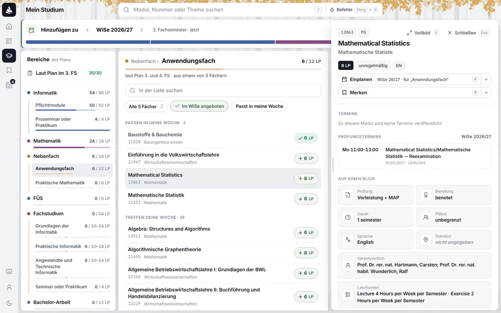

<title>Hinzufügen am Rechner</title>
<meta name="claude:viewport-fit-sides" content="cover">
<!-- Module hinzufügen on a desktop, sixth round (owner, 2026-11-09: „bitte entwickel ein neues konzept statt
     der wekbank. um module für ein semester zu planen. Also der grundansatz ist eigentlich gar nicht so bad.
     Aber wie es umgesetzt ist, ist eine katastrophe. Man verliert sofort den überblick wo man ist, was man
     macht und dann ist das ui auch noch super unaufgeräumt und noisy. Die handy version wiederum ist ziemlich
     gut, die würde ich so lassen. Das funktioniert einfach."). Read against canary (Folia 1.83.3, 2026-11-09)
     and the code of that day: folia/crates/planner/src/study/bench.rs (the workbench: the desktop's three
     columns, the phone's BenchSheet), docs/folia/frontend.md („Adding, moving, taking out"). The rounds
     before are folia/design/hinzufuegen/konzepte.html (the desktop: the dialog, the workbench of 1.64.0
     and its follow-up of 1.75.0) and handy.html (the phone's sheet, rounds four and five). The pictures in
     bilder/ (rechner-heute-*, handy-heute-blatt) are canary at 1440 × 900 and 390 × 844, Informatik B.Sc.
     PO 2008 in its 3. FS, the first two passed, as folia/e2e/bench.mjs seeds it. The prototypes' lists,
     their groups by the week and the modules' facts are canary's too: the workbench's rows as it showed
     them, before and after „Plan übernehmen", and the snapshot's v_module, v_module_schedule (2026W) and
     v_module_exam. Lena's marked modules are the scenario's. Tokens are Betula's (folia/assets/app.css). -->
<link rel="preconnect" href="https://fonts.googleapis.com">
<link rel="preconnect" href="https://fonts.gstatic.com" crossorigin>
<link rel="stylesheet" href="https://fonts.googleapis.com/css2?family=Inter:wght@400..800&family=JetBrains+Mono:wght@500;600&display=swap">
<style>
/* Layout: the thesis and what all three share; a bar for the view; today on a desktop and on a phone; one
   block per variant with its prototype (a desktop of 1440 × 900, scaled to the block) and three columns; the
   comparison, the proposal, what stays and what goes, the questions. The prototypes use Betula's tokens
   (--m-*), light and dark of their own, so that the switch changes the prototypes and not this page. */
:root {
  color-scheme: light;
  --font: "Inter", "Inter Variable", system-ui, -apple-system, "Segoe UI", Roboto, sans-serif;
  --mono: "JetBrains Mono", ui-monospace, "Cascadia Mono", Consolas, monospace;
  --bg: #f1f2f4; --panel: #ffffff; --panel-2: #f6f7f8; --panel-3: #eceef1; --desk: #e6e8ec;
  --line: rgba(15, 23, 42, .08); --line-strong: rgba(15, 23, 42, .15);
  --text: #10151f; --text-2: #4b5565; --text-3: #6b7484;
  --invert: #161b26; --on-invert: #ffffff;
  --accent: oklch(.53 .07 149); --accent-ink: oklch(.44 .07 149);
  --accent-soft: color-mix(in srgb, var(--accent) 10%, var(--panel));
  --accent-line: color-mix(in srgb, var(--accent) 38%, transparent);
  --warn: #8a4b00; --warn-soft: color-mix(in srgb, #d97706 11%, var(--panel));
  --mark: oklch(.6 .17 35); --on-mark: #ffffff;
  --shadow-panel: 0 0 0 1px var(--line), 0 1px 2px rgba(15, 23, 42, .04), 0 10px 28px -16px rgba(15, 23, 42, .16);
}
@media (prefers-color-scheme: dark) {
  :root:not([data-theme="light"]) {
    color-scheme: dark;
    --bg: #0a0c11; --panel: #12151c; --panel-2: #171b24; --panel-3: #1e2330; --desk: #07090d;
    --line: rgba(255, 255, 255, .07); --line-strong: rgba(255, 255, 255, .15);
    --text: #eceff5; --text-2: #a4adc0; --text-3: #8a93a8;
    --invert: #e9edf5; --on-invert: #0d1017;
    --accent-ink: oklch(.8 .06 149);
    --accent-soft: color-mix(in srgb, var(--accent) 18%, var(--panel));
    --accent-line: color-mix(in srgb, var(--accent) 50%, transparent);
    --warn: #f2b45c; --warn-soft: color-mix(in srgb, #f2b45c 12%, var(--panel));
    --mark: oklch(.72 .15 40); --on-mark: #12151c;
    --shadow-panel: 0 0 0 1px var(--line), 0 20px 40px -22px rgba(0, 0, 0, .7);
  }
}
:root[data-theme="dark"] {
  color-scheme: dark;
  --bg: #0a0c11; --panel: #12151c; --panel-2: #171b24; --panel-3: #1e2330; --desk: #07090d;
  --line: rgba(255, 255, 255, .07); --line-strong: rgba(255, 255, 255, .15);
  --text: #eceff5; --text-2: #a4adc0; --text-3: #8a93a8;
  --invert: #e9edf5; --on-invert: #0d1017;
  --accent-ink: oklch(.8 .06 149);
  --accent-soft: color-mix(in srgb, var(--accent) 18%, var(--panel));
  --accent-line: color-mix(in srgb, var(--accent) 50%, transparent);
  --warn: #f2b45c; --warn-soft: color-mix(in srgb, #f2b45c 12%, var(--panel));
  --mark: oklch(.72 .15 40); --on-mark: #12151c;
  --shadow-panel: 0 0 0 1px var(--line), 0 20px 40px -22px rgba(0, 0, 0, .7);
}

* { box-sizing: border-box; }
html { -webkit-text-size-adjust: 100%; }
body { margin: 0; background: var(--bg); color: var(--text); font: 15px/1.55 var(--font); }
:focus-visible { outline: 2px solid var(--accent); outline-offset: 2px; }
h1, h2, h3, h4 { margin: 0; text-wrap: balance; }
p, ul, ol, figure { margin: 0; }
ul, ol { padding: 0; list-style: none; }
button { font: inherit; color: inherit; }
a { color: var(--accent-ink); text-underline-offset: 3px; }
b { font-weight: 650; }
svg.i { width: 16px; height: 16px; flex: none; fill: none; stroke: currentColor; stroke-width: 2; stroke-linecap: round; stroke-linejoin: round; }
.page { max-width: 1320px; margin: 0 auto; padding-block: 40px 80px; padding-left: max(16px, env(safe-area-inset-left, 0px)); padding-right: max(16px, env(safe-area-inset-right, 0px)); display: flex; flex-direction: column; gap: 22px; }
.kicker { font-size: 11px; font-weight: 650; letter-spacing: .07em; text-transform: uppercase; color: var(--text-3); }

/* The thesis. */
.intro { display: grid; grid-template-columns: minmax(0, 1.05fr) minmax(0, 1fr); gap: 28px 40px; align-items: start; }
.intro h1 { margin-top: 8px; font-size: clamp(28px, 4vw, 40px); line-height: 1.1; letter-spacing: -.025em; font-weight: 760; }
.intro .lead { margin-top: 14px; max-width: 64ch; color: var(--text-2); font-size: 16px; text-wrap: pretty; }
.quote { margin-top: 16px; padding: 12px 16px; border-radius: 10px; background: var(--panel); box-shadow: var(--shadow-panel); color: var(--text-2); font-size: 13.5px; text-wrap: pretty; }
.quote + .quote { margin-top: 8px; }
.quote small { display: block; margin-top: 4px; color: var(--text-3); font-size: 12px; }
.rules { padding: 18px 20px; border-radius: 14px; background: var(--panel); box-shadow: var(--shadow-panel); }
.rules ul { margin-top: 12px; display: flex; flex-direction: column; gap: 10px; }
.rules li { display: grid; grid-template-columns: 26px minmax(0, 1fr); gap: 10px; font-size: 14px; color: var(--text-2); text-wrap: pretty; }
.rules li > i { display: grid; place-items: center; width: 26px; height: 26px; border-radius: 7px; background: var(--panel-3); color: var(--text); }
.rules li b { color: var(--text); font-weight: 620; }

/* The bar. */
.setbar { position: sticky; top: env(safe-area-inset-top, 0px); z-index: 20; display: flex; flex-wrap: wrap; align-items: center; justify-content: space-between; gap: 10px 18px; padding: 10px 14px; border-radius: 12px; background: color-mix(in srgb, var(--panel) 92%, transparent); backdrop-filter: blur(8px); box-shadow: var(--shadow-panel); }
body::before { content: ""; position: fixed; inset: 0 0 auto; height: env(safe-area-inset-top, 0px); z-index: 10; background: var(--bg); }
.setbar .group { display: flex; flex-wrap: wrap; align-items: center; gap: 8px 12px; }
.setbar .group > span { color: var(--text-3); font-size: 12px; font-weight: 600; }
.jump { display: flex; flex-wrap: wrap; gap: 4px; }
.jump a { padding: 5px 10px; border-radius: 8px; color: var(--text-2); font-size: 13px; font-weight: 600; text-decoration: none; }
.jump a:hover { background: var(--panel-3); color: var(--text); }
.seg { display: inline-grid; grid-auto-flow: column; gap: 2px; padding: 2px; border-radius: 9px; background: var(--panel-3); }
.seg button { padding: 5px 11px; border: 0; border-radius: 7px; background: none; color: var(--text-2); font-size: 13px; font-weight: 600; cursor: pointer; }
.seg button[aria-pressed="true"] { background: var(--panel); color: var(--text); box-shadow: 0 1px 2px rgba(15, 23, 42, .12), 0 0 0 1px var(--line); }

/* Sections. */
.sec { border-radius: 16px; background: var(--panel); box-shadow: var(--shadow-panel); padding: 24px; display: flex; flex-direction: column; gap: 16px; scroll-margin-top: 80px; min-width: 0; }
.sec > header { display: flex; flex-direction: column; gap: 6px; }
.sec h2 { display: flex; align-items: center; gap: 10px; font-size: 23px; letter-spacing: -.018em; font-weight: 740; }
.sec h3.part { font-size: 17px; font-weight: 720; letter-spacing: -.01em; }
.sec .sub { max-width: 84ch; color: var(--text-2); text-wrap: pretty; }
.sec .sub b { color: var(--text); }
.tag { display: inline-grid; place-items: center; min-width: 30px; height: 30px; padding: 0 8px; border-radius: 8px; background: var(--invert); color: var(--on-invert); font-size: 15px; font-weight: 760; }
.tag.rec-tag { background: var(--accent); color: #fff; font-size: 12px; letter-spacing: .02em; }
.tryit { display: flex; gap: 10px; align-items: flex-start; padding: 10px 14px; border-radius: 10px; background: var(--accent-soft); box-shadow: inset 0 0 0 1px var(--accent-line); color: var(--text-2); font-size: 13.5px; text-wrap: pretty; }
.tryit b { color: var(--text); }
.tryit svg.i { margin-top: 3px; color: var(--accent-ink); }
.how { display: grid; grid-template-columns: repeat(3, minmax(0, 1fr)); gap: 12px; }
.how > div { padding: 14px 16px; border-radius: 12px; background: var(--panel-2); box-shadow: inset 0 0 0 1px var(--line); min-width: 0; }
.how h3 { font-size: 14.5px; font-weight: 700; }
.how ul { margin-top: 8px; display: flex; flex-direction: column; gap: 7px; }
.how li { position: relative; padding-left: 14px; color: var(--text-2); font-size: 13.5px; text-wrap: pretty; }
.how li::before { content: ""; position: absolute; left: 1px; top: .62em; width: 5px; height: 5px; border-radius: 2px; background: var(--line-strong); }
.how li b { color: var(--text); }
.how .weak { background: var(--warn-soft); box-shadow: inset 0 0 0 1px color-mix(in srgb, var(--warn) 25%, transparent); }

/* Today: pictures with marks, the findings beside them. */
.shot { position: relative; border-radius: 12px; overflow: hidden; box-shadow: 0 0 0 1px var(--line); background: var(--desk); }
.shot img, img.shot { display: block; width: 100%; height: auto; }
.shot .pin { position: absolute; transform: translate(-50%, -50%); display: grid; place-items: center; width: 26px; height: 26px; border-radius: 50%; background: var(--mark); color: var(--on-mark); font-size: 13px; font-weight: 750; box-shadow: 0 0 0 3px color-mix(in srgb, var(--panel) 85%, transparent), 0 4px 10px rgba(0, 0, 0, .25); }
figure figcaption { margin-top: 8px; color: var(--text-3); font-size: 12.5px; text-wrap: pretty; }
.today { display: grid; grid-template-columns: minmax(0, 1.55fr) minmax(0, 1fr); gap: 20px; align-items: start; }
.finds { display: flex; flex-direction: column; gap: 12px; counter-reset: f; }
.finds li { display: grid; grid-template-columns: 26px minmax(0, 1fr); gap: 2px 10px; font-size: 14px; color: var(--text-2); text-wrap: pretty; }
.finds li::before { counter-increment: f; content: counter(f); grid-row: span 2; display: grid; place-items: center; width: 26px; height: 26px; border-radius: 50%; background: var(--mark); color: var(--on-mark); font-size: 13px; font-weight: 750; }
.finds li b { color: var(--text); }
.pair { display: grid; grid-template-columns: minmax(0, 1fr) minmax(0, 1fr); gap: 16px; align-items: start; }
.works { display: grid; grid-template-columns: minmax(0, 1.3fr) minmax(0, 1fr); gap: 20px; align-items: start; }
.works ul { display: flex; flex-direction: column; gap: 9px; }
.works li { position: relative; padding-left: 22px; color: var(--text-2); font-size: 14px; text-wrap: pretty; }
.works li svg.i { position: absolute; left: 0; top: 3px; color: var(--accent-ink); }
.works li b { color: var(--text); }

/* Tables, the proposal, the questions. */
.scroll { overflow-x: auto; border-radius: 12px; box-shadow: inset 0 0 0 1px var(--line); }
table { width: 100%; border-collapse: collapse; font-size: 13.5px; min-width: 760px; }
th, td { padding: 10px 12px; text-align: left; vertical-align: top; border-bottom: 1px solid var(--line); text-wrap: pretty; }
thead th { background: var(--panel-2); color: var(--text-3); font-size: 11.5px; font-weight: 650; letter-spacing: .05em; text-transform: uppercase; }
tbody th { font-weight: 620; color: var(--text); width: 19%; }
td { color: var(--text-2); }
td.best { color: var(--text); font-weight: 600; }
tbody tr:last-child > * { border-bottom: 0; }
.rec { padding: 16px 18px; border-radius: 12px; background: var(--accent-soft); box-shadow: inset 0 0 0 1px var(--accent-line); color: var(--text-2); text-wrap: pretty; }
.rec b { color: var(--text); }
.keep { display: grid; grid-template-columns: minmax(0, 1fr) minmax(0, 1fr); gap: 12px; }
.keep > div { padding: 14px 16px; border-radius: 12px; background: var(--panel-2); box-shadow: inset 0 0 0 1px var(--line); }
.keep h3 { font-size: 14.5px; font-weight: 700; }
.keep ul { margin-top: 8px; display: flex; flex-direction: column; gap: 7px; }
.keep li { position: relative; padding-left: 14px; color: var(--text-2); font-size: 13.5px; text-wrap: pretty; }
.keep li::before { content: ""; position: absolute; left: 1px; top: .62em; width: 5px; height: 5px; border-radius: 2px; background: var(--line-strong); }
.keep li b { color: var(--text); }
.keep .gone { background: var(--warn-soft); box-shadow: inset 0 0 0 1px color-mix(in srgb, var(--warn) 25%, transparent); }
.qs { display: flex; flex-direction: column; gap: 10px; counter-reset: q; }
.qs li { counter-increment: q; display: grid; grid-template-columns: 28px minmax(0, 1fr); gap: 4px 12px; padding: 14px 16px; border-radius: 12px; background: var(--panel-2); box-shadow: inset 0 0 0 1px var(--line); }
.qs li::before { content: counter(q); grid-row: span 2; display: grid; place-items: center; width: 28px; height: 28px; border-radius: 7px; background: var(--invert); color: var(--on-invert); font-size: 13px; font-weight: 700; }
.qs li b { color: var(--text); font-size: 14.5px; }
.qs li p { color: var(--text-2); font-size: 14px; text-wrap: pretty; }
.qs em { font-style: normal; font-weight: 650; color: var(--accent-ink); }
.foot { color: var(--text-3); font-size: 12.5px; text-align: center; text-wrap: pretty; }

/* The stage a prototype stands on: its steps, what the step does, the desktop. */
.stage { border-radius: 14px; background: var(--desk); min-width: 0; display: flex; flex-direction: column; }
.stage-bar { display: flex; flex-wrap: wrap; align-items: center; gap: 6px; padding: 12px 14px 0; }
.stage-bar .st { display: inline-flex; align-items: center; gap: 7px; padding: 5px 10px 5px 6px; border: 0; border-radius: 8px; background: var(--panel); box-shadow: 0 0 0 1px var(--line); color: var(--text-2); font-size: 12.5px; font-weight: 600; cursor: pointer; }
.stage-bar .st i { display: grid; place-items: center; width: 20px; height: 20px; border-radius: 6px; background: var(--panel-3); color: var(--text); font-style: normal; font-size: 11.5px; font-weight: 750; }
.stage-bar .st:hover { color: var(--text); }
.stage-bar .st[aria-pressed="true"] { background: var(--invert); color: var(--on-invert); box-shadow: none; }
.stage-bar .st[aria-pressed="true"] i { background: color-mix(in srgb, var(--on-invert) 18%, transparent); color: var(--on-invert); }
.stage-cap { margin: 10px 14px 0; padding: 10px 14px; border-radius: 10px; background: var(--panel); box-shadow: 0 0 0 1px var(--line); color: var(--text-2); font-size: 13.5px; min-height: 44px; text-wrap: pretty; }
.stage-cap b { color: var(--text); }
.stage-in { padding: 12px 14px 14px; overflow-x: auto; overflow-y: hidden; }
.stage-in.fit { overflow-x: hidden; }
.frame { position: relative; border-radius: 10px; overflow: hidden; box-shadow: 0 0 0 1px var(--line-strong), 0 18px 40px -24px rgba(0, 0, 0, .45); outline: none; }
.frame:focus-visible { box-shadow: 0 0 0 2px var(--accent), 0 18px 40px -24px rgba(0, 0, 0, .45); }
.frame > .mk { position: absolute; top: 0; left: 0; transform-origin: 0 0; }
.stage-foot { display: flex; flex-wrap: wrap; align-items: center; justify-content: space-between; gap: 8px 14px; padding: 0 14px 12px; color: var(--text-3); font-size: 12.5px; }
.reset { display: inline-flex; align-items: center; gap: 6px; padding: 5px 10px; border: 0; border-radius: 8px; background: var(--panel); box-shadow: 0 0 0 1px var(--line); color: var(--text-2); font-size: 12.5px; font-weight: 600; cursor: pointer; }
.reset:hover { color: var(--text); }

/* ---------- The prototype: Betula on a desktop, 1440 × 900 ----------
   Betula's tokens, light and dark of their own (the bar's „Darstellung"). */
.mk {
  --m-bg: #f1f2f4; --m-panel: #ffffff; --m-panel-2: #f6f7f8; --m-panel-3: #eceef1;
  --m-line: rgba(15, 23, 42, .08); --m-line-strong: rgba(15, 23, 42, .15);
  --m-text: #10151f; --m-text-2: #4b5565; --m-text-3: #8790a0;
  --m-invert: #161b26; --m-on-invert: #ffffff;
  --m-accent: oklch(.53 .07 149); --m-accent-ink: oklch(.46 .07 149);
  --m-accent-soft: color-mix(in srgb, var(--m-accent) 9%, var(--m-panel));
  --m-accent-line: color-mix(in srgb, var(--m-accent) 32%, transparent);
  --m-ok: #0b7f58; --m-warn: #8f5a0a; --m-warn-soft: color-mix(in srgb, #c98a1a 13%, var(--m-panel));
  --m-hover: color-mix(in oklab, var(--m-text) 4.5%, var(--m-panel));
  --m-shadow: 0 0 0 1px var(--m-line), 0 1px 2px rgba(15, 23, 42, .04), 0 10px 28px -16px rgba(15, 23, 42, .16);
  --m-pop: 0 0 0 1px var(--m-line), 0 12px 40px -10px rgba(15, 23, 42, .3);
  --m-veil: rgba(16, 21, 31, .2);
  --m-toast: #161b26; --m-on-toast: #ffffff; --m-toast-ring: none;
  --a-inf: oklch(.5 .12 262); --a-mat: oklch(.5 .11 330); --a-neb: oklch(.64 .12 75); --a-fues: oklch(.56 .08 190); --a-fach: oklch(.52 .12 30); --a-ba: oklch(.55 .04 260);
  --m-tint: 34%;
  --ease: cubic-bezier(.2, .7, .2, 1);
  width: 1440px; height: 900px; overflow: hidden; background: var(--m-bg); color: var(--m-text); font: 14px/1.4 var(--font); -webkit-font-smoothing: antialiased; font-variant-numeric: tabular-nums;
}
.mk.dark {
  --m-bg: #0a0c11; --m-panel: #12151c; --m-panel-2: #171b24; --m-panel-3: #1e2330;
  --m-line: rgba(255, 255, 255, .07); --m-line-strong: rgba(255, 255, 255, .15);
  --m-text: #eceff5; --m-text-2: #a4adc0; --m-text-3: #7d8699;
  --m-invert: #e9edf5; --m-on-invert: #0d1017;
  --m-accent-ink: oklch(.8 .06 149);
  --m-accent-soft: color-mix(in srgb, var(--m-accent) 17%, var(--m-panel));
  --m-accent-line: color-mix(in srgb, var(--m-accent) 50%, transparent);
  --m-ok: #4fd1a1; --m-warn: #f0b861; --m-warn-soft: color-mix(in srgb, #f0b861 12%, var(--m-panel));
  --m-hover: color-mix(in oklab, var(--m-text) 6.5%, var(--m-panel));
  --m-shadow: 0 0 0 1px var(--m-line), 0 20px 40px -22px rgba(0, 0, 0, .7);
  --m-pop: 0 0 0 1px var(--m-line-strong), 0 16px 48px -8px rgba(0, 0, 0, .8);
  --m-veil: rgba(0, 0, 0, .45);
  --m-toast: #232938; --m-on-toast: #eceff5; --m-toast-ring: inset 0 0 0 1px rgba(255, 255, 255, .1);
  --a-inf: oklch(.76 .1 262); --a-mat: oklch(.76 .1 330); --a-neb: oklch(.82 .1 80); --a-fues: oklch(.8 .07 190); --a-fach: oklch(.75 .1 30); --a-ba: oklch(.78 .04 260);
  --m-tint: 40%;
}
.mk *, .mk *::before, .mk *::after { box-sizing: border-box; }
.mk button { font: inherit; color: inherit; background: none; border: 0; padding: 0; margin: 0; cursor: pointer; text-align: inherit; }
.mk button:focus-visible, .mk input:focus-visible, .mk select:focus-visible { outline: 2px solid var(--m-accent); outline-offset: 1px; }
.mk svg.i { width: 16px; height: 16px; flex: none; fill: none; stroke: currentColor; stroke-width: 2; stroke-linecap: round; stroke-linejoin: round; }
.mk b { font-weight: 620; }
.mk .num { font-family: var(--mono); font-size: 11.5px; font-weight: 500; letter-spacing: -.01em; }
.mk .dot { display: inline-block; flex: none; width: 8px; height: 8px; border-radius: 50%; background: var(--c, var(--m-text-3)); }
.mk kbd { display: inline-grid; place-items: center; min-width: 18px; height: 18px; padding: 0 4px; border-radius: 4px; box-shadow: inset 0 0 0 1px var(--m-line-strong); color: var(--m-text-3); font: 600 10.5px/1 var(--mono); }
.mk .lp { font-size: 11px; font-weight: 600; color: var(--m-text-3); margin-left: 1px; }
.mk .bar { display: flex; gap: 2px; height: 5px; border-radius: 3px; overflow: hidden; background: var(--m-panel-3); }
.mk .bar > i { display: block; height: 100%; background: var(--c); }
.mk .bar > i.ph { background: repeating-linear-gradient(135deg, var(--c) 0 3px, color-mix(in srgb, var(--c) 35%, var(--m-panel)) 3px 6px); }
.mk .bar.thin { height: 4px; gap: 0; }

/* Rail, top bar, sidebar. */
.mk .rail { position: absolute; left: 0; top: 0; bottom: 0; width: 52px; display: flex; flex-direction: column; align-items: center; gap: 6px; padding: 8px 0 10px; }
.mk .rail .logo { width: 38px; height: 38px; border-radius: 10px; background: var(--m-invert); display: grid; place-items: center; margin-bottom: 8px; }
.mk .rail .logo svg { width: 20px; height: 20px; fill: var(--m-on-invert); }
.mk .rail .rb { width: 38px; height: 38px; display: grid; place-items: center; border-radius: 10px; color: var(--m-text-2); }
.mk .rail .rb.on { background: var(--m-invert); color: var(--m-on-invert); }
.mk .rail .grow { flex: 1; }
.mk .top { position: absolute; left: 52px; right: 0; top: 0; height: 56px; }
.mk .top .ttl { position: absolute; left: 22px; top: 17px; font-size: 17px; font-weight: 700; letter-spacing: -.01em; }
.mk .top .search { position: absolute; left: 288px; width: 760px; top: 8px; height: 40px; border-radius: 10px; background: var(--m-panel); box-shadow: var(--m-shadow); display: flex; align-items: center; gap: 10px; padding: 0 12px; color: var(--m-text-3); font-size: 15px; }
.mk .top .search .grow { flex: 1; }
.mk .top .search .cmd { display: flex; align-items: center; gap: 6px; padding-left: 12px; border-left: 1px solid var(--m-line); color: var(--m-text-2); font-size: 12.5px; font-weight: 600; }
.mk .side { position: absolute; left: 60px; top: 56px; width: 272px; bottom: 8px; border-radius: 9px; background: var(--m-panel); box-shadow: var(--m-shadow); padding: 16px 12px; display: flex; flex-direction: column; gap: 6px; overflow: hidden; }
.mk .side h2 { font-size: 15.5px; font-weight: 700; padding: 0 2px 6px; }
.mk .side .prog { position: relative; padding: 10px 12px; border-radius: 9px; background: var(--m-panel-2); box-shadow: inset 0 0 0 1px var(--m-line); font-size: 12.5px; color: var(--m-text-2); line-height: 1.5; }
.mk .side .prog b { display: block; font-size: 14px; color: var(--m-text); }
.mk .side .prog b span { font-weight: 400; color: var(--m-text-2); }
.mk .side .prog svg { position: absolute; right: 10px; top: 12px; color: var(--m-text-3); width: 15px; height: 15px; }
.mk .side .sk { margin: 12px 0 2px; padding: 0 2px; font-size: 10.5px; font-weight: 650; letter-spacing: .08em; text-transform: uppercase; color: var(--m-text-3); }
.mk .side .vw { display: flex; align-items: center; gap: 10px; height: 36px; padding: 0 10px; border-radius: 8px; font-size: 13.5px; font-weight: 600; width: 100%; }
.mk .side .vw small { margin-left: auto; color: var(--m-text-3); font-size: 12px; font-weight: 500; }
.mk .side .vw.on { background: var(--m-invert); color: var(--m-on-invert); }
.mk .side .vw.on small { color: color-mix(in srgb, var(--m-on-invert) 70%, transparent); }
.mk .side .vw:not(.on):hover { background: var(--m-hover); }
.mk .side .lnk { display: grid; grid-template-columns: 16px minmax(0, 1fr) 16px; gap: 10px; align-items: center; padding: 8px 10px; font-size: 13.5px; font-weight: 600; }
.mk .side .lnk small { display: block; color: var(--m-text-3); font-size: 12px; font-weight: 500; }
.mk .side .leg { display: grid; grid-template-columns: 1fr 1fr; gap: 6px 10px; padding: 4px 4px 0; font-size: 12.5px; color: var(--m-text-2); }
.mk .side .leg span { display: flex; align-items: center; gap: 8px; }
.mk .side .leg i { width: 22px; height: 6px; border-radius: 3px; background: var(--m-text-2); }
.mk .side .leg i.p { background: color-mix(in srgb, var(--m-text-2) 40%, var(--m-panel)); }
.mk .side .leg i.o { background: var(--m-panel-3); box-shadow: inset 0 0 0 1px var(--m-line); }
.mk .side .note-p { margin-top: auto; display: flex; gap: 8px; padding: 10px 4px 0; border-top: 1px solid var(--m-line); color: var(--m-text-3); font-size: 12px; }

/* The main column: the overview and the semester. */
.mk .main { position: absolute; left: 340px; right: 8px; top: 56px; bottom: 8px; }
.mk .ov { position: absolute; left: 0; right: 0; top: 0; height: 149px; border-radius: 9px; background: var(--m-panel); box-shadow: var(--m-shadow); padding: 16px 20px; }
.mk .ov-h { display: flex; align-items: flex-end; justify-content: space-between; gap: 16px; }
.mk .ov-h .kick { font-size: 10.5px; font-weight: 650; letter-spacing: .08em; text-transform: uppercase; color: var(--m-text-3); }
.mk .ov-h h2 { margin-top: 2px; font-size: 21px; font-weight: 720; letter-spacing: -.015em; }
.mk .ov-h ul { display: flex; gap: 18px; font-size: 13px; color: var(--m-text-2); padding-bottom: 4px; }
.mk .ov-h li { display: flex; align-items: center; gap: 7px; }
.mk .ov-h li i { width: 11px; height: 11px; border-radius: 3px; background: var(--m-text-2); }
.mk .ov-h li i.p { background: color-mix(in srgb, var(--m-text-2) 38%, var(--m-panel)); }
.mk .ov-h li i.o { background: var(--m-panel); box-shadow: inset 0 0 0 1.5px var(--m-line-strong); }
.mk .ov-h li b { color: var(--m-text); }
.mk .ov-bar { display: flex; gap: 4px; margin-top: 12px; height: 9px; }
.mk .ov-bar > span { display: flex; height: 100%; border-radius: 4px; overflow: hidden; background: var(--m-panel-3); }
.mk .ov-bar > span > i { display: block; height: 100%; background: var(--c); }
.mk .ov-bar > span > i.p { background: color-mix(in srgb, var(--c) var(--m-tint), var(--m-panel)); }
.mk .ov-chips { display: flex; gap: 6px; margin-top: 12px; }
.mk .ov-chips > span { flex: 1 1 0; min-width: 0; display: flex; align-items: center; gap: 8px; height: 33px; padding: 0 10px; border-radius: 8px; background: var(--m-panel-2); box-shadow: inset 0 0 0 1px var(--m-line); font-size: 13px; }
.mk .ov-chips b { flex: 1; min-width: 0; overflow: hidden; text-overflow: ellipsis; white-space: nowrap; font-weight: 640; }
.mk .ov-chips small { color: var(--m-text-2); font-size: 12.5px; white-space: nowrap; }
.mk .ov-chips small.full { color: var(--m-ok); font-weight: 650; }

.mk .semc { position: absolute; left: 0; top: 157px; bottom: 0; right: 0; border-radius: 9px; background: var(--m-panel); box-shadow: var(--m-shadow); display: flex; flex-direction: column; overflow: hidden; }
.mk.v-A.is-open .semc { right: 488px; box-shadow: 0 0 0 2px color-mix(in srgb, var(--m-accent) 55%, transparent), var(--m-shadow); }
.mk .semc.anim-narrow { animation: semNarrow .24s var(--ease); }
.mk .semc.anim-widen { animation: semWiden .24s var(--ease); }
@keyframes semNarrow { from { right: 0; } }
@keyframes semWiden { from { right: 488px; } }
.mk .sem-h { flex: none; display: flex; align-items: center; gap: 10px; height: 60px; padding: 0 12px 0 10px; border-bottom: 1px solid var(--m-line); }
.mk .sem-h .arw { display: grid; place-items: center; width: 32px; height: 32px; border-radius: 8px; color: var(--m-text-2); }
.mk .sem-h .arw:hover { background: var(--m-hover); color: var(--m-text); }
.mk .sem-h h3 { display: flex; align-items: center; gap: 6px; font-size: 22px; font-weight: 740; letter-spacing: -.02em; white-space: nowrap; }
.mk .sem-h h3 svg { width: 16px; height: 16px; color: var(--m-text-3); }
.mk .sem-h .now { padding: 2px 7px; border-radius: 6px; background: var(--m-accent); color: #fff; font-size: 11.5px; font-weight: 700; }
.mk .sem-h .fs { color: var(--m-text-2); font-size: 14px; white-space: nowrap; }
.mk .sem-h .grow { flex: 1; }
.mk .sem-h .lps { font-size: 13px; color: var(--m-text-2); white-space: nowrap; }
.mk .sem-h .lps b { font-size: 15px; color: var(--m-text); font-weight: 720; }
.mk .sem-h .more { display: grid; place-items: center; width: 32px; height: 32px; border-radius: 8px; color: var(--m-text-2); }
.mk .sem-h .hfig { display: flex; flex-direction: column; align-items: flex-end; gap: 6px; width: 300px; }
.mk .sem-h .hfig span { font-size: 12.5px; color: var(--m-text-2); }
.mk .sem-h .hfig b { font-size: 14px; color: var(--m-text); font-weight: 720; }
.mk .sem-h .hfig .bar { width: 100%; }
.mk .sem-body { position: relative; flex: 1; min-height: 0; display: flex; }
.mk .sem-rows { flex: 1; min-width: 0; overflow: auto; }
.mk .thead { display: grid; height: 34px; align-items: center; padding: 0 16px 0 22px; border-bottom: 1px solid var(--m-line); font-size: 10.5px; font-weight: 650; letter-spacing: .08em; text-transform: uppercase; color: var(--m-text-3); }
.mk .wide { grid-template-columns: minmax(0, 2.1fr) minmax(0, 1.15fr) minmax(0, 1.05fr) 50px 96px 50px 116px 34px; column-gap: 14px; }
.mk .srow { position: relative; display: grid; align-items: center; min-height: 54px; padding: 7px 16px 7px 22px; border-bottom: 1px solid var(--m-line); font-size: 13.5px; }
.mk .srow.compact { grid-template-columns: minmax(0, 1fr) auto 26px 26px; column-gap: 12px; }
.mk .srow .nm b { display: block; font-size: 14px; font-weight: 620; white-space: nowrap; overflow: hidden; text-overflow: ellipsis; }
.mk .srow .nm small { display: flex; align-items: center; gap: 6px; margin-top: 1px; color: var(--m-text-3); font-size: 12px; white-space: nowrap; overflow: hidden; }
.mk .srow .nm small em { font-style: normal; color: var(--m-text-2); }
.mk .srow .cell { color: var(--m-text-2); white-space: nowrap; overflow: hidden; text-overflow: ellipsis; }
.mk .srow .cr { text-align: right; font-weight: 720; font-size: 14.5px; }
.mk .srow .tag { justify-self: start; padding: 2px 6px; border-radius: 5px; background: var(--m-panel-3); color: var(--m-text-2); font-size: 11px; font-weight: 700; }
.mk .srow .tm { display: flex; align-items: center; gap: 6px; color: var(--m-text-2); white-space: nowrap; }
.mk .srow .st { display: grid; place-items: center; width: 22px; height: 22px; color: var(--m-ok); }
.mk .srow .st svg { width: 20px; height: 20px; }
.mk .srow .st.plan { color: var(--m-text-3); }
.mk .srow .rm { display: grid; place-items: center; width: 26px; height: 26px; border-radius: 7px; color: var(--m-text-3); opacity: 0; }
.mk .srow:hover .rm, .mk .srow .rm:focus-visible { opacity: 1; }
.mk .srow .rm:hover { background: var(--m-hover); color: var(--m-text); }
.mk .srow.flash { animation: flash 1.8s var(--ease); }
@keyframes flash { 0%, 30% { background: var(--m-accent-soft); box-shadow: inset 3px 0 0 var(--m-accent); } 100% { background: transparent; box-shadow: inset 3px 0 0 transparent; } }
.mk .srow.ph { margin: 6px 12px; min-height: 58px; padding-left: 12px; border-radius: 9px; border: 0; outline: 1.5px dashed var(--m-line-strong); outline-offset: -1.5px; }
.mk .srow.ph .pick { display: inline-flex; align-items: center; gap: 2px; color: var(--m-accent-ink); font-weight: 650; font-size: 12.5px; }
.mk .addrow { display: flex; align-items: center; gap: 10px; height: 46px; margin: 4px 10px; padding: 0 12px; border-radius: 8px; color: var(--m-accent-ink); font-weight: 650; font-size: 14px; }
.mk .addrow:hover { background: var(--m-accent-soft); }
.mk .addrow[aria-pressed="true"] { background: var(--m-accent-soft); box-shadow: inset 0 0 0 1px var(--m-accent-line); }
.mk .empty { display: flex; flex-direction: column; align-items: center; gap: 10px; padding: 56px 20px 30px; color: var(--m-text-2); font-weight: 600; }
.mk .empty .ic { display: grid; place-items: center; width: 44px; height: 44px; border-radius: 12px; background: var(--m-panel-3); color: var(--m-text-2); }
.mk .empty .go { display: inline-flex; align-items: center; gap: 8px; height: 42px; padding: 0 18px; margin-top: 4px; border-radius: 9px; background: var(--m-accent); color: #fff; font-weight: 650; }
.mk .empty .go[aria-pressed="true"] { background: var(--m-accent-soft); color: var(--m-accent-ink); box-shadow: inset 0 0 0 1px var(--m-accent-line); }
.mk .empty.small { padding: 26px 20px; font-size: 13.5px; }

/* The sheet's content, the same in all three. */
.mk .sh-t { display: flex; align-items: center; gap: 8px; }
.mk .sh-t .what { font-size: 15.5px; font-weight: 700; letter-spacing: -.01em; white-space: nowrap; }
.mk .sh-t .what span { color: var(--m-text-2); font-weight: 500; }
.mk .sh-t .grow { flex: 1; }
.mk .sh-t .fig { font-size: 12.5px; color: var(--m-text-2); white-space: nowrap; }
.mk .sh-t .fig b { font-size: 14px; color: var(--m-text); font-weight: 720; }
.mk .x { display: grid; place-items: center; width: 30px; height: 30px; border-radius: 8px; color: var(--m-text-2); }
.mk .x:hover { background: var(--m-hover); color: var(--m-text); }
.mk .hbar { margin-top: 10px; height: 6px; }
.mk .path { display: flex; align-items: center; gap: 4px; min-height: 26px; }
.mk .path .back { display: grid; place-items: center; width: 28px; height: 28px; margin-left: -6px; border-radius: 8px; color: var(--m-text-2); }
.mk .path .back:hover { background: var(--m-hover); color: var(--m-text); }
.mk .path .crumb { padding: 2px 4px; border-radius: 5px; color: var(--m-text-3); font-size: 12.5px; font-weight: 600; }
.mk .path .crumb:hover { color: var(--m-text); background: var(--m-hover); }
.mk .path .sep { color: var(--m-text-3); font-size: 12px; }
.mk .pt { display: flex; align-items: center; gap: 8px; margin-top: 2px; }
.mk .pt h4 { flex: 1; min-width: 0; font-size: 16.5px; font-weight: 720; letter-spacing: -.01em; white-space: nowrap; overflow: hidden; text-overflow: ellipsis; }
.mk .pt .fig { font-size: 12.5px; color: var(--m-text-2); white-space: nowrap; }
.mk .pt .fig b { font-size: 14px; color: var(--m-text); font-weight: 720; }
.mk .pbar { margin-top: 8px; }
.mk .pg { padding: 4px 16px 18px; }
.mk .pg.anim-in { animation: pgIn .2s var(--ease); }
.mk .pg.anim-back { animation: pgBack .2s var(--ease); }
@keyframes pgIn { from { transform: translateX(18px); opacity: 0; } }
@keyframes pgBack { from { transform: translateX(-18px); opacity: 0; } }
.mk .sk2 { display: flex; align-items: center; gap: 8px; margin: 16px 2px 8px; font-size: 10.5px; font-weight: 680; letter-spacing: .08em; text-transform: uppercase; color: var(--m-text-3); }
.mk .sk2 small { font-size: 10.5px; font-weight: 600; letter-spacing: .04em; }
.mk .take { display: flex; align-items: center; justify-content: center; gap: 8px; width: 100%; height: 40px; margin: 2px 0 6px; border-radius: 9px; background: var(--m-accent); color: #fff; font-weight: 650; }
.mk .take:hover { filter: brightness(1.05); }
.mk .okline { display: flex; align-items: center; gap: 8px; margin: 4px 2px 10px; color: var(--m-text-2); font-size: 13px; }
.mk .okline .dot { --c: var(--m-ok); }
.mk .mr { display: grid; grid-template-columns: minmax(0, 1fr) auto; align-items: center; gap: 12px; padding: 0 2px; border-bottom: 1px solid var(--m-line); }
.mk .mr:last-child { border-bottom: 0; }
.mk .mr-go { display: block; min-width: 0; padding: 9px 4px; border-radius: 6px; }
.mk .mr-go:hover b { text-decoration: underline; text-decoration-color: var(--m-line-strong); text-underline-offset: 3px; }
.mk .mr-go b { display: block; font-size: 14px; font-weight: 620; line-height: 1.3; }
.mk .mr-go small { display: flex; flex-wrap: wrap; align-items: center; gap: 2px 7px; margin-top: 2px; color: var(--m-text-3); font-size: 12px; }
.mk .mr-go small .fit { display: inline-flex; align-items: center; gap: 5px; color: var(--m-text-2); }
.mk .mr-go small .fit .dot { --c: var(--m-ok); width: 7px; height: 7px; }
.mk .mr-go small .fit.half .dot { --c: var(--a-neb); }
.mk .mr-go small .fit.no .dot { --c: var(--m-warn); }
.mk .mr-go small .mk-mark { display: inline-flex; align-items: center; gap: 4px; color: var(--m-text-2); }
.mk .mr-go small .mk-mark svg { width: 12px; height: 12px; }
.mk .mr.done .mr-go b { color: var(--m-text-2); }
.mk .pill { display: inline-flex; align-items: center; gap: 3px; height: 30px; padding: 0 12px; border-radius: 15px; box-shadow: inset 0 0 0 1px var(--m-accent-line); color: var(--m-accent-ink); font-weight: 680; font-size: 13.5px; white-space: nowrap; }
.mk .pill .lp { color: inherit; opacity: .8; }
.mk .pill:hover { background: var(--m-accent-soft); }
.mk .pill.on { background: var(--m-accent-soft); }
.mk .pill.done { box-shadow: none; color: var(--m-ok); font-size: 12.5px; padding: 0 4px; cursor: default; }
.mk .cc { position: relative; display: block; width: 100%; margin: 8px 0; padding: 10px 40px 10px 12px; border-radius: 9px; outline: 1.5px dashed var(--m-line-strong); outline-offset: -1.5px; }
.mk .cc:hover { background: var(--m-hover); }
.mk .cc .l1 { display: flex; align-items: baseline; justify-content: space-between; gap: 10px; }
.mk .cc .l1 b { font-size: 14px; font-weight: 650; }
.mk .cc .l1 span { font-size: 12.5px; color: var(--m-text-2); white-space: nowrap; }
.mk .cc .l1 span b { font-size: 13.5px; color: var(--m-text); font-weight: 720; }
.mk .cc .bar { margin: 7px 0 7px; }
.mk .cc .l3 { display: flex; align-items: center; gap: 7px; font-size: 12.5px; color: var(--m-text-2); }
.mk .cc .l3 em { font-style: normal; color: var(--m-text-3); }
.mk .cc .l3 .res { margin-left: auto; padding: 1px 7px; border-radius: 5px; background: var(--m-panel-3); color: var(--m-text-2); font-size: 11.5px; font-weight: 650; }
.mk .cc > svg { position: absolute; right: 12px; top: 50%; margin-top: -8px; color: var(--m-text-3); }
.mk .ways { margin-top: 16px; border-top: 1px solid var(--m-line); }
.mk .way { display: flex; align-items: center; gap: 12px; width: 100%; height: 46px; padding: 0 6px; border-bottom: 1px solid var(--m-line); font-weight: 620; }
.mk .way:hover { background: var(--m-hover); }
.mk .way .grow { flex: 1; }
.mk .way small { color: var(--m-text-3); font-size: 12px; font-weight: 500; }
.mk .way > svg:first-child { color: var(--m-text-2); }
.mk .way > svg:last-child { color: var(--m-text-3); }
.mk .rule { margin: 10px 2px 10px; color: var(--m-text-2); font-size: 13px; }
.mk .srch { display: flex; align-items: center; gap: 8px; height: 38px; padding: 0 11px; border-radius: 9px; box-shadow: inset 0 0 0 1px var(--m-line-strong); color: var(--m-text-3); background: var(--m-panel); }
.mk .srch input { flex: 1; min-width: 0; height: 100%; border: 0; background: none; color: var(--m-text); font: inherit; font-size: 14px; outline: none; }
.mk .srch input::placeholder { color: var(--m-text-3); }
.mk .chips { display: flex; flex-wrap: wrap; gap: 6px; margin: 10px 0 2px; }
.mk .chip { position: relative; display: inline-flex; align-items: center; gap: 6px; height: 32px; padding: 0 12px; border-radius: 16px; box-shadow: inset 0 0 0 1px var(--m-line-strong); color: var(--m-text-2); font-size: 13px; font-weight: 620; white-space: nowrap; }
.mk .chip:hover { background: var(--m-hover); }
.mk .chip.on { background: var(--m-accent-soft); box-shadow: inset 0 0 0 1px var(--m-accent-line); color: var(--m-accent-ink); }
.mk .chip svg { width: 14px; height: 14px; }
.mk .chip select { position: absolute; inset: 0; width: 100%; opacity: 0; cursor: pointer; font: inherit; }
.mk .grp { display: flex; align-items: center; gap: 6px; margin: 16px 2px 2px; font-size: 10.5px; font-weight: 680; letter-spacing: .08em; text-transform: uppercase; color: var(--m-text-3); }
.mk .lfoot { display: flex; gap: 8px; margin-top: 16px; }
.mk .lfoot button { display: inline-flex; align-items: center; gap: 6px; height: 36px; padding: 0 14px; border-radius: 9px; box-shadow: inset 0 0 0 1px var(--m-line-strong); font-weight: 620; font-size: 13.5px; }
.mk .lfoot button:hover { background: var(--m-hover); }
.mk .hint { margin: 14px 2px 0; color: var(--m-text-3); font-size: 12.5px; }
.mk .ar { margin-top: 12px; }
.mk .ar-h { display: flex; align-items: center; gap: 8px; padding: 6px 2px; font-size: 14.5px; font-weight: 700; }
.mk .ar-h .afig { margin-left: auto; font-size: 12.5px; color: var(--m-text-2); font-weight: 500; }
.mk .ar-h .afig b { color: var(--m-text); font-weight: 720; }
.mk .sg { position: relative; display: block; width: 100%; margin-left: 4px; padding: 7px 30px 9px 14px; border-left: 2px solid var(--m-line); border-radius: 0 7px 7px 0; }
.mk .sg:hover { background: var(--m-hover); }
.mk .sg .l1 { display: flex; justify-content: space-between; gap: 10px; font-size: 13.5px; }
.mk .sg .l1 span { color: var(--m-text-2); font-size: 12.5px; white-space: nowrap; }
.mk .sg .l1 span b { color: var(--m-text); }
.mk .sg .bar { margin-top: 6px; height: 4px; }
.mk .sg > svg { position: absolute; right: 8px; top: 50%; margin-top: -8px; color: var(--m-text-3); }
.mk .sg.single { margin-left: 0; border-left: 0; padding-left: 2px; border-radius: 7px; }

/* A: the sheet beside the semester. */
.mk .sha { position: absolute; right: 0; top: 157px; bottom: 0; width: 480px; border-radius: 9px; background: var(--m-panel); box-shadow: var(--m-shadow); display: flex; flex-direction: column; overflow: hidden; }
.mk .sha.anim-in { animation: shaIn .24s var(--ease); }
@keyframes shaIn { from { transform: translateX(40px); opacity: 0; } }
.mk .sh-head { flex: none; padding: 14px 14px 14px 18px; border-bottom: 1px solid var(--m-line); }
.mk .sh-path { flex: none; padding: 10px 18px 12px; border-bottom: 1px solid var(--m-line); }
.mk .sh-body { position: relative; flex: 1; min-height: 0; overflow: auto; overscroll-behavior: contain; }
.mk .sh-body .pg { padding-left: 18px; padding-right: 18px; }

/* B: the semester opens. */
.mk .semc .split { display: grid; grid-template-columns: minmax(0, 1fr) 488px; flex: 1; min-height: 0; }
.mk .semc .split > .sem-rows { border-right: 1px solid var(--m-line); }
.mk .semc .split.anim-in > .ah { animation: ahIn .24s var(--ease); }
@keyframes ahIn { from { transform: translateX(30px); opacity: 0; } }
.mk .ah { display: flex; flex-direction: column; min-height: 0; background: var(--m-panel-2); }
.mk .ah-top { flex: none; padding: 12px 12px 12px 18px; border-bottom: 1px solid var(--m-line); }
.mk .ah-top .sh-t .what { font-size: 15px; }
.mk .ah .sh-body .pg { padding-left: 18px; padding-right: 18px; }
.mk .ah .cc, .mk .ah .srch { background: var(--m-panel); }

/* C: the phone's sheet, from below. */
.mk .veil { position: absolute; left: 52px; top: 56px; right: 0; bottom: 0; background: var(--m-veil); }
.mk .veil.anim-in { animation: fade .24s ease; }
@keyframes fade { from { opacity: 0; } }
.mk .shc { position: absolute; left: 536px; width: 700px; top: 456px; bottom: -14px; border-radius: 16px 16px 0 0; background: var(--m-panel); box-shadow: var(--m-pop); display: flex; flex-direction: column; overflow: hidden; transition: top .26s var(--ease); }
.mk .shc.full { top: 82px; }
.mk .shc.anim-in { animation: shcIn .28s var(--ease); }
@keyframes shcIn { from { transform: translateY(70%); } }
.mk .grab { flex: none; width: 38px; height: 4px; margin: 8px auto 0; border-radius: 2px; background: var(--m-line-strong); }
.mk .shc .sh-head { padding-top: 8px; }
.mk .shc .sh-body { padding-bottom: 14px; }

/* A module: beside the page (A, B), as a second sheet (C). */
.mk .mp { position: absolute; right: 8px; top: 56px; bottom: 8px; width: 480px; border-radius: 9px; background: var(--m-panel); box-shadow: var(--m-pop); display: flex; flex-direction: column; overflow: hidden; z-index: 30; }
.mk .mp.anim-in { animation: shaIn .22s var(--ease); }
.mk .mp.c { left: 556px; right: auto; width: 660px; top: 170px; bottom: -14px; border-radius: 16px 16px 0 0; }
.mk .mp.c.anim-in { animation: shcIn .26s var(--ease); }
.mk .mp-in { flex: 1; overflow: auto; padding: 16px 20px 22px; }
.mk .mp-top { display: flex; align-items: center; gap: 6px; }
.mk .mp-top .bd { padding: 3px 7px; border-radius: 6px; box-shadow: inset 0 0 0 1px var(--m-line-strong); color: var(--m-text-2); }
.mk .mp-top .grow { flex: 1; }
.mk .mp-top .tb { display: inline-flex; align-items: center; gap: 6px; height: 30px; padding: 0 8px; border-radius: 8px; color: var(--m-text-2); font-size: 13px; font-weight: 600; }
.mk .mp-top .tb:hover { background: var(--m-hover); color: var(--m-text); }
.mk .mp h4 { margin-top: 12px; font-size: 21px; font-weight: 740; letter-spacing: -.015em; line-height: 1.2; }
.mk .mp .en { margin-top: 3px; color: var(--m-text-2); font-size: 14px; }
.mk .mp .bds { display: flex; gap: 6px; margin-top: 12px; }
.mk .mp .bds span { padding: 3px 9px; border-radius: 6px; box-shadow: inset 0 0 0 1px var(--m-line-strong); font-size: 12.5px; font-weight: 650; color: var(--m-text-2); }
.mk .mp .bds span:first-child { background: var(--m-invert); color: var(--m-on-invert); box-shadow: none; }
.mk .mp .act { display: flex; align-items: center; gap: 10px; width: 100%; height: 42px; margin-top: 12px; padding: 0 12px; border-radius: 9px; box-shadow: inset 0 0 0 1px var(--m-line-strong); font-weight: 650; }
.mk .mp .act + .act { margin-top: 8px; }
.mk .mp .act small { color: var(--m-text-2); font-weight: 500; font-size: 13px; }
.mk .mp .act .grow { flex: 1; }
.mk .mp .act:hover { background: var(--m-hover); }
.mk .mp .act.plan { box-shadow: inset 0 0 0 1px var(--m-accent-line); color: var(--m-accent-ink); background: var(--m-accent-soft); }
.mk .mp .act.plan small { color: var(--m-accent-ink); }
.mk .mp .act.planned { background: var(--m-invert); color: var(--m-on-invert); box-shadow: none; }
.mk .mp .act.planned small { color: color-mix(in srgb, var(--m-on-invert) 75%, transparent); }
.mk .mp .act.planned kbd { box-shadow: inset 0 0 0 1px color-mix(in srgb, var(--m-on-invert) 35%, transparent); color: var(--m-on-invert); }
.mk .mp .sec2 { margin-top: 20px; }
.mk .mp .sec2 > p:first-child { font-size: 10.5px; font-weight: 680; letter-spacing: .08em; text-transform: uppercase; color: var(--m-text-3); margin-bottom: 8px; }
.mk .mp .tl { display: grid; grid-template-columns: 112px minmax(0, 1fr) auto; gap: 10px; align-items: center; padding: 8px 10px; border-radius: 8px; background: var(--m-panel-2); font-size: 13px; }
.mk .mp .tl + .tl { margin-top: 4px; }
.mk .mp .tl b { font-weight: 650; }
.mk .mp .tl span { color: var(--m-text-2); }
.mk .mp .tl em { font-style: normal; font-size: 12px; font-weight: 650; color: var(--m-ok); white-space: nowrap; }
.mk .mp .tl em.no { color: var(--m-warn); }
.mk .mp .tl em.opt { color: var(--m-text-3); font-weight: 500; }
.mk .mp .tiles { display: grid; grid-template-columns: 1fr 1fr; gap: 8px; }
.mk .mp .tiles div { padding: 9px 12px; border-radius: 9px; box-shadow: inset 0 0 0 1px var(--m-line); font-size: 13.5px; font-weight: 620; }
.mk .mp .tiles div small { display: block; color: var(--m-text-3); font-size: 11.5px; font-weight: 500; }
.mk .mp .tiles div.w { grid-column: span 2; }
.mk .mp .muted { color: var(--m-text-2); font-size: 13px; }

/* The note that waits (WaitNote). */
.mk .note { position: absolute; bottom: 18px; z-index: 40; display: flex; align-items: center; gap: 12px; min-height: 48px; padding: 0 6px 0 14px; border-radius: 11px; background: var(--m-toast); color: var(--m-on-toast); box-shadow: var(--m-toast-ring), var(--m-pop); font-size: 14px; font-weight: 620; }
.mk .note.anim-in { animation: noteIn .22s var(--ease); }
@keyframes noteIn { from { transform: translateY(14px); opacity: 0; } }
.mk .note .ok { display: grid; place-items: center; width: 22px; height: 22px; border-radius: 50%; background: color-mix(in srgb, var(--m-on-toast) 16%, transparent); }
.mk .note .ok svg { width: 13px; height: 13px; }
.mk .note .t { flex: 1; min-width: 0; }
.mk .note .t small { display: block; font-weight: 500; font-size: 12.5px; color: color-mix(in srgb, var(--m-on-toast) 70%, transparent); }
.mk .note .u { height: 36px; padding: 0 12px; margin-left: 6px; border-left: 1px solid color-mix(in srgb, var(--m-on-toast) 20%, transparent); font-weight: 680; }
.mk .note .nx { display: grid; place-items: center; width: 32px; height: 32px; border-radius: 8px; }
.mk .note .nx:hover, .mk .note .u:hover { background: color-mix(in srgb, var(--m-on-toast) 10%, transparent); }

@media (prefers-reduced-motion: reduce) {
  .mk *, .mk *::before, .mk *::after { animation: none !important; transition: none !important; }
}

@media (max-width: 980px) {
  .intro, .today, .works, .pair { grid-template-columns: minmax(0, 1fr); }
  .how, .keep { grid-template-columns: minmax(0, 1fr); }
}
@media (max-width: 560px) {
  .setbar { position: static; }
  .sec { padding: 18px 14px; }
  .stage-in { padding: 10px 8px 10px; }
  .stage-bar, .stage-foot { padding-left: 8px; padding-right: 8px; }
  .stage-cap { margin-left: 8px; margin-right: 8px; }
}
</style>

<main class="page">
  <section class="intro">
    <div>
      <p class="kicker">Mein Studium · Module hinzufügen · sechste Runde · am Rechner</p>
      <h1>Hinzufügen am Rechner, ohne die Seite zu verlassen</h1>
      <p class="lead">Am Rechner tauscht „Module hinzufügen“ die ganze Seite aus: Die Ansichten, die Übersicht und der Kopf des Semesters verschwinden. An ihrer Stelle stehen eine Leiste, ein Baum mit elf Balken, eine Liste und rechts ein schmaler Rest des Semesters. Am Handy bleibt das Semester stehen, und ein Blatt kommt dazu. Das funktioniert. Diese Runde bringt das Blatt des Handys auf den Rechner, mit seinem Inhalt, seinen Seiten und seinem Pfad, in drei Varianten, wo es steht. Jede ist ein Prototyp in zehn Schritten auf den Daten von canary: Lena, Informatik B.Sc., plant das WiSe 2026/27 im 3. FS.</p>
      <p class="quote">„Also der grundansatz ist eigentlich gar nicht so bad. Aber wie es umgesetzt ist, ist eine katastrophe. Man verliert sofort den überblick wo man ist, was man macht und dann ist das ui auch noch super unaufgeräumt und noisy.“<small>09.11.</small></p>
      <p class="quote">„Die handy version wiederum ist ziemlich gut, die würde ich so lassen. Das funktioniert einfach.“<small>09.11.</small></p>
      <p class="quote">„Achte darauf, dass spatial consistency eingehalten wird und dass der Kontext möglichst erhalten bleibt.“<small>03.11., zur Werkbank am Handy</small></p>
    </div>
    <div class="rules">
      <p class="kicker">Was alle drei gemeinsam haben</p>
      <ul>
        <li><i><svg class="i" viewBox="0 0 24 24"><rect width="18" height="18" x="3" y="3" rx="2"/><path d="M9 3v18"/></svg></i><span><b>Die Seite bleibt.</b> „Module hinzufügen“ wechselt nicht die Seite. Ansichten, Übersicht und das Semester mit seinem Kopf und ‹ › stehen, wo sie standen. Was man einplant, erscheint im Semester, so wie es danach dort steht.</span></li>
        <li><i><svg class="i" viewBox="0 0 24 24"><rect width="18" height="18" x="3" y="3" rx="2"/><path d="M15 3v18"/></svg></i><span><b>Das Blatt des Handys.</b> Was man hinzufügen kann, ist eine Spalte mit dem Aufbau des Handys: „Laut Plan im 3. FS“ mit „Plan übernehmen“, „Aus dem 4. FS vorziehen“, dann „Alle Bereiche ›“, „Gemerkt ›“, „Im Katalog suchen ›“. Kein Baum daneben, keine dritte Spalte.</span></li>
        <li><i><svg class="i" viewBox="0 0 24 24"><path d="m15 18-6-6 6-6"/></svg></i><span><b>Hinein und zurück.</b> Eine Zeile mit › öffnet eine Seite im Blatt. Darüber stehen ‹ und der Pfad („Übersicht ›“). Esc und ‹ gehen einen Schritt zurück.</span></li>
        <li><i><svg class="i" viewBox="0 0 24 24"><path d="M3 12h18"/><path d="M3 6h10"/></svg></i><span><b>Ein Kopf, ein Balken.</b> „Hinzufügen zu WiSe 2026/27“ und „24 von 30 LP“ über dem Balken des Semesters, einmal. Balken je Untergruppe gibt es nur auf „Alle Bereiche“ und über einer Liste.</span></li>
        <li><i><svg class="i" viewBox="0 0 24 24"><path d="M15 3h6v6"/><path d="M10 14 21 3"/><path d="M18 13v6a2 2 0 0 1-2 2H5a2 2 0 0 1-2-2V8a2 2 0 0 1 2-2h6"/></svg></i><span><b>Ein Modul steht, wo Module immer stehen.</b> Ein Klick auf eine Zeile zeigt das Modul. Esc führt zurück in die Liste, an die Stelle, wo man war. „Einplanen“ dort plant für die Wahl, aus der man kam.</span></li>
        <li><i><svg class="i" viewBox="0 0 24 24"><rect width="14" height="20" x="5" y="2" rx="2"/><path d="M12 18h.01"/></svg></i><span><b>Am Handy bleibt alles, wie es ist.</b> Das Blatt dort ist das Vorbild; am Rechner kommt dasselbe Blatt dazu, und die drei Spalten gehen.</span></li>
      </ul>
    </div>
  </section>

  <nav class="setbar" aria-label="Ansicht der Prototypen">
    <div class="jump"><a href="#heute">Heute</a><a href="#a">A</a><a href="#b">B</a><a href="#c">C</a><a href="#vergleich">Vergleich</a><a href="#bleibt">Was bleibt</a><a href="#fragen">Fragen</a></div>
    <div class="group">
      <span>Prototyp</span>
      <div class="seg" id="set-size"><button type="button" data-v="fit" aria-pressed="true">Eingepasst</button><button type="button" data-v="full" aria-pressed="false">100 %</button></div>
      <span>Darstellung</span>
      <div class="seg" id="set-theme"><button type="button" data-v="light" aria-pressed="true">Hell</button><button type="button" data-v="dark" aria-pressed="false">Dunkel</button></div>
    </div>
  </nav>

  <section class="sec" id="heute">
    <header>
      <h2>Was heute passiert</h2>
      <p class="sub">Canary, Folia 1.83.3, 1440 × 900: Lena hat das 1. und 2. FS bestanden und öffnet das leere WiSe 2026/27. Ein Klick auf „Module hinzufügen“, „Plan übernehmen“, dann „Nebenfach“.</p>
    </header>
    <figure>
      
      <figcaption>Links „Mein Studium“ mit dem leeren WiSe 2026/27, rechts dieselbe Seite nach einem Klick auf „Module hinzufügen“. Dazwischen bewegt sich nichts: Die Seite wird ausgetauscht.</figcaption>
    </figure>
    <div class="today">
      <figure>
        <div class="shot">
          
          <span class="pin" style="left: 4.4%; top: 9.6%">1</span>
          <span class="pin" style="left: 23.6%; top: 19.4%">2</span>
          <span class="pin" style="left: 85.6%; top: 9.6%">3</span>
          <span class="pin" style="left: 3.4%; top: 49.9%">4</span>
          <span class="pin" style="left: 66.6%; top: 16.6%">5</span>
        </div>
        <figcaption>Nach „Plan übernehmen“ und einem Klick auf „Nebenfach“.</figcaption>
      </figure>
      <ol class="finds">
        <li><b>Ein Klick, eine andere Seite.</b><span>Die Ansichten links, die Übersicht mit den Bereichen und der Kopf des Semesters verschwinden ohne Bewegung. An ihrer Stelle steht eine Leiste über die ganze Breite mit einem zweiten ‹ ›. Wer hinsieht, erkennt „Mein Studium“ nicht wieder.</span></li>
        <li><b>Drei Spalten, kein Anfang.</b><span>„Bereiche des Plans“, „Laut Regelstudienplan im 3. FS“ bzw. „Anwendungsfach“, „WiSe 2026/27“ und darüber „Hinzufügen zu“: vier Überschriften, die alle dasselbe ankündigen. Wo man gerade ist, sagt nur ein grauer Grund an einer von 17 Zeilen links.</span></li>
        <li><b>16 Balken, eine Zahl doppelt.</b><span>Unter „Laut Plan im 3. FS“: die Leiste, elf im Baum, vier an den Wahlen der Mitte. „24 von 30 LP“ steht in der Leiste und als „24/30“ an „Laut Plan im 3. FS“ im Baum.</span></li>
        <li><b>Der Klick landet woanders.</b><span>Ein Klick auf „Nebenfach“ wählt „Anwendungsfach“. Die Mitte wechselt dabei von einer gemischten Liste zu Suche, Chips und Gruppen. „Gemerkt“ und „Im Katalog suchen“ stehen bei 900 px Höhe unter dem Rand.</span></li>
        <li><b>Das Semester als Rest.</b><span>Was man plant, steht in einer schmalen Karte rechts, die nach ein paar Zeilen endet; darunter steht nur der Hintergrund. Öffnet man ein Modul, liegt es genau darüber, und was man geplant hat, ist nicht mehr zu sehen.</span></li>
      </ol>
    </div>
    <h3 class="part">Was am Handy funktioniert</h3>
    <div class="works">
      <figure>
        
        <figcaption>Canary am Handy, 390 × 844: das Blatt halb hoch unter dem Semester, „Plan übernehmen“, die Seite „Anwendungsfach“, ein Modul eingeplant.</figcaption>
      </figure>
      <ul>
        <li><svg class="i" viewBox="0 0 24 24"><path d="M20 6 9 17l-5-5"/></svg><span><b>Das Semester bleibt stehen.</b> Sein Kopf mit ‹ › und seine Module sind über dem Blatt zu sehen, und was man einplant, kommt dort an.</span></li>
        <li><svg class="i" viewBox="0 0 24 24"><path d="M20 6 9 17l-5-5"/></svg><span><b>Das Blatt kommt aus dem Knopf</b> und geht dorthin zurück. Man weiß, woher es kam.</span></li>
        <li><svg class="i" viewBox="0 0 24 24"><path d="M20 6 9 17l-5-5"/></svg><span><b>Eine Spalte, eine Ebene Überschriften.</b> Erst was der Plan will, dann was man vorziehen kann, dann drei Wege. Der Baum ist eine Seite, keine Spalte.</span></li>
        <li><svg class="i" viewBox="0 0 24 24"><path d="M20 6 9 17l-5-5"/></svg><span><b>Ein Pfad statt eines Baums.</b> ‹ und „Übersicht ›“ sagen, wo man ist und wie man zurückkommt.</span></li>
        <li><svg class="i" viewBox="0 0 24 24"><path d="M20 6 9 17l-5-5"/></svg><span><b>Ein Kopf, ein Balken.</b> „Hinzufügen zu WiSe 2026/27“ und was das Semester hält, einmal.</span></li>
      </ul>
    </div>
    <figure>
      
      <figcaption>Heute am Rechner: Ein Modul öffnet sich über dem Semester, und was man geplant hat, ist weg, solange man es ansieht.</figcaption>
    </figure>
  </section>

  <section class="sec" id="a">
    <header>
      <h2><span class="tag">A</span>Das Blatt neben dem Semester <span class="tag rec-tag">Vorschlag</span></h2>
      <p class="sub">Das Blatt des Handys kommt von rechts neben das Semester, unter die Übersicht, in der Breite eines Moduls. Das Semester rückt dafür zusammen und trägt einen Ring: <b>Hier landet, was man einplant.</b> Ansichten, Übersicht und Kopf des Semesters bleiben stehen. Das Blatt hat den Kopf des Handys, „Hinzufügen zu WiSe 2026/27“ mit dem Balken des Semesters, und × statt „Fertig“.</p>
    </header>
    <p class="tryit"><svg class="i" viewBox="0 0 24 24"><circle cx="12" cy="12" r="9.5"/><path d="M12 16v-4M12 8h.01"/></svg><span>Die <b>Schritte</b> oben führen durch den Ablauf; im Bild kann man auch frei klicken. <b>Esc</b> geht einen Schritt zurück (vorher ins Bild klicken). Ein Modul öffnet sich mit einem Klick auf seinen Namen, <b>„+ 6 LP“</b> plant es sofort ein.</span></p>
    <div class="stage" data-variant="A"></div>
    <div class="how">
      <div><h3>Was man sieht</h3><ul><li><b>Die Seite, wie sie ist.</b> Nur das Semester wird schmaler und zeigt Name, Bereich, LP und Stand; Prüfung, Turnus und Termine kommen zurück, wenn das Blatt geht.</li><li><b>Ein Kopf im Blatt:</b> wohin es plant, „24 von 30 LP“ über dem Balken, ×. Auf einer Seite darunter ‹, der Pfad und ihr eigener Balken.</li><li>Kommt ein Modul an, leuchtet seine Zeile im Semester kurz auf.</li></ul></div>
      <div><h3>Wie es sich verhält</h3><ul><li><b>Die Seite bleibt bedienbar</b>, wie neben einem Modul: ‹ › am Semester nehmen das Blatt mit („Hinzufügen zu SoSe 2027“), eine Zeile des Semesters hat ihr Menü.</li><li><b>Von überall dasselbe Blatt:</b> „+“ im Gesamtplan, „Wählen ›“ im Regelstudienplan, „Planen ›“ in der Wahlpflicht und „Modul wählen“ an einem Platzhalter öffnen es neben ihrer Ansicht, an der passenden Seite.</li><li><b>Esc:</b> erst das Modul, dann eine Seite zurück, dann das Blatt zu.</li></ul></div>
      <div class="weak"><h3>Worauf zu achten</h3><ul><li>Bei 1440 px bleiben dem Semester 604 px, bei 1280 px 444 px. Unter 1200 px legt sich das Blatt über das Semester, wie ein Modul (Frage 4).</li><li>Zwei Köpfe nebeneinander, der des Semesters und der des Blatts; der Ring verbindet sie.</li></ul></div>
    </div>
  </section>

  <section class="sec" id="b">
    <header>
      <h2><span class="tag">B</span>Das Semester öffnet sich</h2>
      <p class="sub">Kein eigenes Blatt: Die Karte des Semesters teilt sich. Links bleibt, was belegt ist; rechts kommt dazu, was der Plan vorschlägt, mit dem Inhalt und den Seiten des Handys. <b>Ein Kopf für beide Hälften</b>, der des Semesters: ‹ ›, sein Name und statt „24 LP · Plan 30“ der Balken mit „24 von 30 LP“.</p>
    </header>
    <p class="tryit"><svg class="i" viewBox="0 0 24 24"><circle cx="12" cy="12" r="9.5"/><path d="M12 16v-4M12 8h.01"/></svg><span>Dieselben zehn Schritte. Achte auf Schritt 9: <b>‹ ›</b> stehen hier über beiden Hälften und ändern beide.</span></p>
    <div class="stage" data-variant="B"></div>
    <div class="how">
      <div><h3>Was man sieht</h3><ul><li><b>Eine Karte, ein Kopf.</b> Darunter links die Zeilen des Semesters, rechts auf grauem Grund, was dazukommen kann.</li><li>Die rechte Hälfte hat oben nur „Hinzufügen“ und ×, auf einer Seite ‹ und den Pfad.</li><li>Übersicht und Ansichten stehen wie immer.</li></ul></div>
      <div><h3>Wie es sich verhält</h3><ul><li><b>Was wählt, steht über dem, was es ändert:</b> ‹ › im Kopf wechseln das Semester und beide Hälften darunter.</li><li>Ein Modul kommt rechts neben die Seite, über die rechte Hälfte.</li><li>Aus dem Gesamtplan, dem Regelstudienplan und der Wahlpflicht führt der Weg erst in die Ansicht „Semester“; dort öffnet es sich an der passenden Seite.</li></ul></div>
      <div class="weak"><h3>Worauf zu achten</h3><ul><li><b>Nur in der Ansicht „Semester“:</b> Wer im Gesamtplan „+“ klickt, landet in einer anderen Ansicht.</li><li>Zwei Listen in einer Karte, jede scrollt für sich.</li><li>Die Karte des Semesters bekommt einen zweiten Zustand, mit eigenem Kopf.</li></ul></div>
    </div>
  </section>

  <section class="sec" id="c">
    <header>
      <h2><span class="tag">C</span>Das Blatt von unten, wie am Handy</h2>
      <p class="sub">Das Blatt des Handys, unverändert: Es kommt von unten, halb hoch, mittig über die Seite. Das Semester darüber liegt unter einem Schleier und steht still. Eine Seite des Blatts geht ganz hoch, ein Modul kommt als zweites Blatt darüber. <b>Am Rechner und am Handy derselbe Ablauf.</b></p>
    </header>
    <p class="tryit"><svg class="i" viewBox="0 0 24 24"><circle cx="12" cy="12" r="9.5"/><path d="M12 16v-4M12 8h.01"/></svg><span>Ein Klick auf den Schleier schließt das Blatt, wie ein Tipp daneben am Handy. In Schritt 9 muss es dafür erst zu.</span></p>
    <div class="stage" data-variant="C"></div>
    <div class="how">
      <div><h3>Was man sieht</h3><ul><li><b>Was man vom Handy kennt</b>, gleich gebaut: Griff, Kopf mit Balken, „Laut Plan im 3. FS“, Wahlen, Wege.</li><li>Halb hoch sieht man darüber den Kopf des Semesters und drei Zeilen.</li></ul></div>
      <div><h3>Wie es sich verhält</h3><ul><li><b>Hinter dem Blatt steht alles still.</b> Ein Klick daneben oder Esc schließt es.</li><li>Ein anderes Semester: schließen, mit ‹ › wechseln, neu öffnen.</li><li>Ein Modul kommt von unten, über dem Blatt.</li></ul></div>
      <div class="weak"><h3>Worauf zu achten</h3><ul><li><b>Ein Rechner ist breit und niedrig:</b> Halb hoch hat das Blatt Platz für fünf Zeilen, und auf einer Seite des Blatts ist das Semester ganz verdeckt.</li><li>Ein Modul kommt hier von unten, sonst überall am Rechner von rechts.</li><li>Links und rechts vom Blatt bleibt Platz, der nichts zeigt.</li></ul></div>
    </div>
  </section>

  <section class="sec" id="vergleich">
    <header><h2>Vergleich</h2></header>
    <div class="scroll">
      <table>
        <thead><tr><th></th><th>A · Blatt neben dem Semester</th><th>B · Das Semester öffnet sich</th><th>C · Blatt von unten</th></tr></thead>
        <tbody>
          <tr><th>Wo das Hinzufügen steht</th><td class="best">rechts neben dem Semester, wo sonst ein Modul aufgeht</td><td class="best">in der Karte des Semesters, rechte Hälfte</td><td>über dem Semester, von unten</td></tr>
          <tr><th>Was von der Seite bleibt</th><td class="best">alles; das Semester rückt zusammen</td><td class="best">alles; das Semester teilt sich</td><td>alles, unter einem Schleier; auf einer Seite des Blatts verdeckt</td></tr>
          <tr><th>Sehen, was ankommt</th><td class="best">immer, links im Semester</td><td class="best">immer, links in derselben Karte</td><td>nur halb hoch, drei Zeilen über dem Blatt</td></tr>
          <tr><th>Köpfe</th><td>zwei, durch den Ring verbunden</td><td class="best">einer</td><td>zwei, eins unter dem Schleier</td></tr>
          <tr><th>Ein anderes Semester</th><td class="best">‹ › am Semester, das Blatt geht mit</td><td class="best">‹ › im Kopf, über beiden Hälften</td><td>schließen, wechseln, neu öffnen</td></tr>
          <tr><th>Aus Gesamtplan, Regelstudienplan, Wahlpflicht, Platzhalter</th><td class="best">dasselbe Blatt neben der Ansicht</td><td>erst in die Ansicht „Semester“</td><td class="best">dasselbe Blatt über der Ansicht</td></tr>
          <tr><th>Ein Modul</th><td class="best">rechts, über dem Blatt, wie überall am Rechner</td><td class="best">rechts, über der rechten Hälfte</td><td>von unten, als zweites Blatt</td></tr>
          <tr><th>Gleich wie am Handy</th><td>Inhalt, Seiten, Pfad, Kopf; der Ort ist ein anderer</td><td>Inhalt, Seiten, Pfad; der Kopf ist der des Semesters</td><td class="best">alles</td></tr>
          <tr><th>Aufwand</th><td class="best">klein: das Blatt des Handys an der Seite; die drei Spalten gehen</td><td>mittel: das Semester bekommt einen zweiten Zustand und Kopf</td><td class="best">klein: das Blatt des Handys, breiter</td></tr>
        </tbody>
      </table>
    </div>
    <p class="rec"><b>Vorschlag: A.</b> Es ist das Blatt, das am Handy funktioniert, nur von der Seite statt von unten: Ein Handy ist hoch, ein Rechner ist breit. Die Seite bleibt, wie sie ist, und man sieht immer, was ankommt. Es ist dasselbe Blatt aus jeder Ansicht, und ein Modul geht dort auf, wo es am Rechner immer aufgeht. B ist die ruhigere Wahl, wenn dir ein Kopf wichtiger ist als die Wege aus dem Gesamtplan. C zeigt, warum das Blatt von unten am Rechner zu wenig Platz hat.</p>
  </section>

  <section class="sec" id="bleibt">
    <header><h2>Was bleibt, was geht</h2><p class="sub">Der Grundansatz bleibt: Planen ist ein Modus für ein Semester, mit dem Plan als erstem Vorschlag, den Wahlen als Listen und dem Katalog für das Schwere. Es ändert sich, wo er am Rechner steht.</p></header>
    <div class="keep">
      <div><h3>Bleibt, wie es heute geht</h3><ul><li><b>„Laut Plan im 3. FS“</b> mit „Plan übernehmen“ (sofort, mit „Rückgängig“), die Wahlen gestrichelt mit Balken, „Aus dem 4. FS vorziehen“ mit dem, was das Semester anbietet und dessen Voraussetzungen erfüllt sind.</li><li><b>Die Liste einer Wahl:</b> Regel, Suche, „Fach“, „Im WiSe angeboten“, „Passt in meine Woche“, die Gruppen nach der Woche, „+ 8 LP“ sofort, das Modul zählt für die Wahl, aus der es kam.</li><li>„Vormerken“, „Gemerkt“, „Im Katalog suchen“ mit dem Semester als Ziel, die Notiz mit „Rückgängig“, die wartet.</li><li>Die Wege hinein: „+“ im Gesamtplan, „Wählen ›“, „Planen ›“, „Modul wählen“ am Platzhalter.</li><li><b>Das Handy, ganz.</b></li></ul></div>
      <div class="gone"><h3>Geht, am Rechner</h3><ul><li><b>Die drei Spalten</b> und der Tausch der Seite: Ansichten und Übersicht verschwinden nicht mehr.</li><li><b>Der Baum neben der Liste</b> mit seinen elf Balken; er wird die Seite „Alle Bereiche“ im Blatt, wie am Handy.</li><li><b>Die Leiste über allem</b> mit ihrem zweiten ‹ ›; in A und B wechselt das Semester mit seinen eigenen Pfeilen.</li><li><b>„Laut Plan im 3. FS“ als Eintrag im Baum</b> mit „24/30“: Die Zahl steht einmal, im Kopf des Blatts.</li><li><b>Das Semester als schmale Karte rechts</b>, die ein Modul verdeckt.</li></ul></div>
    </div>
  </section>

  <section class="sec" id="fragen">
    <header><h2>Fragen</h2><p class="sub">Jede mit einem Vorschlag; ein „passt“ reicht.</p></header>
    <ol class="qs">
      <li><b>Welche Variante?</b><p>A, B oder C. <em>Vorschlag:</em> A.</p></li>
      <li><b>Bleibt die Seite neben dem Blatt bedienbar?</b><p>Am Handy ist sie gesperrt, solange das Blatt offen ist. Am Rechner ist Platz für beides: ‹ › am Semester nehmen das Blatt mit, das Menü einer Zeile geht, eine andere Ansicht behält das Blatt daneben. <em>Vorschlag:</em> ja, wie neben einem Modul.</p></li>
      <li><b>Was zeigt das Semester, solange das Blatt offen ist?</b><p>Name, Nummer, Bereich mit „für Anwendungsfach“, LP und Stand. Prüfung, Turnus und Termine erst wieder ohne Blatt; die Termine eines Moduls stehen im Modul. <em>Vorschlag:</em> so.</p></li>
      <li><b>Und in einem schmalen Fenster?</b><p>Unter 1200 px Breite blieben dem Semester neben dem Blatt weniger als 370 px. <em>Vorschlag:</em> Dann legt sich das Blatt über das Semester, wie ein Modul; unter 900 px, wo Betula das Handy zeigt, ist es das Blatt des Handys.</p></li>
      <li><b>Führen die Bereiche der Übersicht ins Blatt?</b><p>In A und B steht die Übersicht über dem Blatt. Solange es offen ist, könnte ein Klick auf „Nebenfach 0/18“ in dessen Untergruppe im Blatt führen statt in den Dialog des Bereichs. <em>Vorschlag:</em> ja; der Dialog kommt zurück, wenn das Blatt zu ist.</p></li>
      <li><b>× statt „Fertig“?</b><p>Wie am Modul „Schließen“ mit Esc, und kein „Fertig“, wie am Handy entschieden („der btw nur für verwirrung sorgt“). <em>Vorschlag:</em> ×.</p></li>
      <li><b>Und der Name?</b><p>„Werkbank“ steht heute nur noch in „Zurück zur Werkbank“ über dem Katalog mit Ziel. <em>Vorschlag:</em> „Zurück zu WiSe 2026/27“; das Blatt heißt nach dem, was es tut: „Hinzufügen zu …“.</p></li>
    </ol>
  </section>

  <p class="foot">Betula · folia/design/hinzufuegen/rechner.html · gegen canary, Folia 1.83.3, 9. November 2026 · Konzept, nichts davon ist gebaut</p>
</main>

<script>
// The lists as canary's workbench showed them (post: with the Pflicht of the 3. FS planned, pre: before), and
// the modules' facts from canary's snapshot: [title, other title, LP, language, turnus, exam, responsible,
// abbreviation, the WiSe 2026/27's dates [weekday, from, to, kind, optional, choice], the first exam].
const D = {"M":{"11112":["Mathematik IT-1 (Diskrete Mathematik)","Mathematics IT-1 (Discrete Mathematics)",8,"DE","Winter","Vorleistung + MAP","Prof. Dr. rer. nat. habil. Köhler, Ekkehard","MIT1",[[1,"13:45","15:15","Vorlesung",0,-1],[2,"13:45","15:15","Vorlesung",0,-1],[2,"15:30","17:00","Tutorium",1,-1],[3,"09:15","10:45","Übung",0,-1],[3,"13:45","15:15","Übung",0,-1],[4,"09:15","10:45","Übung",0,-1]],"Mi 10.03.2027 11:00–13:00 · GHS"],"11113":["Mathematik IT-2 (Lineare Algebra)","Mathematics IT-2 (Linear Algebra)",8,"DE","Sommer","Vorleistung + MAP","Prof. Dr. rer. nat. habil. Köhler, Ekkehard","MIT2",[],"So 27.12.2015 01:00–02:30"],"11152":["ERP - Integrierte betriebliche Systeme","Enterprise Resource Planning",6,"DE","jedes Semester","Vorleistung + MAP","Prof. Dr.-Ing. Näser, Peggy","ERP",[[1,"09:15","10:45","Vorlesung",0,-1],[1,"11:30","13:00","Übung",0,-1],[1,"13:45","15:15","Übung",0,-1],[1,"15:30","17:00","Übung",0,-1],[2,"13:45","15:15","Übung",0,-1]],"Mo 08.02.2027 11:00–12:30 · MZG/227"],"11201":["Analysis III","",8,"DE","Winter","Vorleistung + MAP","Prof. Dr. rer. nat. habil. Wachsmuth, Gerd","An3",[[3,"07:30","09:00","Vorlesung",0,-1],[3,"09:15","11:30","Vorlesung",0,-1],[3,"13:45","15:15","Vorlesung",0,-1],[5,"11:30","13:00","Übung",0,-1]],"So 27.12.2015 01:00–02:30"],"11213":["Mathematik IT-3 (Analysis)","Mathematics IT-3 (Analysis)",8,"DE","Winter","Vorleistung + MAP","Prof. Dr. rer. nat. Averkov, Gennadiy","MIT3",[[1,"13:45","15:15","Vorlesung",0,-1],[2,"11:30","13:00","Übung",0,-1],[2,"15:30","17:00","Vorlesung",0,-1],[4,"13:45","15:15","Übung",0,-1]],"Mo 08.02.2027 11:00–13:00 · LG1A/HS.2"],"11217":["Wahrscheinlichkeitstheorie","Probability Theory",8,"DE","Winter","Vorleistung + MAP","Prof. Dr. rer. nat. Hartmann, Carsten u. a.","WT",[[1,"09:15","10:45","Übung",0,-1],[1,"13:45","15:15","Vorlesung",0,-1],[4,"13:45","15:15","Vorlesung",0,-1]],""],"11331":["Mathematische Statistik","Mathematical Statistics",8,"DE","unregelmäßig","Vorleistung + MAP","Prof. Dr. rer. nat. Hartmann, Carsten u. a.","MSt",[],"Mo 15.03.2027 11:00–13:00 · LG1A/304"],"11344":["Spezielle Themen der Stochastik","Special Topics in Stochastics",8,"DE","unregelmäßig","Vorleistung + MAP","Prof. Dr. rer. nat. Hartmann, Carsten u. a.","STS",[],""],"11352":["Informations- und Kodierungstheorie","Information and Coding Theory",6,"DE","Winter","MCA","Prof. Dr.-Ing. habil. Wolff, Matthias","IKT",[[1,"13:45","15:15","Vorlesung",0,-1],[4,"11:30","13:00","Seminar/Übung",0,-1]],""],"11377":["History of Architecture","Geschichte der Architektur",6,"EN","Winter","Vorleistung + MAP","Prof. Dr.-Ing. habil. Druzynski von Boetticher, Alexandra","HoA",[[1,"13:45","15:15","Vorlesung/Seminar",0,-1]],""],"11405":["Algorithmische Graphentheorie","Algorithmic Graph Theory",8,"DE","unregelmäßig","Vorleistung + MAP","Prof. Dr. rer. nat. habil. Köhler, Ekkehard","AGT",[[1,"09:15","10:45","Übung",0,-1],[2,"15:30","17:00","Vorlesung",0,-1],[3,"15:30","17:00","Vorlesung",0,-1]],"Do 25.02.2027 08:00–16:00"],"11409":["Kombinatorik","Combinatorics",8,"DE","unregelmäßig","Vorleistung + MAP","Prof. Dr. rer. nat. habil. Köhler, Ekkehard","Kom",[],""],"11454":["Grundlagen der Rechnernetze","Introduction to Computer Networks",8,"DE","Winter","Vorleistung + MAP","Prof. Dr. rer. nat. Hohlfeld, Oliver","GdR",[],""],"11517":["Baumechanik - 1","Fundamentals of Engineering Mechanics",6,"DE","Winter","MAP","Prof. Dr.-Ing. habil. Ruess, Martin","BM1",[[1,"17:30","19:00","Tutorium",1,-1],[2,"09:15","10:45","Vorlesung",0,-1],[2,"11:30","13:00","Vorlesung",0,-1],[4,"15:30","17:00","Übung",0,-1]],"Do 18.02.2027 11:00–13:00 · ZHG/AM.2"],"11518":["Baukonstruktion & Darstellungslehre","Building Construction and Technical Drawing",6,"DE","Winter","Vorleistung + MAP","Dr.-Ing. Gnoth, Steffen","BuD",[],""],"11520":["Baustoffe & Bauchemie","Building Materials and Building Chemistry",6,"DE","Winter","MAP","Prof. Dr.-Ing. Gluth, Gregor","BuB",[[3,"09:15","10:45","Vorlesung",0,-1],[3,"17:30","19:00","Vorlesung",0,-1]],"Do 18.03.2027 14:00–16:00 · ZHG/AM.1"],"11521":["Tragkonstruktion & Tragsicherheit","Supporting Structures and Structural Safety",6,"DE","Winter","MCA","Prof. M.Sc. Eisenloffel, Karen","TuT",[[1,"11:30","13:00","Vorlesung",0,-1],[2,"07:30","09:00","Vorlesung",0,-1],[2,"09:15","10:45","Vorlesung",0,-1],[2,"15:30","17:00","Vorlesung",0,-1],[3,"09:15","10:45","Vorlesung",0,-1],[5,"08:00","17:00","Seminar",0,-1],[5,"08:00","19:00","Seminar",0,-1]],"Mi 10.02.2027 11:00–13:00 · GHS"],"11524":["Ingenieurgeologie & Bodenmechanik","Engineering Geology, Geotechnics and Soil Mechanics",6,"DE","Winter","Vorleistung + MAP","Prof. Dr.-Ing. Grandas Tavera, Carlos","IuB",[[1,"08:00","09:30","Vorlesung",0,-1],[1,"09:45","11:15","Übung",0,-1],[1,"12:00","15:00","Praktikum",0,-1],[4,"07:30","09:00","Übung",0,-1]],"Di 16.03.2027 11:00–13:00 · ZHG/AM.2"],"11525":["Statik - Stabtragwerke","Structural Analysis of Beams, Columns and Frames",6,"DE","Winter","MAP","Dr.-Ing. Drieschner, Martin","Sta",[[2,"11:15","12:45","Vorlesung/Seminar",0,-1],[2,"13:45","15:15","Vorlesung/Seminar",0,-1],[2,"15:30","16:30","Vorlesung/Seminar",0,-1],[3,"07:30","09:00","Vorlesung/Seminar",0,-1],[3,"13:00","14:00","Vorlesung/Seminar",0,-1],[4,"09:30","11:00","Vorlesung/Seminar",0,-1]],"Mi 10.03.2027 11:00–13:00 · ZHG/AM.1"],"11637":["Forschung im Qualitätsmanagement","Research in Quality Management",6,"DE","jedes Semester","MCA","Prof. Dr.-Ing. Wälder, Konrad","FiQ",[[3,"13:45","15:15","Seminar",0,-1]],""],"11672":["Atelier de VisioFutura: Auf dem Weg zum Lebensraum von Morgen","Atelier de VisioFutura - On the Way to Tomorrow's Living Space",6,"DE","Winter","MAP","Prof. Dr.-Ing. Berg, Heinz Peter","AdV",[[2,"15:30","19:00","Seminar",0,-1]],"Fr 12.02.2027 08:00–12:00"],"11675":["Einführung in die Produktionswirtschaft","Introduction into Production and Operations Management",6,"DE","Winter","MAP","Prof. Dr. rer. soc. oec. Winkler, Herwig","EPW",[[3,"09:15","13:00","Vorlesung",0,-1],[3,"09:15","13:00","Übung",0,-1]],"Mo 08.02.2027 08:00–10:00 · FZ3H/1.04"],"11684":["Sicherheitsengineering","Security Engineering",6,"DE","unregelmäßig","Vorleistung + MAP","Prof. Dr. rer. nat. Langendörfer, Peter","SE",[],""],"11692":["Medien- und Kultursemiotik","Semiotics of Media and Culture",6,"DE","Winter","MCA","Prof. Dr. phil. Petersen, Christer","MuK",[[2,"13:45","19:00","Seminar/Übung",0,-1],[2,"17:00","20:00","Seminar/Übung",0,-1],[3,"08:00","19:00","Seminar/Übung",0,-1],[3,"15:30","19:00","Seminar/Übung",0,-1]],""],"11708":["Konzepte, Methoden und Techniken zur Projektführung","Concepts, Methods and Techniques for Project Management",6,"DE","jedes Semester","MCA","Prof. Dr.-Ing. Härtel, Sebastian","KMT",[[1,"09:15","17:00","Seminar",0,-1],[1,"13:45","15:15","Übung",0,1],[2,"09:15","17:00","Seminar",0,-1],[2,"09:15","10:45","Übung",0,1],[3,"09:00","15:00","Übung",0,1],[3,"09:15","13:00","Seminar",0,-1],[3,"09:15","17:00","Seminar",0,-1],[3,"09:45","11:00","Seminar",0,-1]],""],"11744":["Kognitive Systeme: Perzeption und Aktion","Cognitive Systems: Perception and Action",6,"DE","Winter","MCA","Prof. Dr.-Ing. habil. Wolff, Matthias","KSy",[[3,"11:30","13:00","Vorlesung",0,-1],[3,"13:45","15:15","Seminar/Übung",0,-1],[4,"11:00","13:00","Seminar/Übung",0,-1]],""],"11787":["Theoretische Informatik","Theoretical Computer Science",8,"DE","Winter","Vorleistung + MAP","Prof. Dr. rer. nat. habil Meer, Klaus","ThI",[[1,"15:30","17:00","Tutorium",1,-1],[2,"11:30","13:00","Vorlesung",0,-1],[3,"11:30","13:00","Übung",0,-1],[4,"11:30","13:00","Vorlesung",0,-1]],"Di 16.03.2027 11:00–12:00 · GHS"],"11811":["Künstliche Intelligenz in der Materialdiagnostik","Artificial Intelligence in Material Diagnostics",6,"DE","jedes Semester","MCA","Prof. Dr.-Ing. Tschöpe, Constanze","KIM",[[4,"11:30","13:00","Vorlesung",0,-1],[4,"13:45","15:15","Seminar/Übung",0,-1]],""],"11851":["Darstellung","Visualisation",6,"DE","jedes Semester","MCA","Prof. Dipl.-Ing. Lengyel, Dominik","Dar",[[2,"13:45","17:00","Seminar",0,-1]],""],"11864":["Wireless Sensor Networks: Concepts, Protocols and Applications","Drahtlose Sensornetze: Konzepte, Protokolle und Anwendungen",6,"EN","Winter","Vorleistung + MAP","Prof. Dr.-Ing. Piotrowski, Krzysztof","WSN",[[1,"12:00","13:30","Vorlesung/Übung",0,-1],[1,"13:45","15:15","Vorlesung/Übung",0,-1]],"Mo 08.02.2027 11:00–13:00 · GHS"],"11865":["Allgemeine Physik I (Mechanik, Thermodynamik)","General Physics I (Mechanics, Thermodynamics)",6,"DE","Winter","MAP","Prof. Dr. rer. nat. habil. Fischer, Inga Anita","AP1",[[2,"15:30","17:00","Vorlesung",0,-1],[3,"13:45","15:15","Vorlesung",0,-1],[5,"07:30","09:00","Übung",0,-1]],"So 27.12.2015 01:00–02:30"],"11867":["Allgemeine Physik III (Optik, Atome und Moleküle)","General Physics III (Optics, Atoms and Molecules)",6,"DE","Winter","Vorleistung + MAP","Prof. Dr. rer. nat. habil. Flege, Jan Ingo","AP3",[[2,"09:15","10:45","Vorlesung",0,-1],[2,"13:45","15:15","Übung",0,-1],[4,"11:30","13:00","Vorlesung",0,-1]],"08.03.2027 –"],"11881":["Foundations of Data Mining","Grundlagen des Data Mining",6,"EN","Winter","Vorleistung + MAP","Prof. Dr.-Ing. habil. Schmitt, Ingo","FDM",[[1,"11:30","13:00","Vorlesung",0,-1],[1,"17:30","19:00","Übung",0,-1]],"Mi 10.02.2027 14:00–16:00 · ZHG/AM.2"],"11903":["Digitaltechnik","Digital Circuits",6,"DE","Sommer","MAP","Dr.-Ing. habil. Herglotz, Christian Josef","DT",[],"Fr 19.02.2027 11:00–13:00 · ZHG/HS.C"],"11908":["Systemtheorie I","Systems Theory I",6,"DE","Winter","MAP","Prof. Dr.-Ing. habil. Wolff, Matthias","ST1",[[2,"13:45","15:15","Vorlesung",0,-1],[3,"09:15","10:45","Übung",0,-1]],"Di 09.02.2027 14:00–16:00 · LG3A/324"],"11913":["Turbulence Modeling","Turbulenzmodellierung",6,"EN","Winter","MAP","Prof. Dr.-Ing. Schmidt, Heiko","TMo",[[4,"07:30","09:00","Vorlesung/Übung",0,-1],[4,"09:15","10:45","Vorlesung/Übung",0,-1]],"Do 11.02.2027 08:00–15:00 · AZFD/3.22"],"11915":["Grundlagen der Werkstoffe","Basics of Materials",6,"DE","Winter","MCA","Prof. Dr.-Ing. habil. Weiß, Sabine","GdW",[[3,"11:30","13:00","Übung",0,-1],[3,"15:30","17:00","Vorlesung",0,-1],[4,"15:30","17:00","Übung",0,-1]],""],"11917":["Mathematik W-3 (Statistik)","Mathematics W-3 (Statistics)",6,"DE","Winter","Vorleistung + MAP","Prof. Dr. rer. nat. habil. Wunderlich, Ralf u. a.","MW3",[[1,"13:45","15:15","Vorlesung",0,-1],[2,"09:15","10:45","Vorlesung",0,-1],[2,"13:45","15:15","Übung",0,-1],[3,"13:45","15:15","Übung",0,-1],[3,"17:30","19:00","Konsultation",0,-1]],"Mo 08.03.2027 11:00–13:00 · GHS"],"11925":["Grundlagen der Numerischen Mathematik","Introduction to Numerical Analysis",6,"DE","Winter","Vorleistung + MAP","Prof. Dr. rer. nat. habil. Breuß, Michael u. a.","GNM",[[2,"11:30","13:00","Vorlesung",0,-1],[3,"15:30","17:00","Übung",0,-1],[4,"09:30","11:00","Vorlesung",0,-1]],""],"11942":["Numerische Mathematik","Numerical Analysis",8,"DE","Winter","Vorleistung + MAP","Prof. Dr. rer. nat. habil. Breuß, Michael u. a.","NMa",[[2,"11:30","13:00","Vorlesung",0,-1],[3,"13:45","15:15","Praktikum",0,-1],[3,"15:30","17:00","Übung",0,-1],[4,"09:30","11:00","Vorlesung",0,-1]],""],"11945":["Allgemeine Betriebswirtschaftslehre V: Finanzierung, Investition und Steuern","Business Administration V: Finance, Investment and Taxation",6,"DE","Winter","MAP","Prof. Dr. phil. Scheidgen, Katharina","ABWL5",[[5,"09:15","13:00","Vorlesung/Übung",0,-1]],"Mo 15.03.2027 11:00–12:30 · ZHG/AM.2"],"11947":["Einführung in die Volkswirtschaftslehre","Introduction to economics",6,"DE","Winter","MAP","Prof. PD Dr. phil.habil. Groß, Steffen","VWL",[[4,"17:15","18:45","Übung",0,-1],[5,"09:15","10:45","Vorlesung",0,-1]],"Di 09.03.2027 11:00–12:30 · ZHG/AM.1"],"11949":["Grundzüge der Makroökonomik","Principles of Macroeconomics",6,"DE","Winter","MAP","Prof. Dr. rer. pol. habil. Berger, Wolfram","GdM",[[2,"11:30","13:00","Übung",0,-1],[3,"09:15","10:45","Vorlesung",0,-1]],"Do 18.02.2027 11:00–12:30 · GHS"],"11960":["Marktorientierte Produktgestaltung","Market-Oriented-Product-Design",6,"DE","Winter","MCA","Prof. Dr. rer. pol. Dost, Florian","MPG",[[5,"09:15","10:45","Vorlesung",0,-1],[5,"09:15","13:00","Vorlesung",0,-1],[5,"13:45","17:00","Vorlesung",0,-1]],""],"11961":["Oberseminar Marketing und Innovation","Advanced Seminar Marketing and Innovation",6,"DE","jedes Semester","MCA","Prof. Dr. rer. pol. Dost, Florian","OMI",[[5,"09:15","10:45","Seminar",0,-1],[5,"09:30","16:00","Seminar",0,-1]],""],"11966":["Allgemeine Betriebswirtschaftslehre VI: Unternehmensführung und Ethik","General Business Administration VI: Management and Ethics",6,"DE","Winter","MAP","Prof. Dr. rer. pol. Martin, Alexander","ABWL6",[[1,"11:30","13:00","Vorlesung",0,-1],[3,"15:30","17:00","Übung",0,-1]],"Di 16.02.2027 11:00–12:30 · LG1A/HS.1"],"11974":["Empirische Organisationsforschung","Empirical Research in Organization Sscience",6,"DE","Winter","MCA","Prof. Dr. rer. pol. Martin, Alexander","EOF",[[2,"09:15","17:00","Seminar",0,-1],[2,"18:00","21:00","Seminar",0,-1]],""],"12101":["Algorithmieren und Programmieren","Design of Algorithms and Programming",10,"DE","Sommer","Vorleistung + MAP","Prof. Dr. rer. nat. habil. Hofstedt, Petra","AuP",[],"Mi 17.03.2027 11:00–13:00 · ZHG/HS.C"],"12102":["Programmierpraktikum","Programming Laboratory",4,"DE","Winter","MCA","Prof. Dr. rer. nat. habil. Hofstedt, Petra","PP",[[1,"11:30","13:00","Praktikum",0,-1],[2,"07:30","09:00","Vorlesung",0,-1],[2,"09:15","10:45","Laborausbildung",0,-1],[3,"11:30","13:00","Praktikum",0,-1],[4,"11:30","13:00","Praktikum",0,-1],[5,"11:30","13:00","Vorlesung",0,-1],[5,"13:45","15:15","Praktikum",0,-1]],""],"12104":["Entwicklung von Softwaresystemen","Development of Software Systems",8,"DE","Winter","Vorleistung + MAP","Prof. Dr. rer. nat. Lambers, Leen","EvS",[[1,"15:30","17:00","Übung",0,-1],[1,"17:30","19:00","Übung",0,-1],[2,"11:30","13:00","Vorlesung",0,-1],[2,"15:30","17:00","Übung",0,-1],[2,"17:30","19:00","Übung",0,-1],[5,"09:15","10:45","Vorlesung",0,-1],[5,"10:00","11:30","Vorlesung",0,-1],[5,"12:30","14:00","Vorlesung",0,-1]],"Fr 12.03.2027 11:00–13:00 · ZHG/AM.1"],"12107":["Elektrische und elektronische Grundlagen der Informatik","Electrical and Electronic Foundation of Computer Engineering",6,"DE","Winter","MAP","Dr.-Ing. habil. Herglotz, Christian Josef","EEG",[[2,"07:30","09:00","Vorlesung",0,-1],[2,"07:30","09:00","Übung",0,-1],[2,"09:15","10:45","Vorlesung",0,-1]],"Do 11.02.2027 11:00–13:00 · GHS"],"12111":["Proseminar","Introductory Seminar",4,"DE","jedes Semester","MCA","Prof. Dr. rer. nat. habil Meer, Klaus","Pro",[[1,"11:30","13:00","Proseminar",0,1],[3,"13:45","15:15","Proseminar",0,1]],""],"12160":["Allgemeine Betriebswirtschaftslehre I: Grundlagen der BWL","Business Administration I: Basics of Business Administration",6,"DE","Winter","MCA","Prof. Dr. rer. pol. habil. Müller, David","ABWL1",[[1,"17:30","19:00","Seminar",0,-1],[2,"17:30","19:00","Übung",0,-1],[3,"15:30","17:00","Vorlesung",0,-1]],"Fr 12.02.2027 14:00–15:30 · ZHG/AM.1"],"12167":["Innovationsraum Europa","European Innovation Area",6,"DE","Winter","MCA","Dr. phil. Puder, Janina","IRE",[],""],"12177":["Praktische Philosophie","Practical Philosophy",6,"DE","Winter","MCA","Prof. Dr. rer. nat. phil. habil. Schwarz, Astrid","PrP",[[3,"09:00","15:00","Vorlesung/Seminar",0,-1],[3,"11:30","13:00","Vorlesung/Seminar",0,-1]],""],"12181":["Interdisziplinäre Technikforschung","Interdisciplinary Technology Studies",6,"DE","Winter","MCA","Prof. Dr. rer. nat. phil. habil. Schwarz, Astrid","ITF",[[2,"13:45","20:30","Seminar",0,-1]],""],"12202":["Softwarepraktikum","Software Lab Project",8,"DE","Winter","MCA","Prof. Dr. rer. nat. Lambers, Leen","SWP",[[3,"11:30","13:00","Projekt",0,-1],[3,"13:45","15:15","Projekt",0,-1],[3,"15:30","17:00","Projekt",0,-1],[5,"11:30","13:00","Praktikum",0,-1]],""],"12204":["Betriebssysteme I","Operating Systems I",8,"DE","Sommer","Vorleistung + MAP","Prof. Dr.-Ing. Nolte, Jörg","BS1",[],"Fr 12.03.2027 11:00–13:00 · ZHG/SEM.2"],"12214":["Digitaltechnik-Praktikum","Digital Circuit Design Laboratory",4,"DE","Sommer","MCA","Dr.-Ing. habil. Herglotz, Christian Josef","DTP",[],""],"12216":["Praktikum","Laboratory",4,"DE","unregelmäßig","MCA","Prof. Dr. rer. nat. habil Meer, Klaus","Pra",[],""],"12217":["Wissenschaftstheorie, Logik und Naturphilosophie","Philosophy of Science, Logic and Philosophy of Nature",6,"DE","Winter","MCA","Prof. Dr. rer. nat. phil. habil. Schwarz, Astrid","WLN",[[2,"17:30","20:30","Vorlesung/Seminar",0,-1],[3,"11:30","13:00","Vorlesung/Seminar",0,-1]],""],"12229":["Allgemeine Betriebswirtschaftslehre II: Buchführung und Handelsbilanzierung","General Management II: Accounting",6,"DE","Winter","MAP","Prof. Dr. rer. pol. Hempel, Kay","ABWL2",[[1,"13:45","15:15","Übung",0,-1],[2,"11:45","15:00","Vorlesung",0,-1],[2,"13:45","15:15","Übung",0,-1],[4,"11:30","13:00","Vorlesung",0,-1]],"Do 18.03.2027 08:00–10:00 · ZHG/AM.1"],"12239":["English - Essential Business Skills (B2)","",6,"EN","Every semester","MCA","Riebow, Ute","En-B2",[[2,"11:30","13:00","Übung",0,-1],[3,"11:30","13:00","Übung",0,-1]],""],"12258":["Grundzüge des Umweltingenieurwesens / Wissenschaftliches Arbeiten","Fundamentals of Environmental Engineering / Scientific Writing",6,"DE","Winter","MCA","Prof. Dr. habil. Abendroth, Christian","UWA",[[2,"13:30","15:00","Vorlesung",0,-1],[2,"15:30","17:00","Seminar",0,-1]],""],"12261":["Ecological Excursion","Ökologische Exkursion",12,"EN","Winter","MCA","Prof. Dr. rer. nat. Birkhofer, Klaus","EcE",[[3,"15:30","17:00","Vorlesung/Seminar",0,-1],[3,"17:30","19:00","Vorlesung/Seminar",0,-1]],""],"12264":["Allgemeine Chemie","General Chemistry",6,"DE","Winter","MAP","Prof. Dr. rer. nat. habil. Schmidt, Peer","AlC",[[3,"08:00","09:30","Vorlesung",0,-1],[3,"12:30","14:00","Übung",0,-1],[4,"14:30","16:00","Vorlesung",0,-1]],"Di 16.03.2027 09:00–12:00 · SFB/14C.103"],"12311":["Grundzüge der Computergrafik","Foundations of Computer Graphics",6,"DE","Winter","MAP","Prof. Dr. habil. Cunningham, Douglas","GdC",[[2,"09:15","10:45","Vorlesung",0,-1],[5,"09:15","10:45","Übung",0,-1]],"Mo 08.02.2027 11:00–13:00 · ZHG/HS.C"],"12317":["Seminar","",4,"DE","jedes Semester","MCA","Prof. Dr. rer. nat. habil Meer, Klaus","Sem",[[5,"11:30","13:00","Seminar",0,1]],""],"12330":["Datenbanken","Database Systems",6,"DE","jedes Semester","Vorleistung + MAP","Prof. Dr.-Ing. habil. Schmitt, Ingo","DB",[[1,"09:15","10:45","Vorlesung",0,-1],[1,"15:30","17:00","Übung",0,-1]],"So 27.12.2015 01:00–02:30"],"12333":["Bachelor-Arbeit","Bachelor Thesis",12,"DE","jedes Semester","MCA","Prof. Dr. rer. nat. habil Meer, Klaus","BA",[[3,"13:45","15:15","Oberseminar",0,1],[4,"15:30","17:00","Oberseminar",0,1]],""],"12339":["Betriebssysteme II (Speicherverwaltung: Mechanismen und Strategien)","Operating Systems II (Multi-Level Memory Management)",6,"DE","Winter","Vorleistung + MAP","Prof. Dr.-Ing. Nolte, Jörg","BS2",[[1,"09:15","10:45","Vorlesung",0,-1],[3,"13:45","15:15","Übung",0,-1]],"08.03.2027 –"],"12340":["Praktikum Betriebssysteme","Operating Systems Project",4,"DE","unregelmäßig","MCA","Prof. Dr.-Ing. Nolte, Jörg","PBS",[],""],"12341":["Verteilte und Parallele Systeme I (Grundlagen)","Distributed and Parallel Systems I (Basic Principles)",6,"DE","Winter","Vorleistung + MAP","Prof. Dr.-Ing. Nolte, Jörg","VPS1",[[1,"13:45","15:15","Vorlesung",0,-1],[3,"17:15","19:00","Übung",0,-1]],""],"12342":["Praktikum Verteilte und Parallele Systeme","Distributed and Parallel Systems Project",4,"DE","unregelmäßig","MCA","Prof. Dr.-Ing. Nolte, Jörg","PVPS",[],""],"12344":["Proseminar Computers and Networks","Proseminar Rechner und Netzwerke",4,"EN","unregelmäßig","MCA","Dr.-Ing. habil. Herglotz, Christian Josef","PCN",[[1,"11:30","13:00","Proseminar",0,-1]],""],"12349":["Moderne Funktionale Programmierung","Modern Functional Programming",6,"DE","unregelmäßig","MAP","Prof. Dr. rer. nat. habil. Hofstedt, Petra","MFP",[],""],"12350":["Compilerbau","Compiler Construction",8,"DE","unregelmäßig","Vorleistung + MAP","Prof. Dr. rer. nat. habil. Hofstedt, Petra","CB",[],"Di 16.03.2027 11:00–13:00 · ZHG/SEM.1"],"12351":["Grundlagen des Data Mining","Foundations of Data Mining",6,"DE","unregelmäßig","Vorleistung + MAP","Prof. Dr.-Ing. habil. Schmitt, Ingo","GDM",[[1,"11:30","13:00","Vorlesung",0,-1],[1,"17:30","19:00","Übung",0,-1]],"Mi 10.02.2027 14:00–16:00 · ZHG/AM.2"],"12353":["Praktikum Programmiersprachen","Programming Languages Laboratory",4,"DE","unregelmäßig","MCA","Prof. Dr. rer. nat. habil. Hofstedt, Petra","PPS",[[3,"09:15","10:45","Praktikum",0,-1]],""],"12642":["EEEIC SEd - International Conference on Environment and Electrical Engineering - Student Edition","",6,"EN","Winter","Vorleistung + MAP","Prof. Dr.-Ing. Schenk, Mario","ESEd",[],"08.02.2027 –"],"12727":["Grundlagen der Biologie","Principles of Biology",6,"DE","Winter","MAP","Prof. Dr. rer. nat. Scheibner, Katrin","GdB",[[2,"16:30","18:00","Vorlesung",0,-1],[3,"14:30","16:00","Vorlesung",0,-1],[3,"16:30","18:00","Seminar",0,-1]],"Fr 12.02.2027 12:00–14:00 · SFB/14C.103"],"12769":["Molecular Biotechnology and Society","Molekulare Biotechnologie in der Gesellschaft",6,"EN","Winter","MAP","Prof. Dr. rer. nat. habil. Küpper, Jan-Heiner","MBS",[[2,"08:00","09:30","Vorlesung",0,-1],[2,"10:00","11:30","Vorlesung",0,-1],[2,"16:30","18:00","Seminar",0,-1]],"Fr 19.02.2027 10:00–12:00 · SFB/14C.105"],"12774":["Experimentalchemie","Experimental Chemistry",6,"DE","Winter","MCA","Prof. PD Dr. rer. nat. habil. Fischer, Thomas","EC",[[4,"09:15","10:45","Vorlesung",0,-1]],""],"12826":["Mathematical Data Science","Mathematische Grundlagen der Data Science",8,"EN","unregelmäßig","Vorleistung + MAP","Prof. Dr. rer. nat. Hartmann, Carsten","MDS",[],""],"12882":["Embedded Real-Time Systems","Eingebettete Echtzeitsysteme",6,"EN","unregelmäßig","Vorleistung + MAP","Dr.-Ing. Karnapke, Reinhardt","ERTS",[[1,"15:30","17:00","Vorlesung",0,-1],[4,"15:30","17:00","Übung",0,-1]],""],"13103":["Chemie I: Allgemeine und Anorganische Chemie","Chemistry I: General and Inorganic Chemistry",6,"DE","Winter","Vorleistung + MAP","Prof. Dr. rer. nat. Schmid, Reiner","Ch1",[[3,"11:30","13:00","Vorlesung",0,-1],[4,"09:15","10:45","Vorlesung",0,-1],[4,"09:15","10:45","Praktikum",0,-1],[4,"09:15","10:45","Übung",0,-1],[5,"13:45","15:15","Übung",0,-1]],"Do 11.03.2027 11:00–13:00 · GHS"],"13109":["Philosophy of Technology and Nature","Technik- und Naturphilosophie",6,"EN","Winter","MCA","Prof. Dr. rer. nat. phil. habil. Schwarz, Astrid","PTN",[[2,"17:30","20:30","Vorlesung/Seminar",0,-1],[3,"11:30","13:00","Vorlesung/Seminar",0,-1]],""],"13183":["Aktuelle Herausforderungen der Personalarbeit im digitalen Wandel","Current HR-Challenges in the Digital Change",6,"DE","Winter","MCA","Prof. Dr. phil. Michalk, Silke","AHP",[[1,"13:45","17:00","Seminar",0,-1]],""],"13234":["Communication of Science and Technology","Wissenschafts- und Technikkommunikation",6,"EN","Every semester","MCA","Prof. Dr. rer. pol. habil. Lee, Roh Pin","CST",[[3,"07:30","10:45","Vorlesung/Seminar",0,-1]],""],"13254":["Image Based Measurement Techniques for Aerodynamics","Bildgebende Messverfahren in der Aerodynamik",6,"EN","Winter","MCA","Prof. Dr. rer. nat. Schröder, Andreas","IBMT",[[4,"13:30","17:00","Vorlesung",0,-1],[4,"13:45","17:00","Vorlesung",0,-1],[4,"13:45","17:00","Übung/Praktikum",0,-1]],""],"13296":["Aktuelle Entwicklungen der Energiewende","Current Developments in the Energy Transition",6,"DE","Winter","MAP","Prof. Dr. phil. Hirschl, Bernd","AEE",[[2,"09:30","13:00","Vorlesung/Übung",0,-1],[4,"10:00","13:00","Vorlesung/Übung",0,-1]],"Do 11.02.2027 14:00–16:00 · ZHG/SEM.2"],"13356":["Global Change and Legal Response","Rechtsfragen Globaler Änderungsprozesse",6,"EN","Winter","MCA","Prof. Dr. jur. Albrecht, Eike","GCLR",[[2,"13:45","15:15","Seminar",0,-1],[4,"13:45","15:15","Vorlesung",0,-1],[4,"13:45","17:00","Vorlesung",0,-1]],""],"13392":["Differenzierbare Optimierung","Differentiable Optimization",8,"DE","unregelmäßig","Vorleistung + MAP","Prof. Dr. rer. nat. habil. Wachsmuth, Gerd","DOp",[],""],"13431":["Ethik und Handeln","Ethics and Action",6,"DE","Winter","MCA","Prof. Dr. rer. nat. phil. habil. Schwarz, Astrid","EuH",[[2,"13:45","20:30","Seminar",0,1],[2,"17:30","20:30","Vorlesung/Seminar",0,1],[3,"11:30","13:00","Vorlesung/Seminar",0,1]],""],"13463":["Natur und Technik","Nature and Technology",6,"DE","Winter","MCA","Prof. Dr. rer. nat. phil. habil. Schwarz, Astrid","NuT",[[2,"17:30","20:30","Vorlesung/Seminar",0,-1],[3,"11:30","13:00","Vorlesung/Seminar",0,-1]],""],"13467":["Kommunikation","Communication",6,"DE","jedes Semester","MCA","Prof. Dr. phil. Petersen, Christer","Kom",[[2,"11:30","13:00","Seminar/Übung",0,-1],[2,"11:30","15:00","Seminar/Übung",0,-1],[3,"09:30","11:00","Seminar/Übung",0,-1],[3,"09:30","13:00","Seminar/Übung",0,-1],[5,"15:30","17:00","Kolloquium",0,-1]],""],"13500":["Introduction to Neural Signal Analysis","Einführung in die neuronale Signalanalyse",6,"EN","unregelmäßig","Vorleistung + MAP","Prof. Dr.-Ing. habil. Glasauer, Stefan","INSA",[],"Fr 12.03.2027 11:00–13:00 · ZHG/AM.2"],"13519":["CFD 1","",6,"EN","Every semester","MAP","Prof. Dr.-Ing. Schmidt, Heiko","CFD1",[[3,"07:30","09:00","Vorlesung/Übung",0,-1],[3,"09:15","10:45","Vorlesung/Übung",0,-1]],"Mi 17.02.2027 08:00–15:00 · AZFD/3.22"],"13565":["Einführung in Maschinelles Lernen","Introduction to Machine Learning",6,"DE","Winter","Vorleistung + MAP","Prof. Dr. habil. Cunningham, Douglas","EML",[[3,"09:15","10:45","Vorlesung",0,-1],[4,"09:15","10:45","Übung",0,-1],[4,"11:30","13:00","Vorlesung",0,-1]],"Fr 19.03.2027 11:00–13:00 · ZHG/HS.C"],"13566":["Praktikum Maschinelles Lernen","Machine Learning Laboratory",4,"DE","Winter","MCA","Prof. Dr. habil. Cunningham, Douglas","PML",[[5,"09:15","10:45","Praktikum",0,-1]],""],"13588":["Polnisch Start A1","Polish Starter A1",6,"DE","Winter","MCA","Dr. Hashold, Joanna","PS-A1",[[2,"15:30","17:00","Übung",0,-1],[4,"15:30","17:00","Übung",0,-1]],""],"13655":["Un/Disciplining Knowledge: Technology, Science, and Society in Transformation","Epistemischer Ungehorsam: Technik, Wissenschaft und Gesellschaft im Wandel",6,"EN","Winter","MCA","Prof. Dr. rer. nat. phil. habil. Schwarz, Astrid","UDK",[[2,"13:45","20:30","Seminar",0,-1]],""],"13656":["What Material Culture? Transformative Processes in Technology and Art","Welche materielle Kultur? Transformative Prozesse in Technik und Kunst",6,"EN","Winter","MCA","Prof. Dr. rer. nat. phil. habil. Schwarz, Astrid","WMCTP",[[3,"09:00","15:00","Vorlesung/Seminar",0,-1],[3,"11:30","13:00","Vorlesung/Seminar",0,-1]],""],"13666":["Visualisierung, Vertiefung","Visualisation, Consolidation",6,"DE","jedes Semester","MCA","Prof. Dipl.-Ing. Lengyel, Dominik","VVe",[[2,"13:45","17:00","Seminar",0,-1]],""],"13671":["Reaktions- und Anlagentechnik","Reaction- and Systems Engineering",6,"DE","Winter","Vorleistung + MAP","Prof. Dr.-Ing. Arellano-Garcia, Harvey","RAT",[[2,"13:45","17:00","Übung/Praktikum",0,-1],[3,"07:30","10:45","Vorlesung",0,-1]],"Do 11.02.2027 11:00–13:00 · LG3A/352"],"13674":["Kunstgeschichte 1","Art History 1",6,"DE","Winter","MAP","Prof. Dr. phil. Claus, Sylvia","KG1",[[2,"17:30","19:00","Vorlesung",0,-1]],""],"13676":["Denkmalpflege","Architectural Conservation",6,"DE","Winter","MAP","Prof. Dr. phil. habil. Blokker, Johanna","DP",[[4,"13:45","15:15","Vorlesung",0,-1],[4,"15:30","17:00","Vorlesung",0,-1]],""],"13681":["Bildkünste Moderne und Gegenwart","Modern and Contemporary Visual Arts",6,"DE","unregelmäßig","MCA","Prof. Dr. phil. Claus, Sylvia","BMG",[[1,"10:00","15:00","Seminar",0,1],[2,"09:30","13:00","Seminar",0,1],[2,"13:45","19:00","Seminar/Übung",0,1],[2,"17:00","20:00","Seminar/Übung",0,1],[3,"08:00","19:00","Seminar/Übung",0,1],[3,"15:30","19:00","Seminar/Übung",0,1]],""],"13682":["Geschichte und Theorie von Stadt, Raum und Landschaft","History and Theory of City, Space and Landscape",6,"DE","unregelmäßig","MCA","Prof. Dr. phil. Claus, Sylvia","GuT",[[1,"17:15","18:45","Seminar",0,1],[2,"09:30","13:00","Seminar",0,1],[4,"11:15","15:00","Seminar",0,1]],""],"13707":["Kulturwissenschaftliche Digitalisierungsforschung","Research in Culture and Digitalisation",6,"DE","Winter","MCA","Dr. phil. habil. Havlin, Tetiana","KDF",[[4,"13:30","16:45","Seminar",0,-1],[4,"13:30","20:00","Seminar",0,-1]],""],"13711":["Colloquium Transdisciplinary Sustainability Research","Kolloquium Transdisziplinäre Nachhaltigkeitsforschung",6,"EN","Every semester","MCA","Prof. Dr. phil. Jaeger-Erben, Melanie","CTSR",[],""],"13717":["Decarbonisation of Industrial Processes","Dekarbonisierung von Industrieprozessen",6,"EN","Every semester","MCA","Prof. Dr. rer. nat. habil. Riedel, Uwe","DIP",[[1,"11:00","13:00","Vorlesung",0,-1],[1,"13:45","15:15","Vorlesung",0,-1],[2,"09:15","10:45","Übung",0,-1],[2,"11:00","13:00","Vorlesung",0,-1]],""],"13734":["Interdisziplinärer Grundkurs wissenschaftliches Arbeiten","Interdisciplinary Introductory Course Doing Academic Research",6,"DE","Winter","MCA","Prof. Dr. phil. Jaeger-Erben, Melanie","IGWA",[[1,"09:15","17:00","Übung",0,-1],[1,"09:15","17:00","Seminar",0,-1],[1,"10:30","17:30","Übung",0,-1],[1,"10:30","17:30","Seminar",0,-1],[1,"13:45","15:15","Seminar",0,-1],[3,"13:45","15:15","Seminar",0,-1]],""],"13738":["Technik in Wissenschaft und Philosophie","Technology in Science and Philosophy",6,"DE","jedes Semester","MCA","Prof. Dr. rer. nat. phil. habil. Schwarz, Astrid","TWP",[[3,"11:30","13:00","Vorlesung/Seminar",0,-1]],""],"13761":["Nachhaltigkeits-Marketing, Nachhaltigkeit und Betriebswirtschaftslehre","Sustainability Marketing, Sustainability and Business Administration",6,"DE","unregelmäßig","MCA","Prof. Dr. rer. pol. Martin, Alexander","NMN",[],"Mi 14.10.2026 13:45–15:15 · LB4B/B2.32"],"13772":["Psychologie des sozial-ökologischen Wandels, und Nachhaltigkeit und Betriebswirtschaftslehre","Psychology of Social-Ecological Transformation, and Sustainability and Business Administration",6,"DE","unregelmäßig","MCA","Prof. Dr. rer. pol. Martin, Alexander","PSÖWN",[],"Mi 14.10.2026 13:45–15:15 · LB4B/B2.32"],"13781":["Kulturgeschichte von Technik und Umwelt","Cultural History of Technology and Environment",6,"DE","Winter","MCA","Prof. Dr. rer. nat. phil. habil. Schwarz, Astrid","KTU",[[3,"11:30","15:15","Vorlesung/Seminar",0,-1],[3,"13:45","17:00","Vorlesung/Seminar",0,-1],[5,"10:00","16:00","Vorlesung/Seminar",0,-1]],""],"13782":["Psychologie des sozial-ökologischen Wandels und Nachhaltigkeits-Marketing","Psychology of Social-Ecological Transformation and Sustainability Marketing",6,"DE","unregelmäßig","MCA","Prof. Dr. rer. pol. Martin, Alexander","PSÖWNM",[],"Mi 14.10.2026 13:45–15:15 · LB4B/B2.32"],"13788":["Marketing Seminar for Empirical Business Science Research Projects","Marketing-Seminar für empirische wirtschaftswissenschaftliche Forschungsprojekte",6,"EN","Every semester","MCA","Prof. Dr. rer. pol. Dost, Florian","MSe",[[2,"17:30","21:00","Seminar",0,-1]],""],"13792":["Wissensverwertung","knowledge exploitation and management",6,"DE","unregelmäßig","MCA","Prof. Dr.-Ing. habil. Simon, Sylvio","WV",[],""],"13819":["Studierstrategien und Fachsprache Technik","Study Strategies and Language for Specific Purposes - Science and Technology",6,"DE","unregelmäßig","MCA","Diebel, Simone u. a.","SFT",[[1,"07:30","09:00","Übung",0,-1],[2,"15:30","17:00","Übung",0,-1]],""],"13833":["Analysis and Modelling of Human-Environment Systems","Analyse und Modellierung von Mensch-Umwelt-Systemen",6,"EN","Winter","MCA","Prof. Dr. Müller, Birgit","A&M",[[5,"09:15","16:30","Vorlesung/Übung",0,-1]],""],"13841":["Speech Processing","Sprachverarbeitung",6,"EN","unregelmäßig","Vorleistung + MAP","Prof. Dr.-Ing. habil. Wolff, Matthias","SpP",[],""],"13849":["Introduction to Computational Neuroscience","Einführung in Computational Neuroscience",6,"EN","Winter","Vorleistung + MAP","Prof. Dr.-Ing. habil. Glasauer, Stefan","ICN",[[3,"11:30","13:00","Vorlesung",0,-1],[3,"13:45","15:15","Übung",0,-1],[3,"15:30","17:00","Übung",0,-1]],"Mo 08.03.2027 11:00–13:00 · ZHG/HS.C"],"13863":["Mathematical Statistics","Mathematische Statistik",8,"EN","unregelmäßig","Vorleistung + MAP","Prof. Dr. rer. nat. Hartmann, Carsten u. a.","MSt",[],"Mo 15.03.2027 11:00–13:00 · LG1A/304"],"13911":["Algebra: Structures and Algorithms","Algebra: Strukturen und Algorithmen",6,"EN","unregelmäßig","MAP","Prof. Dr. rer. nat. Averkov, Gennadiy","Alg",[[1,"11:30","13:00","Vorlesung/Übung",0,-1],[2,"11:30","13:00","Vorlesung/Übung",0,-1]],"So 27.12.2015 01:00–02:30"],"13912":["Coding Theory","Datenkodierung",6,"EN","unregelmäßig","MAP","Prof. Dr. rer. nat. Averkov, Gennadiy","CTh",[],"So 27.12.2015 01:00–02:30"],"13940":["Global Studies - Massive Open Online Course","Globale Studien - Massive Open Online Course",6,"EN","Every semester","MCA","Prof. Dr. phil. Jaeger-Erben, Melanie","GlS",[],""],"13946":["Mobility and Digitalisation","Mobilität und Digitalisierung",6,"EN","Winter","MCA","Dr. phil. habil. Havlin, Tetiana","M&D",[[4,"09:15","13:00","Seminar",0,-1]],""],"13964":["Geothermal Energy","Geothermische Energie",6,"EN","Winter","MCA","Prof. Dr. rer. nat. Ragwitz, Mario","GTE",[[4,"17:30","19:00","Vorlesung/Übung",0,-1],[5,"09:15","13:00","Vorlesung/Übung",0,-1]],""],"14011":["English for Academic Purposes","Englisch für Akademische Zwecke",6,"EN","Every semester","MCA","Riebow, Ute","EAP",[[1,"15:30","17:00","Übung",0,1],[1,"17:30","19:00","Übung",0,1],[3,"15:30","17:00","Übung",0,1],[3,"17:30","19:00","Übung",0,1],[4,"15:30","17:00","Übung",0,1],[4,"17:30","19:00","Übung",0,1]],""],"14036":["Scientific Presentation in Life Sciences","Wissenschaftliche Präsentation in den Lebenswissenschaften",6,"EN","Every semester","MCA","Prof. Dr. rer. nat. habil. von Maltzahn, Julia","SPLS",[[3,"16:00","18:30","Übung",0,-1],[3,"16:00","18:30","Seminar",0,-1],[3,"16:00","16:30","Seminar",0,-1],[3,"18:30","19:30","Seminar",0,-1]],""],"14039":["Marketing Seminar für erfolgreiche sozialwissenschaftliche Arbeiten","Marketing Seminar for Successful Thesis Writing in the Social Sciences",6,"DE","jedes Semester","MCA","Prof. Dr. rer. pol. Dost, Florian","MSe",[[2,"17:30","21:00","Seminar",0,-1]],""],"14054":["Immunological Methods and Data Analysis","Immunologische Methoden und Datenlanalyse",6,"EN","Every semester","MCA","Prof. Dr. rer. nat. habil. Rossol, Manuela","IMDA",[[2,"08:00","09:30","Übung",0,-1],[2,"09:30","10:30","Projekt",0,-1]],""],"14146":["Architektur verstehen und vermitteln","Understanding and Mediating Architecture",6,"DE","Winter","MCA","Prof. Dr. phil. Führ, Eduard u. a.","AVV",[[2,"14:00","18:00","Seminar",0,-1]],""],"14147":["Media of Transformation - Film Course","Medien der Transformation - Filmseminar",6,"EN","unregelmäßig","MCA","Prof. Dr. phil. Petersen, Christer","MoT",[[2,"15:30","19:00","Seminar",0,-1]],""],"14152":["Studierstrategien & Fachdeutsch Nachhaltigkeit","Study Strategies and German for Academic Purposes - Sustainability",6,"DE","unregelmäßig","MCA","Diebel, Simone u. a.","SFN",[[1,"07:30","09:00","Übung",0,-1],[2,"13:45","15:15","Übung",0,-1]],""],"14308":["Urban Future Making - Neue Orte und Freiräume gestalten","Urban Future Making - Creating new and open Places",6,"DE","unregelmäßig","MCA","Prof. Dr.-Ing. Weidner, Silke","UFM",[[2,"13:45","17:00","Projekt",0,-1]],""],"14414":["Data Analytics and Process Modelling","Datenanalyse und Prozessmodellierung",6,"EN","Winter","MAP","Prof. Dr. rer. nat. Röntzsch, Lars","DAPM",[[1,"17:30","19:00","Vorlesung/Übung",0,-1],[3,"17:30","19:00","Vorlesung/Übung",0,-1]],"Mi 17.03.2027 14:00–16:00 · ZHG/AM.1"],"14509":["Logisch-mathematische Grundlagen der Medien- und Kulturwissenschaft","Logical-mathematical Foundations of Media Studies, Cultural studies and Humanities",6,"DE","unregelmäßig","MCA","Prof. Dr. phil. Petersen, Christer","LMG",[[2,"11:30","13:00","Seminar/Übung",0,-1],[2,"11:30","15:00","Seminar/Übung",0,-1],[3,"09:30","11:00","Seminar/Übung",0,-1],[3,"09:30","13:00","Seminar/Übung",0,-1]],""],"14719":["Operations Management","Betriebsführung",6,"EN","Every semester","MCA","Prof. Dr.-Ing. Wilhelm, Benno","OpM",[[4,"13:45","17:00","Seminar",0,-1]],""],"14720":["Technology and Innovation Management","Technologie- und Innovationsmanagement",6,"EN","Every semester","MCA","Prof. Dr.-Ing. Wilhelm, Benno","TIM",[[2,"13:45","17:00","Seminar",0,-1]],""],"14725":["Industrial Heating Systems and their Defossilization","Industrielle Wärmeversorgungssysteme und ihre Defossilisierung",6,"EN","Winter","MCA","Prof. Dr. Stathopoulos, Panagiotis","IHS",[[1,"11:00","15:00","Vorlesung/Seminar",0,-1],[1,"11:30","13:00","Vorlesung/Seminar",0,-1],[3,"13:45","15:15","Vorlesung/Seminar",0,-1]],""],"14727":["Studieren mit ChatGPT & Co","How to Study with ChatGPT & Others",6,"DE","Winter","MCA","Prof. Dr. rer. pol. Xie, Lin","SCC",[],""],"14814":["Introduction to Scientific Writing and Reviewing","Einführung in das wissenschaftlichen Schreiben und Begutachten",6,"EN","Every semester","MCA","Prof. Dr. rer. nat. habil. Rossol, Manuela","SWR",[[2,"17:15","18:45","Übung",0,-1]],""],"14816":["English for Healthcare Professions","Englisch für Gesundheitsberufe",6,"EN","Winter","MCA","Klug, Kristina","EHP",[[4,"08:00","09:30","Übung",0,-1],[4,"10:00","11:30","Übung",0,-1]],""],"14825":["Multimedia and Quality-of-Service for the Metaverse","Multimedia und Dienstgüte für das Metaversum",6,"EN","Winter","Vorleistung + MAP","Dr.-Ing. habil. Herglotz, Christian Josef","MQS",[[3,"13:45","15:15","Vorlesung/Praktikum",0,-1],[5,"13:45","15:15","Vorlesung/Praktikum",0,-1]],"So 27.12.2015 01:00–02:30"],"14885":["EUNICE Individual Pathway Bachelor's Module","EUNICE Individuelles Bachelor-Modul",6,"EN","Every semester","MCA","Prof. Dr. rer. pol. habil. Berger, Wolfram","IPBM",[],""],"14886":["Strategisches Management und Kommunikation in Krisen- und Resilienzkontexten","Strategic Management and Communication in Crisis and Resilience Contexts",6,"DE","unregelmäßig","MCA","Prof. Dr. phil. Michalk, Silke","SMK",[],""],"14894":["Bacheloroberseminar Graphische Systeme","Advanced Seminar Bachelor Graphic Systems",6,"DE","jedes Semester","MCA","Prof. Dr. habil. Cunningham, Douglas","BGS",[[1,"13:45","15:15","Seminar",0,-1]],""],"14898":["CampusTV: Uni-Reportage","CampusTV: University Report",6,"DE","jedes Semester","MCA","Prof. Dr. phil. Petersen, Christer","CTV",[],""],"14901":["EUNICE Individual Pathway Master's Module","EUNICE Individuelles Master-Modul",6,"EN","Every semester","MCA","Prof. Dr. rer. pol. habil. Berger, Wolfram","IPMM",[],""],"14998":["Conservation Biology","Naturschutzbiologie",6,"EN","Winter","MCA","Dr. rer. nat. Bucher, Roman","CBi",[[3,"13:45","15:15","Seminar",0,-1],[4,"15:30","17:00","Vorlesung",0,-1]],""],"15003":["Privacy, Surveillance, and Digital Society","Privatsphäre, Überwachung und digitale Gesellschaft",6,"EN","Winter","MCA","Prof. Dr. rer. nat. Langendörfer, Peter","PSDS",[[3,"13:45","15:15","Seminar",0,-1]],""],"15013":["Introduction to Toxicology - How Our Everyday Chemicals Are Regulated","Einführung in die Toxikologie - Wie Chemikalien aus unserem Alltag reguliert werden",6,"EN","Winter","MCA","Prof. Dr. rer. nat. Schubert, Kristin","ItT",[[3,"08:00","09:30","Seminar",0,-1],[4,"08:00","09:30","Übung",0,-1]],""],"15014":["Wissenschaftliche Karriereentwicklung in den Life Sciences: Forschungsprojekte finden, bewerben und präsentieren","Research Career Development in the Life Sciences: Finding, Applying for and Presenting Research Opportunities",6,"DE","Winter","MCA","Prof. Dr. rer. nat. Schubert, Kristin","WKE",[[2,"08:00","08:45","Seminar",0,-1],[2,"08:45","09:30","Tutorium",0,-1],[3,"08:00","09:30","Übung",0,-1]],""],"15017":["Stressbewältigung: Gesundheitsförderung und Selbstfürsorge im Studium und Beruf","Stress Management: Health Promotion and Self-Care During your Studies and Career",6,"DE","Winter","MCA","Prof. Dr. phil. Bilz, Ludwig","Str",[[5,"10:00","16:00","Seminar",0,-1]],"Fr 08.01.2027 10:00–16:00 · SFB/11.301"],"15023":["Italian A1 for Student Life, Job and Daily Life","Italienisch A1 für Uni, Job und Alltag",6,"EN","Every semester","MCA","D'Onofrio, Gabriella","It-A1",[[2,"15:30","17:00","Übung",0,-1],[3,"15:30","17:00","Übung",0,-1]],""],"15026":["Schulrecht","Education Law",6,"DE","Winter","MAP","Prof. Dr. jur. Wien, Andreas","SR",[[5,"13:45","17:00","Vorlesung",0,-1]],"So 21.03.2027 23:45–24:00"],"15028":["Arzt- und Medizinrecht","Physicians and Medical Law",6,"DE","Winter","MAP","Prof. Dr. jur. Wien, Andreas","AMR",[[5,"09:15","13:00","Vorlesung",0,-1]],"So 21.03.2027 23:45–24:00"],"15031":["Einführung in die Elementare Musikpädagogik","Introduction to Elementary Music Pedagogy",6,"DE","Winter","Vorleistung + MAP","Prof. Dr. phil. Fuhrmann, Gregor","EEM",[],""],"15032":["Musikwissenschaft Klassik und Jazz/Rock/Pop","History of Music Classical and Jazz/Rock/Pop",6,"DE","jedes Semester","MAP","Prof. Dr. phil. Fuhrmann, Gregor","MKJ",[],""],"25102":["Bau- und Stadtbaugeschichte 1","History of Architecture and Urban Development 1",6,"DE","Winter","MAP","Prof. Dr.-Ing. habil. Druzynski von Boetticher, Alexandra","BSG1",[[3,"11:30","13:00","Vorlesung",0,-1]],"Do 18.03.2027 11:00–13:00 · ZHG/AM.1"],"25106":["Conservation / Building in Existing Fabric","Rekonstruktion und Erhaltungsarbeiten / Neubau im Bestand",6,"EN","Winter","MAP","Prof. Dr. phil. habil. Blokker, Johanna","CBEF",[[1,"11:30","13:00","Vorlesung",0,-1],[4,"13:45","15:15","Vorlesung",0,-1]],"So 27.12.2015 01:00–02:30"],"25404":["Bautechnikgeschichte","Construction History",6,"DE","unregelmäßig","MCA","Prof. Dr.-Ing. Wendland, David","BTG",[],""],"25421":["Grundlagen der Kunstgeschichte","Basics: History of Art",6,"DE","unregelmäßig","MCA","Prof. Dr. phil. Claus, Sylvia","GdK",[[2,"09:30","13:00","Seminar",0,-1],[2,"13:45","15:15","Seminar",0,-1],[2,"17:30","19:00","Vorlesung",0,-1],[3,"13:45","15:15","Seminar",0,-1]],""],"31102":["Technische Mechanik 1: Statik und Festigkeitslehre","Engineering Mechanics 1: Statics and Stresses",6,"DE","Winter","Vorleistung + MAP","Prof. Dr.-Ing. Ziegenhorn, Matthias","TM1",[[1,"09:00","13:00","Konsultation",0,-1],[1,"13:00","14:00","Konsultation",1,-1],[1,"17:30","19:00","Konsultation",1,-1],[2,"13:00","14:00","Konsultation",1,-1],[3,"07:30","09:00","Seminar",0,-1],[3,"13:00","14:00","Konsultation",1,-1],[3,"13:45","15:15","Vorlesung",0,-1],[4,"13:00","14:00","Konsultation",1,-1]],"Mi 17.03.2027 08:00–09:30 · ZHG/AM.1"],"31303":["Höhere Strömungsmechanik","Advanced Fluid Mechanics",6,"DE","Winter","MAP","Prof. Dr.-Ing. Egbers, Christoph","HSM",[[3,"07:30","09:00","Übung",0,-1],[3,"09:15","10:45","Vorlesung",0,-1]],"Do 11.02.2027 15:30–17:00 · AZFD/2.32"],"31311":["Maschinen- und Fahrzeugakustik","Machinery and Vehicle Acoustics",6,"DE","Winter","MAP","Prof. Dr.-Ing. Schmidt, Heiko","MFA",[],""],"31403":["Dynamik der Kraftfahrzeuge - Längsdynamik","Motor Vehicle Dynamic - Longitudinal Dynamic of Motor Vehicles",6,"DE","Winter","MAP","Prof. Dr.-Ing. Berg, Heinz Peter","DdK",[],""],"31409":["Fahrzeug- und Strukturschwingungen","Vibrations of Vehicles and Structures",6,"DE","Winter","Vorleistung + MAP","Prof. Dr.-Ing. habil. Beirow, Bernd","FSS",[[4,"09:15","10:45","Vorlesung",0,-1],[4,"11:30","13:00","Übung",0,-1]],"Mi 10.02.2027 14:00–16:00 · LG3A/406"],"33107":["Seminar CampusTV","",6,"DE","jedes Semester","MCA","Prof. Dr. phil. Petersen, Christer","SeC",[[1,"15:30","17:00","Seminar",0,-1],[5,"08:00","16:00","Praktikum",0,-1],[6,"08:00","16:00","Praktikum",0,-1]],""],"33432":["Angewandte Medienwissenschaften","Applied Media Studies",6,"DE","unregelmäßig","MCA","Prof. Dr. phil. Petersen, Christer","AMW",[[2,"11:30","13:00","Seminar/Übung",0,1],[2,"11:30","15:00","Seminar/Übung",0,1],[2,"15:30","19:00","Seminar",0,1],[3,"09:30","11:00","Seminar/Übung",0,1],[3,"09:30","13:00","Seminar/Übung",0,1],[5,"15:30","17:00","Kolloquium",0,-1]],""],"35301":["Regelung elektrischer Antriebe","Control of Electrical Drives",6,"DE","Winter","Vorleistung + MAP","Dr.-Ing. Klug, Bernhard","REA",[[1,"15:30","19:00","Praktikum",0,-1],[3,"07:30","09:00","Vorlesung",0,-1],[3,"09:15","10:45","Seminar",0,-1]],"08.02.2027 –"],"35305":["Elektrische Maschinen 1 - Grundlagen","Electrical Machines 1 - Basics",6,"DE","Winter","Vorleistung + MAP","Dr.-Ing. Klug, Bernhard","EM1",[[1,"15:30","19:00","Praktikum",0,-1],[2,"11:30","13:00","Vorlesung",0,-1],[3,"15:30","19:00","Praktikum",0,-1],[4,"09:15","10:45","Seminar",0,-1]],"Di 09.02.2027 08:00–09:30 · FZ3E/2.26+27"],"36203":["Grundzüge der Regelungs- und Automatisierungstechnik","Basics of Control and Automation Technology",6,"DE","Winter","MAP","Prof. Dr.-Ing. Berger, Ulrich","GRA",[[2,"07:30","10:45","Laborausbildung",0,-1],[3,"13:45","17:00","Laborausbildung",0,-1],[4,"13:45","15:15","Vorlesung",0,-1],[4,"13:45","17:00","Vorlesung/Übung",0,-1],[4,"13:45","15:15","Vorlesung/Übung",0,-1],[4,"15:30","17:00","Vorlesung/Übung",0,-1]],"Di 16.02.2027 11:00–12:30 · LG3A/352"],"36315":["Qualitätsmanagement","Quality Management",6,"DE","Winter","MCA","Prof. Dr.-Ing. Wälder, Konrad","QM",[[4,"13:45","15:15","Vorlesung",0,-1],[4,"15:30","17:00","Seminar",0,-1]],""],"36403":["Grundlagen der Qualitätslehre","Quality Engineering",6,"DE","Winter","MCA","Prof. Dr.-Ing. Wälder, Konrad","GdQ",[[4,"11:30","13:00","Vorlesung",0,-1],[5,"09:15","10:45","Seminar",0,-1],[5,"11:30","13:00","Seminar",0,-1]],""],"36404":["Grundlagen der Arbeitswissenschaft und Arbeitspsychologie","Basics of Work Science and Industrial Psychology",6,"DE","jedes Semester","Vorleistung + MAP","Dr.-Ing. Kockrow, Roberto","GAA",[[1,"09:15","10:45","Seminar",0,-1],[4,"13:45","15:15","Vorlesung",0,-1]],"Fr 12.03.2027 08:00–10:00 · LG3A/352"],"36504":["Kommunikation und Lernstrategien","Communication and Learning Strategies",6,"DE","Winter","Vorleistung + MAP","Dr.-Ing. Kockrow, Roberto","KuL",[[1,"11:30","13:00","Seminar",0,-1],[4,"11:30","13:00","Vorlesung",0,-1]],"Di 09.03.2027 14:00–16:00 · LG3A/352"],"37102":["Discourses on Culture and Heritage","Diskurse von Kultur und Erbe",6,"EN","Winter","MCA","Dr. phil. habil. Havlin, Tetiana","DCH",[],""],"37104":["Organisationen und industrielle Beziehungen","Organisation and Industrial Relations",6,"DE","Winter","MCA","Dr. phil. Puder, Janina","OIB",[[4,"09:15","13:00","Vorlesung/Seminar",0,-1]],""],"37202":["Kulturwissenschaften: Konzepte und Anwendungen","Cultural Studies: Concepts and Applications",6,"DE","Winter","MCA","Dr. phil. habil. Havlin, Tetiana","KW",[[4,"13:30","16:45","Seminar",0,-1],[4,"13:30","20:00","Seminar",0,-1]],""],"37412":["Arbeits- und Beschäftigungssoziologie","Sociology of Work and Employment",6,"DE","Winter","MCA","Dr. phil. Puder, Janina","ABS",[[3,"13:45","17:00","Seminar",0,-1]],""],"37413":["Wirtschaftssoziologie","Economic Sociology",6,"DE","Winter","MCA","Dr. phil. Puder, Janina","Wir",[[3,"09:15","13:00","Seminar",0,-1]],""],"38402":["Marktforschung","Marketing Research",6,"DE","Winter","MCA","Prof. Dr. rer. pol. Dost, Florian","MF",[[2,"11:30","13:00","Übung",0,-1],[2,"13:45","15:15","Vorlesung",0,-1]],""],"41103":["Biologie","Biology",6,"DE","Winter","Vorleistung + MAP","Dr. rer. nat. Bucher, Roman","Bio",[[1,"11:30","13:00","Praktikum",0,-1],[2,"13:45","15:15","Vorlesung",0,-1]],""],"43503":["Deponietechnik","Landfill Technology",6,"DE","Winter","MCA","Prof. Dr. habil. Abendroth, Christian","DT",[[2,"09:15","13:00","Vorlesung",0,-1]],""],"43504":["Biologische Verfahren der Biomasse- und Abfallbehandlung","Biological Methods for Biomass and Waste Treatment",6,"DE","Winter","MCA","Prof. Dr. habil. Abendroth, Christian","BVBA",[[3,"15:30","19:00","Vorlesung/Seminar",0,-1]],""],"44203":["Grenzflächenphänomene","Interfacial Phenomena",6,"DE","Winter","MAP","Prof. Dr.-Ing. Riebel, Ulrich","GP",[[3,"11:30","15:15","Vorlesung/Übung",0,-1]],"Do 18.02.2027 10:00–12:00 · LG3A/406"],"44204":["Environmental Biotechnologies","Umweltbiotechnologien",6,"EN","Winter","MAP","Dr. rer. nat. Böllmann, Jörg","EBT",[[1,"09:15","10:45","Vorlesung",0,-1],[3,"09:15","10:45","Seminar",0,-1]],"Mo 08.02.2027 10:00–12:00 · LB4B/B3.18"]},"L":{"anw":{"post":[["Passen in deine Woche",[["11520","Bauingenieurwesen"],["11947","Wirtschaftswissenschaften"],["31303","Maschinenbau / Elektrotechnik"],["13863","Mathematik"],["11331","Mathematik"],["11908","Maschinenbau / Elektrotechnik"],["35301","Maschinenbau / Elektrotechnik","Übung 1 von 2 frei"]]],["Treffen deine Woche",[["13911","Mathematik"],["11405","Mathematik"],["12160","Wirtschaftswissenschaften"],["12229","Wirtschaftswissenschaften"],["11945","Wirtschaftswissenschaften"],["11966","Wirtschaftswissenschaften"],["11865","Physik"],["11867","Physik"],["11201","Mathematik"],["11517","Bauingenieurwesen"],["35305","Maschinenbau / Elektrotechnik"],["11925","Mathematik"],["11949","Wirtschaftswissenschaften"],["36203","Maschinenbau / Elektrotechnik"],["11352","Maschinenbau / Elektrotechnik"],["11524","Bauingenieurwesen"],["11744","Maschinenbau / Elektrotechnik"],["11917","Mathematik"],["11942","Mathematik"],["11525","Bauingenieurwesen"],["31102","Maschinenbau / Elektrotechnik"],["11521","Bauingenieurwesen"],["11217","Mathematik"]]],["Ohne feste Termine",[["13912","Mathematik"],["11518","Bauingenieurwesen"],["13392","Mathematik"],["31403","Maschinenbau / Elektrotechnik"],["11409","Mathematik"],["12826","Mathematik"],["13841","Maschinenbau / Elektrotechnik"],["11344","Mathematik"]]]],"pre":[["Passen in deine Woche",[["13911"],["11405"],["12160"],["12229"],["11945"],["11966"],["11865"],["11867"],["11201"],["11517"],["11520"],["11947"],["35305"],["11925"],["11949"],["36203"],["31303"],["11352"],["11524"],["11744"],["13863"],["11917"],["11331"],["11942"],["35301"],["11525"],["11908"],["31102"],["11521"],["11217"]]],["Ohne feste Termine",[["13912"],["11518"],["13392"],["31403"],["11409"],["12826"],["13841"],["11344"]]]]},"pm":{"post":[["Passen in deine Woche",[["11331"]]],["Treffen deine Woche",[["13911"],["11405"],["11925"],["11917"],["11942"],["11217"]]],["Ohne feste Termine",[["13912"],["11409"]]]],"pre":[["Passen in deine Woche",[["13911"],["11405"],["11925"],["11917"],["11331"],["11942"],["11217"]]],["Ohne feste Termine",[["13912"],["11409"]]]]},"gdi":{"post":[["Passen in deine Woche",[["11881"],["12351"]]],["Treffen deine Woche",[["12350"],["13565"]]],["Ohne feste Termine",[["12349"]]]],"pre":[["Passen in deine Woche",[["13565"],["11881"],["12351"]]],["Ohne feste Termine",[["12350"],["12349"]]]]},"pi":{"post":[["Passen in deine Woche",[["13500"]]],["Treffen deine Woche",[["12330"],["12311"],["13849"],["11811"]]]],"pre":[["Passen in deine Woche",[["12330"],["12311"],["13849"],["13500"],["11811"]]]]},"ati":{"post":[["Treffen deine Woche",[["12339"],["12882"],["14825"],["12341"],["11864"]]],["Ohne feste Termine",[["11454"],["11684"]]]],"pre":[["Passen in deine Woche",[["12339"],["12882"],["14825"],["12341"],["11864"]]],["Ohne feste Termine",[["11454"],["11684"]]]]},"sop":{"post":[["Passen in deine Woche",[["13566"],["12353"]]],["Treffen deine Woche",[["14894"],["12317"]]],["Ohne feste Termine",[["12340"],["12342"]]]],"pre":[["Passen in deine Woche",[["14894"],["13566"],["12353"],["12317"]]],["Ohne feste Termine",[["12340"],["12342"]]]]},"fues":{"post":[["Passen in deine Woche",[["41103"],["13519"],["13234"],["14414"],["14816"],["12774"],["14054"],["14814"],["15013"],["13674"],["13788"],["14039"],["13761"],["13782"],["13772"],["15026"],["14152"],["11913"],["15014"],["13467","Übung 1 von 2 frei"],["33432","Übung 1 von 3 frei"],["13682","Übung 1 von 3 frei"],["25421","Übung 1 von 3 frei"],["11708","Übung 1 von 4 frei"],["14011","Übung 2 von 4 frei"]]],["Treffen deine Woche",[["13296"],["13183"],["12264"],["13833"],["37412"],["14146"],["15028"],["11672"],["25102"],["13681"],["43504"],["13103"],["25106"],["14998"],["11851"],["13717"],["13676"],["43503"],["12261"],["11675"],["11974"],["12239"],["44204"],["11152"],["13431"],["31409"],["11637"],["13964"],["13356"],["44203"],["36404"],["12727"],["36403"],["11915"],["12258"],["11377"],["13254"],["14725"],["12181"],["13734"],["15023"],["36504"],["13781"],["37202"],["13707"],["14509"],["38402"],["11960"],["14147"],["11692"],["13946"],["12769"],["13463"],["11961"],["14719"],["37104"],["13109"],["13588"],["12177"],["15003"],["36315"],["13671"],["14036"],["33107"],["15017"],["13819"],["13738"],["14720"],["13655"],["14308"],["13666"],["13656"],["37413"],["12217"]]],["Ohne feste Termine",[["12642"],["25404"],["14898"],["13711"],["37102"],["15031"],["14885"],["14901"],["13940"],["12167"],["31311"],["15032"],["14886"],["14727"],["13792"]]]],"pre":[["Passen in deine Woche",[["13296"],["13183"],["12264"],["13833"],["33432"],["37412"],["14146"],["15028"],["11672"],["25102"],["13681"],["41103"],["43504"],["13519"],["13103"],["13234"],["25106"],["14998"],["11851"],["14414"],["13717"],["13676"],["43503"],["12261"],["11675"],["11974"],["12239"],["14011"],["14816"],["44204"],["11152"],["13431"],["12774"],["31409"],["11637"],["13964"],["13682"],["13356"],["44203"],["36404"],["12727"],["25421"],["36403"],["11915"],["12258"],["11377"],["13254"],["14054"],["14725"],["12181"],["13734"],["14814"],["15013"],["15023"],["13467"],["36504"],["11708"],["13781"],["37202"],["13707"],["13674"],["14509"],["13788"],["14039"],["38402"],["11960"],["14147"],["11692"],["13946"],["12769"],["13761"],["13463"],["11961"],["14719"],["37104"],["13109"],["13588"],["12177"],["15003"],["13782"],["13772"],["36315"],["13671"],["15026"],["14036"],["33107"],["15017"],["14152"],["13819"],["13738"],["14720"],["11913"],["13655"],["14308"],["13666"],["13656"],["37413"],["15014"],["12217"]]],["Ohne feste Termine",[["12642"],["25404"],["14898"],["13711"],["37102"],["15031"],["14885"],["14901"],["13940"],["12167"],["31311"],["15032"],["14886"],["14727"],["13792"]]]]},"pro":{"post":[["Passen in deine Woche",[["12344"],["12111"]]],["Ohne feste Termine",[["12216"]]]],"pre":[["Passen in deine Woche",[["12111"],["12344"]]],["Ohne feste Termine",[["12216"]]]]},"inf":{"flat":[["12204","laut Plan 4. FS","nicht im WiSe angeboten"],["12214","laut Plan 4. FS","nicht im WiSe angeboten"],["12104","bestanden · 1. FS","done"],["12107","bestanden · 1. FS","done"],["12102","bestanden · 1. FS","done"],["12101","bestanden · 2. FS","done"],["11903","bestanden · 2. FS","done"],["11787","laut Plan 3. FS"],["12202","laut Plan 3. FS"]]},"mat":{"flat":[["11112","bestanden · 1. FS","done"],["11113","bestanden · 2. FS","done"],["11213","laut Plan 3. FS"]]},"ba":{"flat":[["12333","laut Plan 5. FS","Übung 1 von 2 frei"]]}}};
(() => {
  // ---------------- Icons (Lucide, as Betula uses them) ----------------
  const P = {
    plus: '<path d="M5 12h14"/><path d="M12 5v14"/>',
    check: '<path d="M20 6 9 17l-5-5"/>',
    x: '<path d="M18 6 6 18"/><path d="m6 6 12 12"/>',
    left: '<path d="m15 18-6-6 6-6"/>',
    right: '<path d="m9 18 6-6-6-6"/>',
    down: '<path d="m6 9 6 6 6-6"/>',
    search: '<circle cx="11" cy="11" r="8"/><path d="m21 21-4.3-4.3"/>',
    house: '<path d="M15 21v-8a1 1 0 0 0-1-1h-4a1 1 0 0 0-1 1v8"/><path d="M3 10a2 2 0 0 1 .709-1.528l7-5.999a2 2 0 0 1 2.582 0l7 5.999A2 2 0 0 1 21 10v9a2 2 0 0 1-2 2H5a2 2 0 0 1-2-2z"/>',
    list: '<rect width="7" height="7" x="3" y="3" rx="1"/><path d="M14 4h7"/><path d="M14 9h7"/><rect width="7" height="7" x="3" y="14" rx="1"/><path d="M14 15h7"/><path d="M14 20h7"/>',
    cap: '<path d="M21.42 10.922a1 1 0 0 0-.019-1.838L12.83 5.18a2 2 0 0 0-1.66 0L2.6 9.08a1 1 0 0 0 0 1.832l8.57 3.908a2 2 0 0 0 1.66 0z"/><path d="M22 10v6"/><path d="M6 12.5V16a6 3 0 0 0 12 0v-3.5"/>',
    mark: '<path d="m19 21-7-4-7 4V5a2 2 0 0 1 2-2h10a2 2 0 0 1 2 2v16z"/>',
    cal: '<rect width="18" height="18" x="3" y="4" rx="2"/><path d="M16 2v4"/><path d="M8 2v4"/><path d="M3 10h18"/>',
    calplus: '<path d="M8 2v4"/><path d="M16 2v4"/><path d="M21 13V6a2 2 0 0 0-2-2H5a2 2 0 0 0-2 2v14a2 2 0 0 0 2 2h8"/><path d="M3 10h18"/><path d="M16 19h6"/><path d="M19 16v6"/>',
    user: '<circle cx="12" cy="8" r="5"/><path d="M20 21a8 8 0 0 0-16 0"/>',
    keyb: '<path d="M10 8h.01"/><path d="M12 12h.01"/><path d="M14 8h.01"/><path d="M16 12h.01"/><path d="M18 8h.01"/><path d="M6 8h.01"/><path d="M7 16h10"/><path d="M8 12h.01"/><rect width="20" height="16" x="2" y="4" rx="2"/>',
    moon: '<path d="M12 3a6 6 0 0 0 9 9 9 9 0 1 1-9-9Z"/>',
    pen: '<path d="M21.174 6.812a1 1 0 0 0-3.986-3.987L3.842 16.174a2 2 0 0 0-.5.83l-1.321 4.352a.5.5 0 0 0 .623.622l4.353-1.32a2 2 0 0 0 .83-.497z"/>',
    rows: '<path d="M3 5h.01"/><path d="M3 12h.01"/><path d="M3 19h.01"/><path d="M8 5h13"/><path d="M8 12h13"/><path d="M8 19h13"/>',
    grid: '<rect width="7" height="7" x="3" y="3" rx="1"/><rect width="7" height="7" x="14" y="3" rx="1"/><rect width="7" height="7" x="14" y="14" rx="1"/><rect width="7" height="7" x="3" y="14" rx="1"/>',
    file: '<path d="M15 2H6a2 2 0 0 0-2 2v16a2 2 0 0 0 2 2h12a2 2 0 0 0 2-2V7Z"/><path d="M14 2v4a2 2 0 0 0 2 2h4"/><path d="m9 15 2 2 4-4"/>',
    listcheck: '<path d="M11 18H3"/><path d="m15 18 2 2 4-4"/><path d="M16 12H3"/><path d="M16 6H3"/>',
    shield: '<path d="M20 13c0 5-3.5 7.5-7.66 8.95a1 1 0 0 1-.67-.01C7.5 20.5 4 18 4 13V6a1 1 0 0 1 1-1c2 0 4.5-1.2 6.24-2.72a1.17 1.17 0 0 1 1.52 0C14.51 3.81 17 5 19 5a1 1 0 0 1 1 1z"/>',
    more: '<circle cx="12" cy="12" r="1"/><circle cx="19" cy="12" r="1"/><circle cx="5" cy="12" r="1"/>',
    tree: '<path d="M21 12h-8"/><path d="M21 6H8"/><path d="M21 18h-8"/><path d="M3 6v4c0 1.1.9 2 2 2h3"/><path d="M3 10v6c0 1.1.9 2 2 2h3"/>',
    full: '<path d="M15 3h6v6"/><path d="M10 14 21 3"/><path d="M18 13v6a2 2 0 0 1-2 2H5a2 2 0 0 1-2-2V8a2 2 0 0 1 2-2h6"/>',
    take: '<path d="m3 17 2 2 4-4"/><path d="m3 7 2 2 4-4"/><path d="M13 6h8"/><path d="M13 12h8"/><path d="M13 18h8"/>',
    half: '<circle cx="12" cy="12" r="9"/><path d="M12 3a9 9 0 0 1 0 18z" fill="currentColor"/>',
    ring: '<circle cx="12" cy="12" r="9"/>',
    okc: '<circle cx="12" cy="12" r="10" fill="currentColor" stroke="none"/><path d="m8 12 3 3 5-6" stroke="var(--m-panel)"/>',
    snow: '<path d="M2 12h20"/><path d="M12 2v20"/><path d="m20 16-4-4 4-4"/><path d="m4 8 4 4-4 4"/><path d="m16 4-4 4-4-4"/><path d="m8 20 4-4 4 4"/>',
    sun: '<circle cx="12" cy="12" r="4"/><path d="M12 2v2"/><path d="M12 20v2"/><path d="m4.93 4.93 1.41 1.41"/><path d="m17.66 17.66 1.41 1.41"/><path d="M2 12h2"/><path d="M20 12h2"/><path d="m6.34 17.66-1.41 1.41"/><path d="m19.07 4.93-1.41 1.41"/>',
    leaf: '<path d="M12 22c4-4 8-7.5 8-12a8 8 0 1 0-16 0c0 4.5 4 8 8 12Z" stroke="none" fill="currentColor" opacity=".0"/><path d="M5 21c.5-4.5 2.5-8 7-10"/><path d="M9 18c6.218 0 10.5-3.288 11-12v-2h-4.014c-9 0-11.986 4-12 9 0 1 0 3 2 5h3z"/>',
  };
  const I = (n, cls = "i") => `<svg class="${cls}" viewBox="0 0 24 24" aria-hidden="true">${P[n]}</svg>`;
  const esc = (s) => String(s ?? "").replace(/[&<>"]/g, (c) => ({ "&": "&amp;", "<": "&lt;", ">": "&gt;", '"': "&quot;" })[c]);

  // ---------------- The study: Lena, Informatik B.Sc. PO 2008 ----------------
  const M = D.M;
  const mod = (id) => M[id] || [id, "", 6, "DE", "", "", "", "", [], ""];
  const lpOf = (id) => mod(id)[2];
  const AREAS = [
    { k: "inf", n: "Informatik", need: 66, c: "var(--a-inf)" },
    { k: "mat", n: "Mathematik", need: 24, c: "var(--a-mat)" },
    { k: "neb", n: "Nebenfach", need: 18, c: "var(--a-neb)" },
    { k: "fues", n: "FÜS", need: 6, c: "var(--a-fues)" },
    { k: "fach", n: "Fachstudium", need: 54, c: "var(--a-fach)" },
    { k: "ba", n: "Bachelor-Arbeit", need: 12, c: "var(--a-ba)" },
  ];
  const AREA = Object.fromEntries(AREAS.map((a) => [a.k, a]));
  // The subgroups (folia_plans::bench): an area's Pflicht and each of its choices.
  const G = {
    inf: { a: "inf", n: "Pflichtmodule", need: 62, pflicht: true, rule: "Alle Pflichtmodule des Bereichs, nach dem Fachsemester, in das der Plan sie legt." },
    pro: { a: "inf", n: "Proseminar oder Praktikum", need: 4, span: "laut Plan 2. FS", rule: "laut Plan 2. FS" },
    mat: { a: "mat", n: "Mathematik", need: 24, pflicht: true, single: true, rule: "Alle Pflichtmodule des Bereichs, nach dem Fachsemester, in das der Plan sie legt." },
    anw: { a: "neb", n: "Anwendungsfach", need: 12, span: "laut Plan 3. und 4. FS", rule: "laut Plan 3. und 4. FS · aus einem von 5 Fächern", by: "Fach", lp: 6 },
    pm: { a: "neb", n: "Praktische Mathematik", need: 6, span: "laut Plan 4. FS", rule: "laut Plan 4. FS", lp: 6 },
    fues: { a: "fues", n: "Fachübergreifendes Studium", need: 6, single: true, span: "laut Plan 1. FS", rule: "laut Plan 1. FS · aus der FÜS-Liste des Studiengangs", lp: 6 },
    gdi: { a: "fach", n: "Grundlagen der Informatik", need: "10–24", span: "laut Plan 5. und 6. FS", rule: "laut Plan 5. und 6. FS · Komplex, 10 bis 24 LP", lp: 6 },
    pi: { a: "fach", n: "Praktische Informatik", need: "10–24", span: "laut Plan 5. und 6. FS", rule: "laut Plan 5. und 6. FS · Komplex, 10 bis 24 LP", lp: 6 },
    ati: { a: "fach", n: "Angewandte und Technische Informatik", need: "10–24", span: "laut Plan 5. und 6. FS", rule: "laut Plan 5. und 6. FS · Komplex, 10 bis 24 LP", lp: 6 },
    sop: { a: "fach", n: "Seminar oder Praktikum", need: 4, span: "laut Plan 5. und 6. FS", rule: "laut Plan 5. und 6. FS", lp: 4 },
    wp: { a: "fach", n: "Wahlpflicht", need: 6, span: "laut Plan 4. FS", rule: "laut Plan 4. FS · aus einem der drei Komplexe", by: "Komplex", lists: ["gdi", "pi", "ati"], lp: 6, hidden: true },
    ba: { a: "ba", n: "Bachelor-Arbeit", need: 12, pflicht: true, single: true, rule: "Alle Pflichtmodule des Bereichs, nach dem Fachsemester, in das der Plan sie legt." },
  };
  const TREE = [["inf", ["inf", "pro"]], ["mat", ["mat"]], ["neb", ["anw", "pm"]], ["fues", ["fues"]], ["fach", ["gdi", "pi", "ati", "sop"]], ["ba", ["ba"]]];
  const PASSED = { "2025W": ["12104", "12107", "12102", "11112"], "2026S": ["12101", "11903", "11113", "12111"] };
  const PASSED_G = { 12104: "inf", 12107: "inf", 12102: "inf", 12101: "inf", 11903: "inf", 11112: "mat", 11113: "mat", 12111: "pro" };
  const SEMS = {
    "2025W": { n: "WiSe 2025/26", s: "WiSe 25/26", fs: 1, half: "WiSe" },
    "2026S": { n: "SoSe 2026", s: "SoSe 26", fs: 2, half: "SoSe" },
    "2026W": { n: "WiSe 2026/27", s: "WiSe 26/27", fs: 3, half: "WiSe", now: true, dates: true },
    "2027S": { n: "SoSe 2027", s: "SoSe 27", fs: 4, half: "SoSe" },
  };
  const ORDER = ["2025W", "2026S", "2026W", "2027S"];
  // „Laut Plan im n. FS" and „Aus dem n+1. FS vorziehen" (bench::plan_rows, bench::next_rows), as canary has them.
  const ROOT = {
    "2026W": { pflicht: [["11787", "inf"], ["12202", "inf"], ["11213", "mat"]], choices: ["anw", "fues"], next: 4, ahead: [], aheadChoices: ["pm", "wp"] },
    "2027S": { pflicht: [["12204", "inf"], ["12214", "inf"]], choices: ["pm", "anw", "wp", "fues"], next: 5, ahead: [["12333", "ba"]], aheadChoices: ["gdi", "pi", "ati", "sop"] },
  };
  const MARKED = [["12330", "pi"], ["13565", "gdi"], ["14011", "fues"], ["11331", "anw"]];

  // The rows of a list, its Fach and what the week says, from canary's workbench.
  const FACH = {}, NOTE = {}, LIST = {};
  for (const [g, v] of Object.entries(D.L)) {
    LIST[g] = new Set();
    for (const grp of v.post || []) for (const r of grp[1]) {
      LIST[g].add(r[0]);
      const rest = r.slice(1);
      if (g === "anw" && rest[0]) FACH[r[0]] = rest[0];
      const notes = rest.filter((x) => /frei$/.test(x));
      if (notes.length) NOTE[r[0]] = notes[0];
    }
    for (const r of v.flat || []) LIST[g].add(r[0]);
  }
  LIST.wp = new Set([...LIST.gdi, ...LIST.pi, ...LIST.ati]);
  const komplexOf = (id) => (LIST.gdi.has(id) ? "gdi" : LIST.pi.has(id) ? "pi" : "ati");

  // ---------------- What counts ----------------
  const credits = (items) => items.reduce((sum, it) => sum + (it.ph ? it.lp : lpOf(it.id)), 0);
  const inSem = (st, sem) => st.planned.filter((it) => it.sem === sem);
  const plannedHere = (st, id, sem) => st.planned.find((it) => !it.ph && it.id === id && it.sem === sem);
  const plannedAt = (st, id) => st.planned.find((it) => !it.ph && it.id === id);
  const passedAt = (id) => Object.keys(PASSED).find((s) => PASSED[s].includes(id));
  const counts = (it) => it.g; // the subgroup an item counts for
  const groupTaken = (st, g) => {
    if (g === "wp") return credits(st.planned.filter((it) => it.via === "wp"));
    let sum = 0;
    for (const [id, pg] of Object.entries(PASSED_G)) if (pg === g) sum += lpOf(id);
    return sum + credits(st.planned.filter((it) => counts(it) === g));
  };
  const areaTaken = (st, a) => Object.entries(G).filter(([k, g]) => g.a === a && k !== "wp").reduce((sum, [k]) => sum + groupTaken(st, k), 0);
  const areaPassed = (a) => Object.entries(PASSED_G).filter(([, g]) => G[g].a === a).reduce((sum, [id]) => sum + lpOf(id), 0);
  const needNum = (g) => (typeof G[g].need === "number" ? G[g].need : 24);
  const semCredits = (st, sem) => (PASSED[sem] ? PASSED[sem].reduce((s, id) => s + lpOf(id), 0) : 0) + credits(inSem(st, sem));
  const figure = (taken, need) => `<b>${taken}</b> / ${need} LP`;
  const pct = (a, b) => Math.max(0, Math.min(100, (a / b) * 100));

  // ---------------- The state of one prototype ----------------
  const init = () => ({ sem: "2026W", planned: [], open: false, trail: [], mod: null, modG: null, q: "", fach: "all", wise: true, passt: false, note: null, anim: {}, scroll: {}, flash: null, step: 1 });
  const snapshot = (st) => JSON.parse(JSON.stringify(st.planned));
  const page = (st) => st.trail[st.trail.length - 1] || { p: "root" };
  const pageKey = (pg) => (pg.p === "g" ? "g:" + pg.g : pg.p);
  const label = (it) => (it.ph ? G[it.g].n : mod(it.id)[0]);

  function say(st, text, sub, undo) { st.note = { text, sub: sub || "", undo }; st.anim.note = true; }

  // Every action of the prototype, also what the steps replay.
  function act(st, a, d = {}) {
    const before = snapshot(st);
    // The note waits until something else is done (WaitNote).
    if (!["undo", "noteclose", "q", "fach", "wise", "passt"].includes(a)) st.note = null;
    switch (a) {
      case "add":
        if (st.open && !d.force) { st.open = false; st.trail = []; st.mod = null; st.anim.close = true; break; }
        st.open = true; st.trail = d.g ? [{ p: "g", g: d.g }] : []; st.anim.sheet = true; resetList(st); break;
      case "close": if (!st.open) break; st.open = false; st.trail = []; st.mod = null; st.anim.close = true; break;
      case "take": {
        const r = ROOT[st.sem]; if (!r) break;
        const todo = r.pflicht.filter(([id]) => !plannedAt(st, id) && !passedAt(id));
        for (const [id, g] of todo) st.planned.push({ id, sem: st.sem, g });
        st.flash = todo.map(([id]) => id);
        say(st, `${todo.length} Pflichtmodule in ${SEMS[st.sem].n} eingeplant`, "", before);
        break;
      }
      case "go": saveScroll(st); st.trail.push(d.g ? { p: "g", g: d.g } : { p: d.p }); st.anim.page = "in"; resetList(st); break;
      case "back": if (!st.trail.length) break; saveScroll(st); st.trail.pop(); st.anim.page = "back"; resetList(st); break;
      case "crumb": saveScroll(st); st.trail = st.trail.slice(0, Number(d.i)); st.anim.page = "back"; resetList(st); break;
      case "mod": st.mod = d.id; st.modG = d.g || null; st.anim.mod = true; break;
      case "modclose": st.mod = null; break;
      case "plan": {
        const id = d.id; const sem = st.sem;
        const here = plannedHere(st, id, sem);
        if (here) { st.planned = st.planned.filter((it) => it !== here); say(st, `${mod(id)[0]} herausgenommen`, `aus ${SEMS[sem].n}`, before); break; }
        let g = d.g; let via;
        if (g === "wp") { via = "wp"; g = komplexOf(id); }
        if (!g) g = Object.keys(LIST).find((k) => k !== "wp" && LIST[k].has(id)) || "anw";
        // A placeholder of the choice in the semester that nothing fills is filled by it (bench::plan_for).
        const ph = st.planned.find((it) => it.ph && it.sem === sem && (it.g === g || it.g === d.g));
        if (ph) st.planned = st.planned.filter((it) => it !== ph);
        st.planned.push({ id, sem, g, via });
        st.flash = [id];
        const forWhat = G[d.g || g] && !G[d.g || g].pflicht ? `zählt für ${G[d.g || g].n}` : "";
        say(st, `${mod(id)[0]} eingeplant`, forWhat, before);
        break;
      }
      case "unplan": {
        const it = st.planned[Number(d.i)]; if (!it) break;
        st.planned.splice(Number(d.i), 1);
        say(st, `${label(it)} herausgenommen`, `aus ${SEMS[it.sem].n}`, before); break;
      }
      case "reserve": {
        const g = d.g; const lp = G[g].lp || 6;
        st.planned.push({ ph: true, g, sem: st.sem, lp });
        st.flash = ["ph:" + g];
        say(st, `${G[g].n} in ${SEMS[st.sem].n} vorgemerkt`, "Platzhalter, bis ein Modul ihn füllt", before); break;
      }
      case "choose": // a placeholder's „Modul wählen ›"
        st.sem = d.sem; st.open = true; st.mod = null; st.trail = [{ p: "g", g: d.g }]; st.anim.sheet = true; resetList(st); break;
      case "undo": if (st.note && st.note.undo) { st.planned = st.note.undo; } st.note = null; break;
      case "noteclose": st.note = null; break;
      case "sem": {
        const i = ORDER.indexOf(st.sem) + Number(d.d);
        if (i < 0 || i >= ORDER.length) { say(st, "Im Prototyp geht es vom WiSe 2025/26 bis zum SoSe 2027.", ""); break; }
        st.sem = ORDER[i]; st.anim.sem = true; resetList(st);
        break;
      }
      case "catalog": say(st, "Führt in den Katalog, mit dem Semester als Ziel", "wie heute; im Prototyp nicht nachgebaut"); break;
      case "view": if (d.view === "sem") break; say(st, "Im Prototyp gibt es nur die Ansicht „Semester“", { A: "In A öffnet ein Weg aus dieser Ansicht dasselbe Blatt neben ihr.", B: "In B führt ein Weg aus dieser Ansicht erst in die Ansicht „Semester“.", C: "In C kommt das Blatt über diese Ansicht." }[d.variant] || ""); break;
      case "q": st.q = d.v; break;
      case "fach": st.fach = d.v; break;
      case "wise": st.wise = !st.wise; break;
      case "passt": st.passt = !st.passt; break;
    }
  }
  function resetList(st) { st.q = ""; st.fach = "all"; st.wise = true; st.passt = false; }
  function saveScroll(st) { st.saveScroll = true; }

  // ---------------- Drawing: the frame of the app ----------------
  const RAIL = [["house", 0], ["list", 0], ["cap", 1], ["mark", 0], ["cal", 0]];
  const rail = () => `<aside class="rail" aria-hidden="true"><span class="logo"><svg viewBox="0 0 24 24"><path d="M12 2c-2.6 3.4-6 6.4-6 10.6a6 6 0 0 0 12 0C18 8.4 14.6 5.4 12 2Zm-.8 17v-5.2l-2.4-2.1 1-1.1 1.4 1.2V8.5h1.6v4.2l1.6-1.4 1 1.1-2.6 2.3V19z"/></svg></span>${RAIL.map(([i, on]) => `<span class="rb${on ? " on" : ""}">${I(i)}</span>`).join("")}<span class="grow"></span><span class="rb">${I("keyb")}</span><span class="rb">${I("user")}</span><span class="rb">${I("moon")}</span></aside>`;
  const top = () => `<div class="top" aria-hidden="true"><span class="ttl">Mein Studium</span><div class="search">${I("search")}<span class="grow">Modul, Nummer oder Thema suchen</span><kbd>/</kbd><span class="cmd">Befehle <kbd>Strg</kbd>+<kbd>K</kbd></span></div></div>`;
  const side = () => `<aside class="side">
      <h2>Mein Studium</h2>
      <div class="prog"><b>Informatik <span>B.Sc.</span></b>PO 2008<br>3. Fachsemester · seit WiSe 25/26${I("pen")}</div>
      <p class="sk">Ansichten</p>
      <button class="vw on" data-a="view" data-view="sem">${I("rows")}Semester<small>jetzt 3. FS</small></button>
      <button class="vw" data-a="view" data-view="plan">${I("grid")}Gesamtplan</button>
      <button class="vw" data-a="view" data-view="rsp">${I("file")}Regelstudienplan<small>Soll · Ist</small></button>
      <button class="vw" data-a="view" data-view="wp">${I("listcheck")}Wahlpflicht<small>78 LP</small></button>
      <p class="sk">Studiengang</p>
      <div class="lnk">${I("file")}<span>Ordnungen &amp; Dokumente<small>PO 2008 - 2. SÄ 2024</small></span>${I("right")}</div>
      <div class="lnk">${I("cap")}<span>Alle Studiengänge</span>${I("right")}</div>
      <p class="sk">Fortschrittsbalken</p>
      <div class="leg"><span><i></i>Bestanden</span><span><i class="p"></i>Geplant</span><span><i class="o"></i>Offen</span></div>
      <p class="note-p">${I("shield")}Was du planst und als bestanden markierst, bleibt in diesem Browser.</p>
    </aside>`;

  function overview(st) {
    const passed = 54;
    const planned = credits(st.planned);
    const open = Math.max(0, 180 - passed - planned);
    const bar = AREAS.map((a) => {
      const p = areaPassed(a.k), t = areaTaken(st, a.k);
      return `<span style="flex:${a.need} 1 0;--c:${a.c}"><i style="width:${pct(p, a.need)}%"></i><i class="p" style="width:${pct(t - p, a.need)}%"></i></span>`;
    }).join("");
    const chips = AREAS.map((a) => {
      const t = areaTaken(st, a.k);
      return `<span><i class="dot" style="--c:${a.c}"></i><b>${a.n}</b><small class="${t >= a.need ? "full" : ""}">${t}/${a.need}${t >= a.need ? " ✓" : ""}</small></span>`;
    }).join("");
    return `<div class="ov"><div class="ov-h"><div><p class="kick">Übersicht · Informatik B.Sc.</p><h2>${passed} von 180 LP bestanden</h2></div>
      <ul><li><i></i><b>${passed} LP</b> bestanden</li><li><i class="p"></i><b>${planned} LP</b> geplant</li><li><i class="o"></i><b>${open} LP</b> noch nicht eingeplant</li></ul></div>
      <div class="ov-bar">${bar}</div><div class="ov-chips">${chips}</div></div>`;
  }

  // The semester: its head and its rows, wide or narrow.
  function semHead(v, st) {
    const s = SEMS[st.sem];
    const lp = semCredits(st, st.sem);
    const right = v === "B" && st.open
      ? `<div class="hfig"><span><b>${lp}</b> von 30 LP</span>${hbar(st)}</div>`
      : `<span class="lps"><b>${lp} LP</b> · Plan 30</span><span class="more">${I("more")}</span>`;
    return `<div class="sem-h"><button class="arw" data-a="sem" data-d="-1" aria-label="Voriges Semester">${I("left")}</button>
      <h3>${s.n}${I("down")}</h3>${s.now ? '<span class="now">jetzt</span>' : ""}<span class="fs">${s.fs}. Fachsemester</span><span class="grow"></span>${right}
      <button class="arw" data-a="sem" data-d="1" aria-label="Nächstes Semester">${I("right")}</button></div>`;
  }
  const statusOf = (sem) => (PASSED[sem] ? "done" : SEMS[sem].now ? "run" : "plan");
  const stIcon = (k) => (k === "done" ? `<span class="st">${I("okc")}</span>` : k === "run" ? `<span class="st">${I("half")}</span>` : `<span class="st plan">${I("ring")}</span>`);
  function areaLine(id, g) {
    const gg = G[g] || G.inf; const a = AREA[gg.a];
    const forWhat = !gg.pflicht && g !== "pro" ? ` · <em>für ${esc(gg.n)}</em>` : "";
    return `<span class="dot" style="--c:${a.c}"></span>${esc(a.n)}${forWhat}`;
  }
  function semRows(v, st, compact) {
    const sem = st.sem;
    const k = statusOf(sem);
    const items = [];
    for (const id of PASSED[sem] || []) items.push({ id, g: PASSED_G[id], passed: true });
    st.planned.forEach((it, i) => { if (it.sem === sem) items.push({ ...it, i }); });
    const pressed = st.open && v !== "C" ? ' aria-pressed="true"' : "";
    if (!items.length) {
      return `<div class="empty${compact ? " small" : ""}"><span class="ic">${I("rows")}</span>Noch keine Module<button class="go" data-a="add"${pressed}>${I("plus")}Module hinzufügen</button></div>`;
    }
    const flash = new Set(st.flash || []);
    const rows = items.map((it) => {
      if (it.ph) {
        const a = AREA[G[it.g].a];
        return `<div class="srow ph compact${flash.has("ph:" + it.g) ? " flash" : ""}"><div class="nm"><b>${esc(G[it.g].n)}</b><small>Platzhalter · <span class="dot" style="--c:${a.c}"></span>${esc(a.n)}</small></div>
          <button class="pick" data-a="choose" data-g="${it.g}" data-sem="${it.sem}">Modul wählen ${I("right")}</button><span class="cr">${it.lp}<span class="lp">LP</span></span><button class="rm" data-a="unplan" data-i="${it.i}" aria-label="Herausnehmen">${I("x")}</button></div>`;
      }
      const m = mod(it.id);
      const fl = flash.has(it.id) ? " flash" : "";
      const stk = it.passed ? "done" : k;
      const rm = it.passed ? "<span></span>" : `<button class="rm" data-a="unplan" data-i="${it.i}" aria-label="Herausnehmen">${I("x")}</button>`;
      const name = `<div class="nm"><b>${esc(m[0])}</b><small><span class="num">${it.id}</span>${areaLine(it.id, it.g)}</small></div>`;
      if (compact) return `<div class="srow compact${fl}">${name}<span class="cr">${m[2]}<span class="lp">LP</span></span>${stIcon(stk)}${rm}</div>`;
      const slots = (m[8] || []).filter((s) => !s[4]).length;
      const turn = m[4] === "Winter" ? `${I("snow")} Winter` : m[4] === "Sommer" ? `${I("sun")} Sommer` : esc(m[4]);
      return `<div class="srow wide${fl}">${name}<span class="cell">${esc(m[6])}</span><span class="cell">${esc(m[5])}</span><span class="cr">${m[2]}<span class="lp">LP</span></span><span class="cell tm">${turn}</span><span class="tag">${esc(m[3].replace(" · ", "/"))}</span><span class="tm">${I("cal")} ${slots ? slots + " Termine" : "keine Termine"}</span>${stIcon(stk)}</div>`;
    }).join("");
    const head = compact ? "" : `<div class="thead wide"><span>Modul</span><span>Verantwortlich</span><span>Prüfung</span><span style="text-align:right">LP</span><span>Turnus</span><span>Spr.</span><span>Termine</span><span></span></div>`;
    return `${head}${rows}<button class="addrow" data-a="add"${pressed}>${I("plus")}Module hinzufügen</button>`;
  }
  function semCard(v, st) {
    const compact = st.open && v !== "C";
    const anim = v === "A" ? (st.anim.sheet ? " anim-narrow" : st.anim.close ? " anim-widen" : "") : "";
    if (v === "B" && st.open) {
      return `<div class="semc">${semHead(v, st)}<div class="split${st.anim.sheet ? " anim-in" : ""}"><div class="sem-rows" data-scroll="sem">${semRows(v, st, true)}</div>${addHalf(st)}</div></div>`;
    }
    return `<div class="semc${anim}">${semHead(v, st)}<div class="sem-body"><div class="sem-rows" data-scroll="sem">${semRows(v, st, compact)}</div></div></div>`;
  }

  // ---------------- The sheet's parts ----------------
  function hbar(st) {
    const items = inSem(st, st.sem);
    const total = Math.max(30, semCredits(st, st.sem));
    const passed = (PASSED[st.sem] || []).map((id) => ({ id, g: PASSED_G[id] }));
    const parts = [...passed, ...items].map((it) => {
      const lp = it.ph ? it.lp : lpOf(it.id);
      const a = AREA[G[it.g].a];
      return `<i class="${it.ph ? "ph" : ""}" style="flex:0 0 calc(${(lp / total) * 100}% - 2px);--c:${a.c}"></i>`;
    }).join("");
    return `<div class="bar hbar" role="img" aria-label="${semCredits(st, st.sem)} von 30 LP">${parts}</div>`;
  }
  function head(st, closeLabel) {
    return `<div class="sh-t"><span class="what"><span>Hinzufügen zu</span> ${SEMS[st.sem].n}</span><span class="grow"></span><span class="fig"><b>${semCredits(st, st.sem)}</b> von 30 LP</span><button class="x" data-a="close" aria-label="${closeLabel}">${I("x")}</button></div>${hbar(st)}`;
  }
  // Over a page: ‹, the way to it, its name with its figure and bar.
  function pathHead(st) {
    const pg = page(st);
    const crumbs = [`<button class="crumb" data-a="crumb" data-i="0">Übersicht</button>`];
    st.trail.slice(0, -1).forEach((t, i) => crumbs.push(`<span class="sep">›</span><button class="crumb" data-a="crumb" data-i="${i + 1}">${esc(pageName(t))}</button>`));
    crumbs.push('<span class="sep">›</span>');
    let title = `<h4>${esc(pageName(pg))}</h4>`, bar = "";
    if (pg.p === "g") {
      const g = G[pg.g]; const a = AREA[g.a];
      const taken = groupTaken(st, pg.g);
      title = `<span class="dot" style="--c:${a.c}"></span><h4>${esc(g.n)}</h4><span class="fig">${figure(taken, g.need)}</span>`;
      bar = `<div class="bar thin pbar"><i style="width:${pct(taken, needNum(pg.g))}%;--c:${a.c}"></i></div>`;
    }
    return `<div class="path"><button class="back" data-a="back" aria-label="Zurück">${I("left")}</button>${crumbs.join("")}</div><div class="pt">${title}</div>${bar}`;
  }
  const pageName = (pg) => (pg.p === "g" ? G[pg.g].n : pg.p === "areas" ? "Alle Bereiche" : pg.p === "marked" ? "Gemerkt" : "Übersicht");

  function moduleRow(st, id, g, extra = "") {
    const m = mod(id);
    const here = plannedHere(st, id, st.sem);
    const passed = passedAt(id);
    const elsewhere = !here && plannedAt(st, id);
    const bits = [`<span class="num">${id}</span>`];
    if (extra) bits.push(extra);
    if (elsewhere) bits.push(`geplant in ${SEMS[elsewhere.sem].s}`);
    if (MARKED.some(([mid]) => mid === id)) bits.push(`<span class="mk-mark">${I("mark")}gemerkt</span>`);
    const btn = passed ? `<span class="pill done">${I("check")} bestanden</span>`
      : `<button class="pill${here ? " on" : ""}" data-a="plan" data-id="${id}" data-g="${g}" aria-label="${here ? "Herausnehmen" : "Einplanen"}: ${esc(m[0])}">${here ? I("check") : I("plus")}${m[2]}<span class="lp">LP</span></button>`;
    return `<div class="mr${passed ? " done" : ""}"><button class="mr-go" data-a="mod" data-id="${id}" data-g="${g}"><b>${esc(m[0])}</b><small>${bits.join(" · ")}</small></button>${btn}</div>`;
  }
  function choiceCard(st, g, sem) {
    const gg = G[g]; const a = AREA[gg.a];
    const taken = groupTaken(st, g);
    const reserved = st.planned.some((it) => it.ph && it.g === g && it.sem === sem);
    return `<button class="cc" data-a="go" data-g="${g}"><span class="l1"><b>${esc(gg.n)}</b><span>${figure(taken, gg.need)}</span></span>
      <span class="bar thin"><i style="width:${pct(taken, needNum(g))}%;--c:${a.c}"></i></span>
      <span class="l3"><span class="dot" style="--c:${a.c}"></span>${esc(a.n)} <em>${esc(gg.span || "")}</em>${reserved ? '<span class="res">vorgemerkt</span>' : ""}</span>${I("right")}</button>`;
  }
  const fitNote = (st, id) => (SEMS[st.sem].dates ? `<span class="fit"><span class="dot"></span>passt</span>` : `im ${SEMS[st.sem].half} angeboten`);

  function rootPage(st) {
    const sem = st.sem; const s = SEMS[sem]; const r = ROOT[sem];
    let html = `<p class="sk2">Laut Plan im ${s.fs}. FS</p>`;
    if (!r) {
      html += `<p class="okline"><span class="dot"></span>Das ${s.fs}. FS ist bestanden.</p>`;
    } else {
      const todo = r.pflicht.filter(([id]) => !plannedAt(st, id) && !passedAt(id));
      if (todo.length) {
        html += `<button class="take" data-a="take">${I("take")}Plan übernehmen · ${todo.length} Pflichtmodule</button>`;
        html += todo.map(([id, g]) => moduleRow(st, id, g, `Pflicht · ${AREA[G[g].a].n} · ${fitNote(st, id)}`)).join("");
      } else {
        html += `<p class="okline"><span class="dot"></span>Die Pflicht des ${s.fs}. FS steht im Semester.</p>`;
      }
      html += r.choices.map((g) => choiceCard(st, g, sem)).join("");
      html += `<p class="sk2">Aus dem ${r.next}. FS vorziehen</p>`;
      html += r.ahead.map(([id, g]) => moduleRow(st, id, g, `Pflicht · ${AREA[G[g].a].n}`)).join("");
      html += r.aheadChoices.map((g) => choiceCard(st, g, sem)).join("");
    }
    html += `<div class="ways"><button class="way" data-a="go" data-p="areas">${I("tree")}<span class="grow">Alle Bereiche</span>${I("right")}</button>
      <button class="way" data-a="go" data-p="marked">${I("mark")}<span class="grow">Gemerkt</span>${I("right")}</button>
      <button class="way" data-a="catalog">${I("search")}<span class="grow">Im Katalog suchen</span>${I("right")}</button></div>`;
    return html;
  }

  // A subgroup's list: its rule, the search and chips (which change only the list), the groups by the week.
  function listPage(st, g) {
    const gg = G[g]; const sem = st.sem; const s = SEMS[sem];
    let html = `<p class="rule">${esc(gg.rule)}</p>`;
    if (gg.pflicht) {
      const flat = (D.L[g] || {}).flat || [];
      html += flat.map((r) => {
        const id = r[0];
        const notes = r.slice(1).filter((x) => x !== "done" && !/^bestanden/.test(x));
        const passed = passedAt(id);
        const extra = passed ? `bestanden · ${SEMS[passed].fs}. FS` : notes.join(" · ");
        return moduleRow(st, id, g, extra);
      }).join("");
      html += `<div class="lfoot"><button data-a="catalog">${I("search")}Im Katalog suchen</button></div>`;
      return html;
    }
    const q = st.q.trim().toLowerCase();
    const opts = gg.by ? (gg.lists ? gg.lists.map((k) => [k, G[k].n]) : [...new Set(Object.values(FACH))].sort().map((f) => [f, f])) : null;
    html += `<label class="srch">${I("search")}<input data-a="q" data-k="q" type="search" placeholder="In der Liste suchen" value="${esc(st.q)}" aria-label="In der Liste suchen"></label><div class="chips">`;
    if (opts) {
      const cur = opts.find(([k]) => k === st.fach);
      html += `<span class="chip${cur ? " on" : ""}">${cur ? esc(cur[1]) : `Alle ${opts.length} ${gg.by === "Fach" ? "Fächer" : "Komplexe"}`}${I("down")}<select data-a="fach" data-k="fach" aria-label="${gg.by}"><option value="all">Alle ${opts.length} ${gg.by === "Fach" ? "Fächer" : "Komplexe"}</option>${opts.map(([k, n]) => `<option value="${esc(k)}"${k === st.fach ? " selected" : ""}>${esc(n)}</option>`).join("")}</select></span>`;
    }
    html += `<button class="chip${st.wise ? " on" : ""}" data-a="wise" data-k="wise">${st.wise ? I("check") : ""}Im ${s.half} angeboten</button>`;
    html += `<button class="chip${st.passt ? " on" : ""}" data-a="passt" data-k="passt">${st.passt ? I("check") : ""}Passt in meine Woche</button></div>`;
    // The groups: as canary had them with the Pflicht of the 3. FS planned or not; the SoSe has no dates yet.
    const lists = gg.lists || [g];
    const keep = (id) => {
      const m = mod(id);
      if (q && !(m[0].toLowerCase().includes(q) || id.includes(q) || (m[1] || "").toLowerCase().includes(q))) return false;
      if (st.fach !== "all") { if (gg.lists ? komplexOf(id) !== st.fach : FACH[id] !== st.fach) return false; }
      return true;
    };
    let groups;
    if (s.dates) {
      const taken = ROOT["2026W"].pflicht.some(([id]) => plannedHere(st, id, "2026W"));
      const merged = new Map();
      for (const k of lists) for (const [name, rows] of (D.L[k] || {})[taken ? "post" : "pre"] || []) {
        if (!merged.has(name)) merged.set(name, []);
        for (const r of rows) merged.get(name).push(r[0]);
      }
      groups = [...merged.entries()];
      if (st.passt) groups = groups.filter(([name]) => name.startsWith("Passen"));
    } else {
      const all = [...new Set(lists.flatMap((k) => [...LIST[k]]))];
      const on = all.filter((id) => mod(id)[4] !== "Winter");
      const off = all.filter((id) => mod(id)[4] === "Winter");
      groups = [[`Im ${s.half} angeboten`, on]];
      if (!st.wise) groups.push([`Nicht im ${s.half} angeboten`, off]);
      html += `<p class="hint">Für das ${s.n} gibt es noch keine Termine; die Liste ordnet nach dem Angebot.</p>`;
    }
    let shown = 0;
    for (const [name, ids] of groups) {
      const rows = ids.filter(keep);
      if (!rows.length) continue;
      shown += rows.length;
      html += `<p class="grp">${esc(name)} · ${rows.length}</p>`;
      html += rows.map((id) => {
        const bits = [];
        if (g === "anw" && FACH[id]) bits.push(esc(FACH[id]));
        if (gg.lists) bits.push(esc(G[komplexOf(id)].n));
        if (NOTE[id] && name.startsWith("Passen")) bits.push(`<span class="fit half"><span class="dot"></span>${esc(NOTE[id])}</span>`);
        return moduleRow(st, id, g, bits.join(" · "));
      }).join("");
    }
    if (!shown) html += `<p class="hint">Nichts, was Suche und Schalter erfüllt.</p>`;
    if (!st.wise && s.dates) html += `<p class="hint">Mit „Im ${s.half} angeboten“ aus kämen hier die Module, die das ${s.half} nicht anbietet; der Prototyp hat nur die angebotenen.</p>`;
    html += `<div class="lfoot"><button data-a="catalog">${I("search")}Im Katalog suchen</button><button data-a="reserve" data-g="${g}">${I("calplus")}Vormerken</button></div>`;
    return html;
  }
  function areasPage(st) {
    let html = `<p class="rule">Jede Untergruppe mit dem, was sie hat und verlangt; ein Klick führt in ihre Liste.</p>`;
    for (const [a, groups] of TREE) {
      const area = AREA[a];
      const taken = areaTaken(st, a);
      if (groups.length === 1) {
        const g = groups[0];
        html += `<div class="ar"><button class="sg single" data-a="go" data-g="${g}"><span class="l1"><span style="display:flex;align-items:center;gap:8px;font-size:14.5px;font-weight:700;color:var(--m-text)"><span class="dot" style="--c:${area.c}"></span>${esc(area.n)}</span><span>${figure(taken, area.need)}</span></span><span class="bar"><i style="width:${pct(taken, area.need)}%;--c:${area.c}"></i></span>${I("right")}</button></div>`;
        continue;
      }
      html += `<div class="ar"><p class="ar-h"><span class="dot" style="--c:${area.c}"></span>${esc(area.n)}<span class="afig">${figure(taken, area.need)}</span></p>`;
      html += groups.map((g) => {
        const t = groupTaken(st, g);
        return `<button class="sg" data-a="go" data-g="${g}"><span class="l1"><span>${esc(G[g].n)}</span><span>${figure(t, G[g].need)}</span></span><span class="bar"><i style="width:${pct(t, needNum(g))}%;--c:${area.c}"></i></span>${I("right")}</button>`;
      }).join("");
      html += `</div>`;
    }
    return html;
  }
  function markedPage(st) {
    let html = `<p class="rule">Was du gemerkt hast, mit der Wahl, für die es zählt.</p>`;
    html += MARKED.map(([id, g]) => moduleRow(st, id, g, `zählt für ${esc(G[g].n)}`)).join("");
    return html;
  }
  function body(st) {
    const pg = page(st);
    const inner = pg.p === "root" ? rootPage(st) : pg.p === "g" ? listPage(st, pg.g) : pg.p === "areas" ? areasPage(st) : markedPage(st);
    const anim = st.anim.page ? ` anim-${st.anim.page}` : "";
    return `<div class="sh-body" data-scroll="sheet:${pageKey(pg)}"><div class="pg${anim}">${inner}</div></div>`;
  }

  // A: beside the semester.
  function sheetA(st) {
    const sub = st.trail.length ? `<div class="sh-path">${pathHead(st)}</div>` : "";
    return `<section class="sha${st.anim.sheet ? " anim-in" : ""}" aria-label="Hinzufügen zu ${SEMS[st.sem].n}"><div class="sh-head">${head(st, "Schließen (Esc)")}</div>${sub}${body(st)}</section>`;
  }
  // B: the semester's right half.
  function addHalf(st) {
    const top = st.trail.length ? pathHead(st).replace('<div class="path">', '<div class="path"><span style="flex:1;order:2"></span>') : `<div class="sh-t"><span class="what">Hinzufügen</span><span class="grow"></span></div>`;
    return `<section class="ah" aria-label="Hinzufügen zu ${SEMS[st.sem].n}"><div class="ah-top" style="position:relative">${top}<button class="x" data-a="close" aria-label="Schließen (Esc)" style="position:absolute;right:10px;top:10px">${I("x")}</button></div>${body(st)}</section>`;
  }
  // C: from below, half up at the root, all up on a page.
  function sheetC(st) {
    const sub = st.trail.length ? `<div class="sh-path">${pathHead(st)}</div>` : "";
    return `<div class="veil${st.anim.sheet ? " anim-in" : ""}" data-a="close"></div><section class="shc${st.trail.length ? " full" : ""}${st.anim.sheet ? " anim-in" : ""}" aria-label="Hinzufügen zu ${SEMS[st.sem].n}"><span class="grab"></span><div class="sh-head">${head(st, "Schließen (Esc)")}</div>${sub}${body(st)}</section>`;
  }

  // A module, beside the page or as a second sheet.
  function overlap(a, b) { return a[0] === b[0] && a[1] < b[2] && b[1] < a[2]; }
  function modPanel(v, st) {
    const id = st.mod; const m = mod(id);
    const sem = st.sem; const s = SEMS[sem];
    const here = plannedHere(st, id, sem);
    const g = st.modG && G[st.modG] ? st.modG : null;
    const forWhat = g && !G[g].pflicht ? ` · für „${esc(G[g].n)}“` : "";
    const planBtn = here
      ? `<button class="act planned" data-a="plan" data-id="${id}" data-g="${g || ""}">${I("cal")}Eingeplant <small>${s.s} · ${s.fs}. FS</small><span class="grow"></span><kbd>P</kbd></button>`
      : `<button class="act plan" data-a="plan" data-id="${id}" data-g="${g || ""}">${I("calplus")}Einplanen <small>${s.s}${forWhat}</small><span class="grow"></span><kbd>P</kbd></button>`;
    let termine = "";
    if (s.dates) {
      const others = st.planned.filter((it) => !it.ph && it.sem === sem && it.id !== id).flatMap((it) => (mod(it.id)[8] || []).filter((x) => !x[4]).map((x) => [x[0], x[1], x[2], it.id]));
      const lines = (m[8] || []).map((x) => {
        const hit = others.find((o) => overlap([x[0], x[1], x[2]], o));
        const mark = x[4] ? '<em class="opt">freiwillig</em>' : hit ? `<em class="no">trifft ${esc(mod(hit[3])[7] || mod(hit[3])[0])}</em>` : "<em>frei</em>";
        return `<div class="tl"><b>${["", "Mo", "Di", "Mi", "Do", "Fr", "Sa", "So"][x[0]]} ${x[1]}–${x[2]}</b><span>${esc(x[3])}</span>${mark}</div>`;
      }).join("");
      termine = lines || `<p class="muted">Zu diesem Modul sind keine Termine veröffentlicht.</p>`;
    } else {
      termine = `<p class="muted">Für das ${s.n} gibt es noch keine Termine.</p>`;
    }
    const exam = (m[9] || "").replace(/\s+–\s*$/, "").trim();
    const turn = m[4] === "Winter" ? "WiSe" : m[4] === "Sommer" ? "SoSe" : m[4];
    const inner = `<div class="mp-in"><div class="mp-top"><span class="num bd">${id}</span>${m[7] ? `<span class="num bd">${esc(m[7])}</span>` : ""}<span class="grow"></span><button class="tb" data-a="noop">${I("full")}Vollbild <kbd>V</kbd></button><button class="tb" data-a="modclose">${I("x")}Schließen <kbd>Esc</kbd></button></div>
      <h4>${esc(m[0])}</h4>${m[1] ? `<p class="en">${esc(m[1])}</p>` : ""}
      <div class="bds"><span>${m[2]} LP</span>${turn ? `<span>${esc(turn)}</span>` : ""}<span>${esc(m[3])}</span></div>
      ${planBtn}<button class="act" data-a="noop">${I("mark")}Merken<span class="grow"></span><kbd>M</kbd></button>
      <div class="sec2"><p>Termine · ${s.n}</p>${termine}</div>
      ${exam ? `<div class="sec2"><p>Prüfung · ${s.n}</p><div class="tl"><b>${esc(exam.split(" ").slice(0, 2).join(" "))}</b><span>${esc(exam.split(" ").slice(2).join(" "))}</span><span></span></div></div>` : ""}
      <div class="sec2"><p>Auf einen Blick</p><div class="tiles"><div><small>Prüfung</small>${esc(m[5] || "nicht angegeben")}</div><div><small>Sprache</small>${esc(m[3] === "EN" ? "English" : m[3] === "DE" ? "Deutsch" : "Deutsch, English")}</div><div class="w"><small>Verantwortlich</small>${esc(m[6] || "nicht angegeben")}</div></div></div></div>`;
    return `<section class="mp${v === "C" ? " c" : ""}${st.anim.mod ? " anim-in" : ""}" aria-label="${esc(m[0])}">${v === "C" ? '<span class="grab"></span>' : ""}${inner}</section>`;
  }
  function note(v, st) {
    const n = st.note;
    const pos = v === "A" && st.open ? "left:382px;width:520px" : v === "C" && st.open ? "left:596px;width:580px" : "left:586px;width:600px";
    return `<div class="note${st.anim.note ? " anim-in" : ""}" style="${pos}" role="status"><span class="ok">${I("check")}</span><span class="t">${esc(n.text)}${n.sub ? `<small>${esc(n.sub)}</small>` : ""}</span>${n.undo ? '<button class="u" data-a="undo">Rückgängig</button>' : ""}<button class="nx" data-a="noteclose" aria-label="Notiz schließen">${I("x")}</button></div>`;
  }

  function frame(v, st, dark) {
    return `<div class="mk v-${v}${st.open ? " is-open" : ""}${dark ? " dark" : ""}">${rail()}${top()}${side()}
      <div class="main">${overview(st)}${semCard(v, st)}${v === "A" && st.open ? sheetA(st) : ""}</div>
      ${v === "C" && st.open ? sheetC(st) : ""}${st.mod ? modPanel(v, st) : ""}${st.note ? note(v, st) : ""}</div>`;
  }

  // ---------------- The steps ----------------
  const STEPS = [
    { t: "Das Semester", run: () => {}, cap: { A: "<b>„Mein Studium“, wie es heute aussieht:</b> links die Ansichten, oben die Übersicht, darunter das WiSe 2026/27 im 3. FS, noch leer.", B: "<b>„Mein Studium“, wie es heute aussieht:</b> links die Ansichten, oben die Übersicht, darunter das WiSe 2026/27 im 3. FS, noch leer.", C: "<b>„Mein Studium“, wie es heute aussieht:</b> links die Ansichten, oben die Übersicht, darunter das WiSe 2026/27 im 3. FS, noch leer." } },
    { t: "Module hinzufügen", run: (s) => act(s, "add"), cap: {
      A: "<b>Das Blatt kommt von rechts</b> neben das Semester, wo sonst ein Modul aufgeht. Das Semester rückt zusammen und trägt einen Ring; Übersicht, Ansichten und sein Kopf bleiben stehen. Im Blatt: wohin es plant, wie voll das Semester ist, was der Plan für das 3. FS vorsieht.",
      B: "<b>Das Semester öffnet sich:</b> links bleibt, was belegt ist, rechts kommt dazu, was der Plan vorschlägt. Im Kopf des Semesters steht jetzt der Balken mit „0 von 30 LP“; ‹ › bleiben, wo sie waren.",
      C: "<b>Das Blatt des Handys kommt von unten</b>, halb hoch und mittig. Das Semester darüber liegt unter einem Schleier und steht still; sein Kopf und die ersten Zeilen sind noch zu sehen." } },
    { t: "Plan übernehmen", run: (s) => act(s, "take"), cap: {
      A: "<b>Ein Klick plant die drei Pflichtmodule</b> des 3. FS. Sie kommen links im Semester an und leuchten kurz auf, der Balken im Blatt zählt mit, unten die Notiz mit „Rückgängig“. Im Blatt bleibt, was noch offen ist.",
      B: "<b>Ein Klick plant die drei Pflichtmodule.</b> Sie kommen in der linken Hälfte derselben Karte an, der Balken im Kopf zählt mit, unten die Notiz mit „Rückgängig“.",
      C: "<b>Ein Klick plant die drei Pflichtmodule.</b> Sie kommen im Semester über dem Blatt an, hinter dem Schleier; der Balken im Kopf des Blatts zählt mit." } },
    { t: "Anwendungsfach ›", run: (s) => act(s, "go", { g: "anw" }), cap: {
      A: "<b>Die Wahl führt in ihre Seite im Blatt.</b> Darüber ‹ und der Pfad „Übersicht ›“, ihr Name, „0 / 12 LP“ und ihr Balken. Darunter die Regel, die Suche und die Chips, die nur die Liste ändern, dann die Gruppen nach der Woche.",
      B: "<b>Die Wahl führt in ihre Seite</b> in der rechten Hälfte: oben ‹ und der Pfad, ihr Name, ihre Zahl und ihr Balken; darunter Suche, Chips und die Gruppen nach der Woche.",
      C: "<b>Das Blatt geht ganz hoch</b> für die Seite der Wahl, wie am Handy. Das Semester ist dahinter verschwunden; was es hält, sagt nur noch der Balken im Kopf." } },
    { t: "Ein Modul ansehen", run: (s) => act(s, "mod", { id: "11908", g: "anw" }), cap: {
      A: "<b>Ein Klick auf eine Zeile zeigt das Modul</b>, wo es am Rechner immer steht: rechts neben der Seite, hier über dem Blatt. „Einplanen“ plant Systemtheorie I für das Anwendungsfach ins WiSe 2026/27; neben jedem Termin steht, ob er neben den drei Pflichtmodulen frei ist. Esc führt zurück in die Liste.",
      B: "<b>Das Modul kommt rechts neben die Seite</b>, über die rechte Hälfte; das Semester links bleibt zu sehen. Esc führt zurück in die Liste.",
      C: "<b>Das Modul kommt als zweites Blatt</b> von unten über das erste, wie am Handy. Esc führt zurück in die Liste." } },
    { t: "+ 6 LP", run: (s) => { act(s, "modclose"); act(s, "plan", { id: "11520", g: "anw" }); }, cap: {
      A: "<b>„+ 6 LP“ plant sofort ein:</b> Baustoffe & Bauchemie kommt links im Semester an, „für Anwendungsfach“. Der Knopf sagt jetzt „✓ 6 LP“, ein zweiter Klick nimmt es wieder heraus; Pfad und Liste bleiben, wo sie waren.",
      B: "<b>„+ 6 LP“ plant sofort ein:</b> Baustoffe & Bauchemie steht links in derselben Karte, „für Anwendungsfach“; der Balken im Kopf ist voll.",
      C: "<b>„+ 6 LP“ plant sofort ein.</b> Ankommen sieht man es nicht: Das Semester liegt hinter dem Blatt. Der Balken im Kopf und die Notiz sagen es." } },
    { t: "Zurück", run: (s) => act(s, "back"), cap: {
      A: "<b>‹ oder Esc gehen einen Schritt zurück</b>, in die Übersicht des Blatts. Das Anwendungsfach sagt jetzt „6 / 12 LP“.",
      B: "<b>‹ oder Esc gehen einen Schritt zurück</b>, in die Übersicht der rechten Hälfte.",
      C: "<b>‹ oder Esc gehen einen Schritt zurück</b>; das Blatt sinkt wieder auf halbe Höhe, und das Semester ist wieder zu sehen." } },
    { t: "Alle Bereiche ›", run: (s) => act(s, "go", { p: "areas" }), cap: {
      A: "<b>Der Baum ist eine Seite des Blatts</b>, keine Spalte daneben: jede Untergruppe mit Zahl und Balken, ein Klick in ihre Liste. Das Fachstudium zeigt seine Komplexe, nicht die „Wahlpflicht“, die sie zusammenfasst.",
      B: "<b>Der Baum ist eine Seite</b> der rechten Hälfte: jede Untergruppe mit Zahl und Balken, ein Klick in ihre Liste.",
      C: "<b>Der Baum ist eine Seite des Blatts</b>, das dafür wieder ganz hoch geht." } },
    { t: "Nächstes Semester", run: (s, v) => { act(s, "back"); if (v === "C") { act(s, "close"); act(s, "sem", { d: 1 }); act(s, "add"); } else act(s, "sem", { d: 1 }); }, cap: {
      A: "<b>› am Semester zeigt das SoSe 2027</b>, und das Blatt geht mit: „Hinzufügen zu SoSe 2027“, „Laut Plan im 4. FS“ mit Betriebssysteme I und dem Digitaltechnik-Praktikum. Für das SoSe gibt es noch keine Termine; die Listen ordnen nach dem Angebot.",
      B: "<b>› im Kopf wechselt das Semester und beide Hälften darunter:</b> links das leere SoSe 2027, rechts „Laut Plan im 4. FS“. Was wählt, steht über dem, was es ändert.",
      C: "<b>Hinter dem Schleier steht das Semester still:</b> Esc schließt das Blatt, › wechselt zum SoSe 2027, „Module hinzufügen“ öffnet es neu, „Laut Plan im 4. FS“." } },
    { t: "Fertig", run: (s) => act(s, "close"), cap: {
      A: "<b>× oder Esc schließen das Blatt.</b> Es geht nach rechts zurück, das Semester steht wieder in voller Breite, mit allen Spalten. Mit ‹ kommt das WiSe 2026/27 mit den vier Modulen.",
      B: "<b>× oder Esc schließen die rechte Hälfte;</b> das Semester steht wieder in voller Breite.",
      C: "<b>× oder Esc schließen das Blatt;</b> der Schleier geht." } },
  ];
  const FREE = "<b>Frei geklickt.</b> Ein Schritt oben führt zurück in den Ablauf.";

  // ---------------- The stages ----------------
  const S = { dark: matchMedia("(prefers-color-scheme: dark)").matches, fit: true };
  try { const t = document.documentElement.getAttribute("data-theme"); if (t) S.dark = t === "dark"; } catch {}
  const stages = [];

  function mount(el) {
    const v = el.dataset.variant;
    el.innerHTML = `<div class="stage-bar" role="toolbar" aria-label="Schritte">${STEPS.map((s, i) => `<button type="button" class="st" data-step="${i + 1}" aria-pressed="false"><i>${i + 1}</i>${esc(s.t)}</button>`).join("")}</div>
      <p class="stage-cap" aria-live="polite"></p>
      <div class="stage-in fit"><div class="frame" tabindex="0" aria-label="Prototyp ${v}: Betula am Rechner, 1440 × 900"></div></div>
      <div class="stage-foot"><span>Ein Rechner mit 1440 × 900 Pixeln. Esc geht einen Schritt zurück, wenn das Bild den Fokus hat.</span><button type="button" class="reset" data-reset>${I("left")}Von vorn</button></div>`;
    const stg = { el, v, st: init(), frame: el.querySelector(".frame"), cap: el.querySelector(".stage-cap"), inner: el.querySelector(".stage-in"), step: 1 };
    stages.push(stg);
    el.addEventListener("click", (e) => {
      const b = e.target.closest("[data-step]");
      if (b) { go(stg, Number(b.dataset.step)); return; }
      if (e.target.closest("[data-reset]")) { go(stg, 1); return; }
      const t = e.target.closest("[data-a]");
      if (!t || !stg.frame.contains(t) || t.tagName === "SELECT" || t.tagName === "INPUT") return;
      if (t.dataset.a === "noop") return;
      free(stg);
      act(stg.st, t.dataset.a, { ...t.dataset, variant: stg.v });
      draw(stg);
    });
    el.addEventListener("input", (e) => {
      const t = e.target;
      if (t.dataset.a === "q") { stg.st.q = t.value; free(stg); draw(stg); }
    });
    el.addEventListener("change", (e) => {
      const t = e.target;
      if (t.dataset.a === "fach") { stg.st.fach = t.value; free(stg); draw(stg); }
    });
    stg.frame.addEventListener("keydown", (e) => {
      if (e.key !== "Escape") return;
      const st = stg.st;
      e.preventDefault();
      free(stg);
      if (st.note && !st.mod && !st.open) act(st, "noteclose");
      else if (st.mod) act(st, "modclose");
      else if (st.trail.length) act(st, "back");
      else if (st.open) act(st, "close");
      draw(stg);
    });
    new ResizeObserver(() => scale(stg)).observe(stg.inner);
    go(stg, 1);
  }
  function free(stg) { stg.step = 0; }
  function go(stg, n) {
    const st = init();
    for (let i = 0; i < n; i++) {
      if (i === n - 1) { st.anim = {}; st.flash = null; }
      STEPS[i].run(st, stg.v);
    }
    stg.st = st; stg.step = n;
    draw(stg);
  }
  function scale(stg) {
    const w = stg.inner.clientWidth - 28;
    const s = S.fit ? Math.min(1, w / 1440) : 1;
    stg.frame.style.width = 1440 * s + "px";
    stg.frame.style.height = 900 * s + "px";
    const mk = stg.frame.firstElementChild;
    if (mk) mk.style.transform = `scale(${s})`;
    stg.scale = s;
  }
  function draw(stg) {
    const st = stg.st;
    // Keep where the lists were scrolled, and where the focus was.
    const old = {};
    stg.frame.querySelectorAll("[data-scroll]").forEach((el) => { old[el.dataset.scroll] = el.scrollTop; });
    Object.assign(st.scroll, old);
    const active = document.activeElement && stg.frame.contains(document.activeElement) ? document.activeElement : null;
    const focusKey = active ? (active.dataset.k || (active.dataset.a ? `${active.dataset.a}|${active.dataset.id || ""}|${active.dataset.g || ""}|${active.dataset.p || ""}|${active.dataset.d || ""}` : "")) : "";
    const caret = active && active.tagName === "INPUT" ? active.selectionStart : null;
    stg.frame.innerHTML = frame(stg.v, st, S.dark);
    scale(stg);
    const pageScroll = st.anim.page === "in" ? 0 : null;
    stg.frame.querySelectorAll("[data-scroll]").forEach((el) => {
      const key = el.dataset.scroll;
      if (key.startsWith("sheet:") && pageScroll === 0) { el.scrollTop = 0; return; }
      if (st.scroll[key] != null) el.scrollTop = st.scroll[key];
    });
    if (focusKey) {
      const el = [...stg.frame.querySelectorAll("[data-k], [data-a]")].find((x) => (x.dataset.k || `${x.dataset.a}|${x.dataset.id || ""}|${x.dataset.g || ""}|${x.dataset.p || ""}|${x.dataset.d || ""}`) === focusKey);
      if (el) { el.focus({ preventScroll: true }); if (caret != null && el.setSelectionRange) el.setSelectionRange(caret, caret); }
      else stg.frame.focus({ preventScroll: true });
    }
    stg.el.querySelectorAll("[data-step]").forEach((b) => b.setAttribute("aria-pressed", String(Number(b.dataset.step) === stg.step)));
    stg.cap.innerHTML = stg.step ? `<b>${stg.step}.</b> ${STEPS[stg.step - 1].cap[stg.v]}` : FREE;
    st.anim = {}; st.flash = null;
  }

  document.querySelectorAll(".stage[data-variant]").forEach(mount);
  const seg = (id, apply) => {
    const el = document.getElementById(id);
    el.addEventListener("click", (e) => {
      const b = e.target.closest("button"); if (!b) return;
      el.querySelectorAll("button").forEach((x) => x.setAttribute("aria-pressed", String(x === b)));
      apply(b.dataset.v);
    });
  };
  const mark = (id, v) => document.getElementById(id).querySelectorAll("button").forEach((x) => x.setAttribute("aria-pressed", String(x.dataset.v === v)));
  mark("set-theme", S.dark ? "dark" : "light");
  seg("set-theme", (v) => { S.dark = v === "dark"; stages.forEach((s) => draw(s)); });
  seg("set-size", (v) => { S.fit = v === "fit"; stages.forEach((s) => { s.inner.classList.toggle("fit", S.fit); scale(s); }); });
})();
</script>
